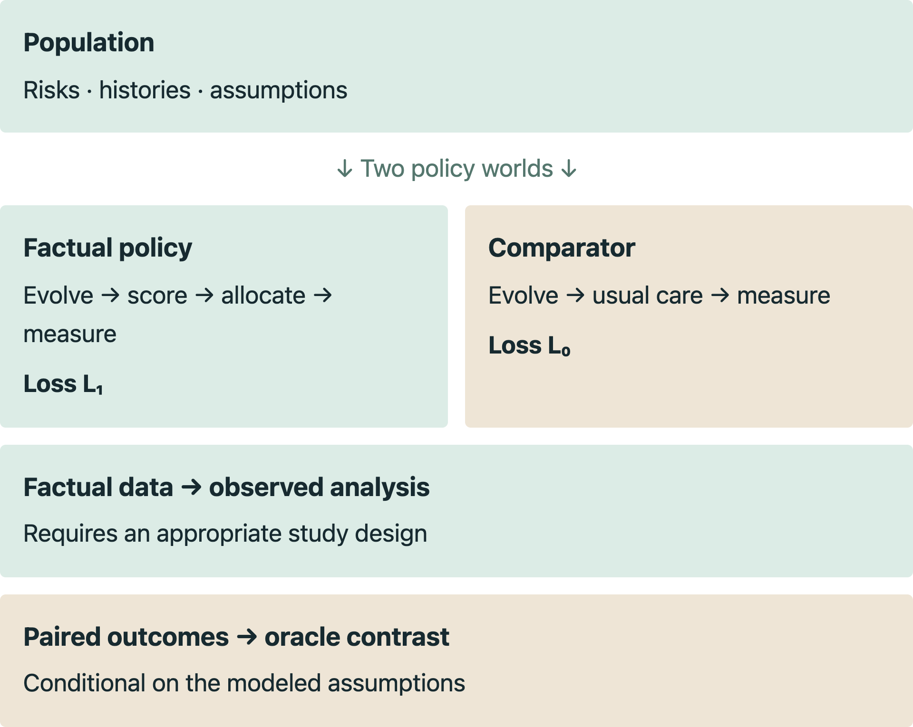
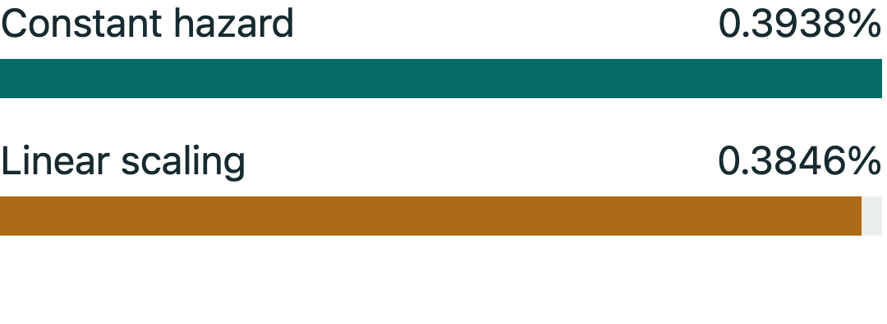
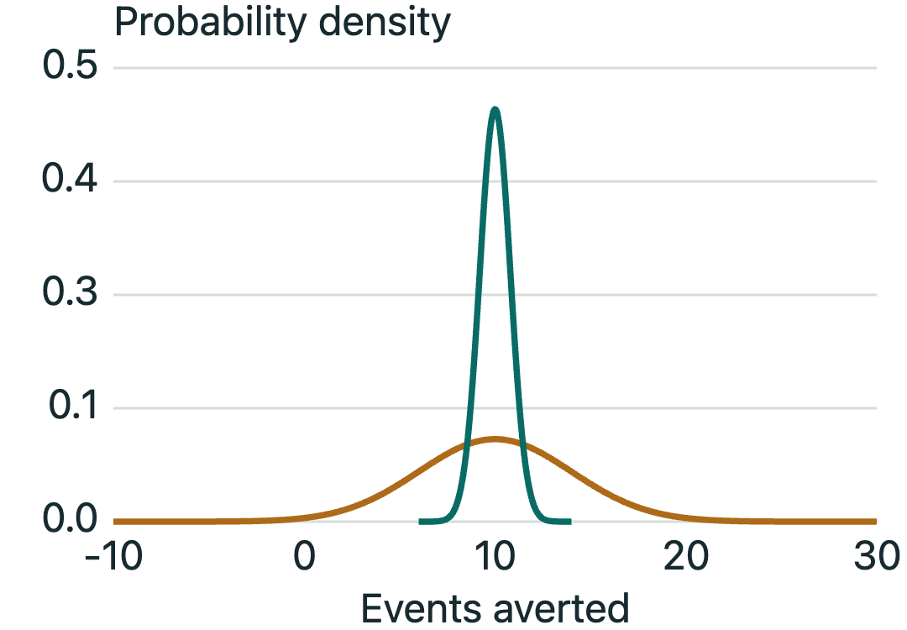
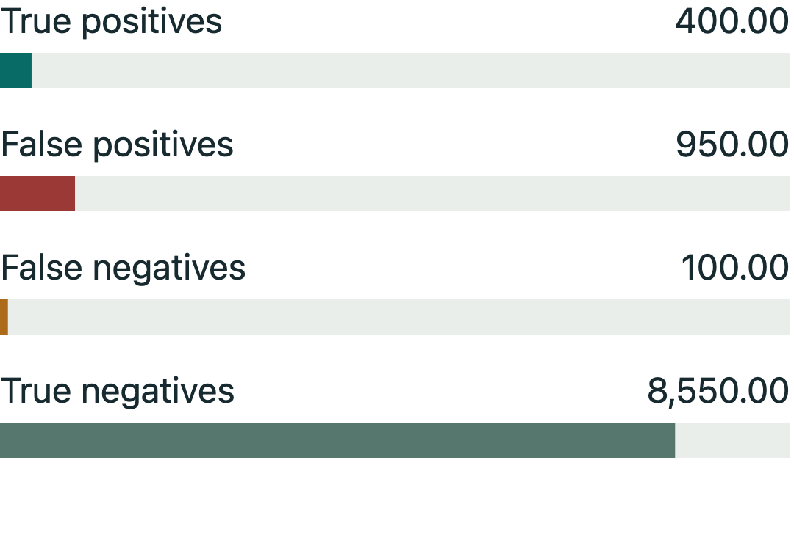
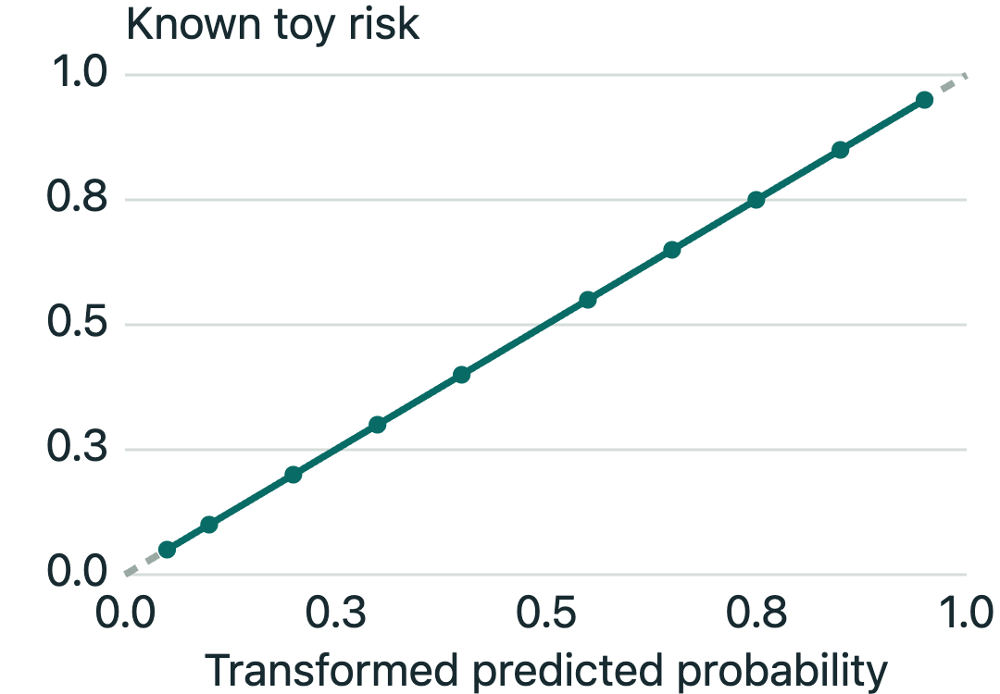
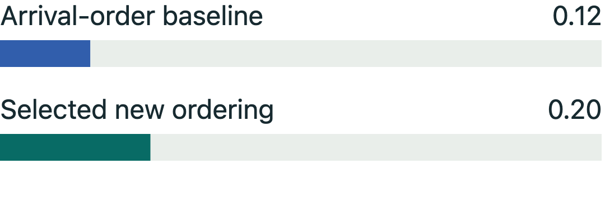
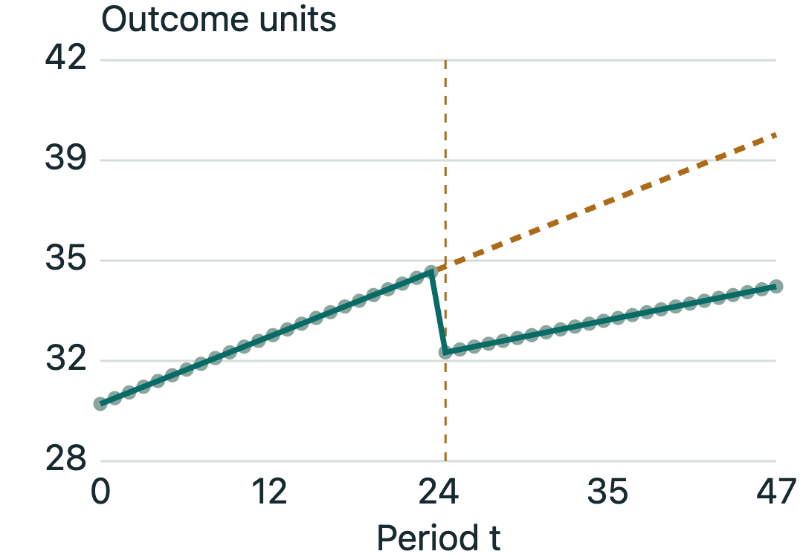
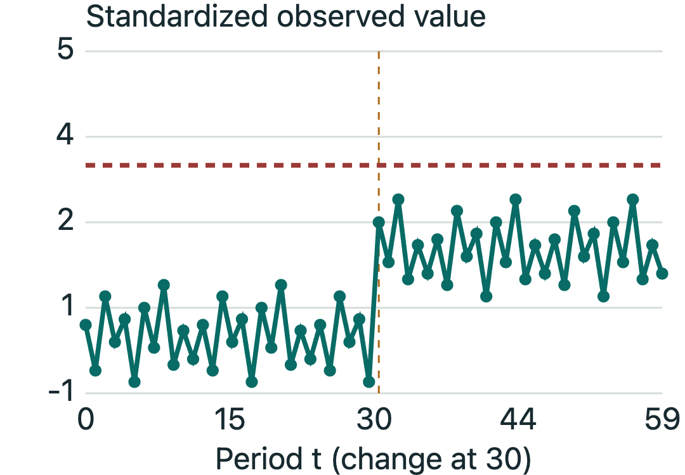
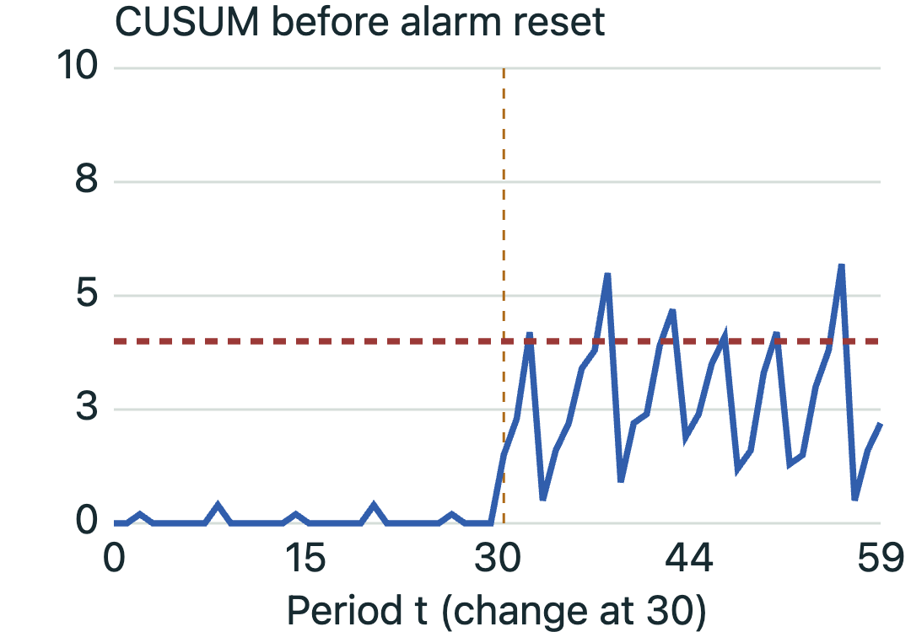
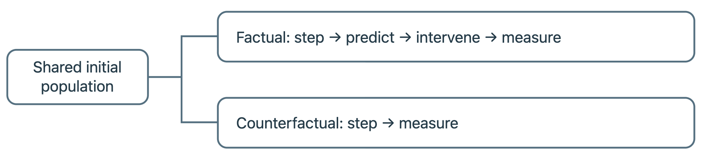

This is the project textbook converted into a reflowable e-book. All sixteen chapters, worked exercises, references and cited source excerpts are retained. Text can follow your reader’s font and size settings. The cover and scientific figures are embedded images.
The eight interactive labs become static worked examples: each records its default inputs, charts, numerical results and assumptions. References to sliders, browser search, print controls or local review notes elsewhere in the text describe the original HTML companion. Those controls do not run in this e-book.
Tables are presented as labeled records so wide comparisons remain readable on a narrow screen. Exercise answers are expanded. The detailed code excerpts follow the main chapters as source-note appendices; mathematical source notation is retained in its own appendix. Repository file links are printed references because local workspace files are not available on a Kindle. External scholarly links remain clickable when your reader has network access.
Reading paths
Clinical and operations: chapters 01, 08, 12 and 16.
Quantitative and research: chapters 02–05, then 09–11.
Engineering and assurance: chapters 07 and 13–16, followed by the source notes.

A shared modeled population supports two policy worlds. The paired contrast remains conditional on the model assumptions.
Foundations · Chapter 01
A laboratory for decisions about healthcare AI
Learn the project’s scientific purpose, the chain from assumptions to outcomes, and how to read this book critically.
After this chapter, you can
Explain why predictive accuracy alone does not determine deployment value.
Separate mathematical results, modeling choices, code behavior and empirical evidence.
Locate the scenario, experiment and review layers for a claim.
The central question
A model can identify risk accurately and still make a service worse. Staff may have no time to act. An alert may arrive after the useful treatment window. A new workflow may duplicate existing care or displace a patient who would otherwise have been helped. Conversely, a modest predictor can support useful action when the intervention is effective, timely and inexpensive.
The Healthcare Intervention Simulation SDK is a Python laboratory for studying this complete chain. It generates a population, evolves its circumstances through discrete time, produces model scores, applies a specified policy, and records outcomes. A branched simulation can propagate a comparison world without deployment of the model-driven intervention. Experiments vary assumptions and evaluate what those assumptions imply.
The intended output is an argument about a decision: which mechanisms make a proposed deployment promising, fragile, harmful or hard to evaluate? The output is conditional on the constructed world. It is not a clinical trial, a substitute for local operational knowledge, or evidence that synthetic patients represent a particular hospital.
Four kinds of statements
Mathematical resultA variance identity follows from definitions under its stated conditions. It does not need a hospital dataset.
Modeling assumptionAn intervention reduces risk by a configured amount. The simulation uses this claim; it does not establish it.
Implemented behaviorThe engine calls the scenario’s methods in a particular order. This is checked against source and tests.
Empirical illustrationA specific experiment produced a particular result. Its seed set, configuration and source identity delimit the claim.
These distinctions are the book’s organizing discipline. Equations are accompanied by their assumptions. Code excerpts show the implementation they explain. Worked examples are invented teaching examples unless explicitly identified as retained project evidence. A review question asks what evidence would justify moving from a modeled mechanism to an operational conclusion.
For example, “probabilities sum to one” is an accounting property. “This population has 30% true malnutrition” is a model input unless independently justified. “The queue respects eight daily assessments” is a code behavior to test. “The ranked policy reduced missed diagnoses in three runs” is limited experimental evidence. Combining all four into “the intervention is validated” loses the distinctions needed for review.
A first calculation before simulation
Suppose an invented service sees 10,000 eligible encounters each year. Without intervention, 5% have an event. A predictor reaches 80% of those who would have an event; staff act on half the useful alerts; timely treatment prevents one quarter of otherwise occurring events. Under this deliberately simple, nonoverlapping, no-displacement model:
The expected benefit is 10,000 × 0.05 × 0.80 × 0.50 × 0.25 = 50 events averted. Here N is eligible volume, π is the untreated event probability over the stated horizon, Se is sensitivity to those events, a is action probability conditional on a useful alert, and e is prevention probability conditional on action. The conditional meanings matter; multiplying unrelated marginal averages generally does not reproduce the joint probability.
This is a useful first pass. It does not account for false-positive work, unequal treatment effects, repeated alerts, changing risk, delay, shared capacity or substitution for usual care. If specificity were 90%, the same operating point would also generate 950 false-positive alerts alongside 400 true-positive alerts. Fifty prevented events cannot be judged without the workload and consequences associated with those 1,350 alerts.
Simulation is warranted when those interactions change the decision. It should add a mechanism that matters, not merely turn simple arithmetic into an elaborate animation. In particular, one can build useful analytical models of score distributions too; the repository’s preferred controlled-model workflow is an engineering convention, not a theorem that every ranking question requires this SDK.
The project in layers
Layer: core/
Main responsibility: Time orchestration, scenario interface, random streams and result containers
Reviewer’s question: Is the experiment executed in the intended order without branch contamination?
Layer: population/
Main responsibility: Risk heterogeneity and temporal building blocks
Reviewer’s question: Do distribution parameters and time units have the intended meaning?
Layer: ml/
Main responsibility: Generate scores or labels with controlled statistical properties
Reviewer’s question: Which population, target and metric were actually calibrated?
Layer: scenarios/
Main responsibility: Clinical or operational mechanisms, eligibility, queues and outcomes
Reviewer’s question: Does this represent the proposed and usual-care workflows?
Layer: experiments/
Main responsibility: Analysis, lifecycle, uncertainty, traces and review evidence
Reviewer’s question: Are estimates, provenance and evidence requirements complete?
Layer: tests/, scripts/, docs/
Main responsibility: Executable checks, structural guards and human explanation
Reviewer’s question: Which failure would each check detect, and what remains untested?
The engine treats state as an opaque object. A scenario may use a matrix, dataclasses or dictionaries. The five required behaviors are create_population, step, predict, intervene and measure. Optional helpers such as clone_state support the contract without adding another required clinical phase. This abstraction keeps scheduling generic while leaving responsibility for clinical meaning inside each scenario.
A prediction object is not the entire intervention. The scenario decides eligibility, capacity, timing and action. An outcome object is not automatically an incident event count: its semantics are scenario-specific. The data chapter explains why that distinction is essential before fitting an estimator.
What is implemented and what is aspirational
The repository includes working scenarios for stroke prevention, appointment operations, retention, sepsis and malnutrition, plus paper-inspired implementations. These share infrastructure but differ in fidelity, calibration, workflow detail and validation maturity. A directory named after a published study does not certify that its code reproduces the study’s design. Chapter 13 gives the source-level atlas.
The review-packet implementation adds traceable claims, evidence statuses, source/configuration/model identities, case walkthroughs and separate role views. It makes review more specific. It cannot supply a clinical reviewer’s judgment, repair a missing validation dataset, or make an incomplete statistical design applicable to a different deployment.
This edition documents the locally implemented state at the displayed baseline and content hashes. Some relevant changes are not committed. A Git revision alone is therefore insufficient to identify the manuscript’s code snapshot. The evidence appendix records file-level hashes; the build and quality report describe the checks on this documentation. External scientific peer review remains pending.
How to study the book
Clinical and operational readers can begin here, then study decisions and capacity, the malnutrition example, and the review chapter. Quantitative readers should follow probability through causal comparisons and Monte Carlo error before reading the inference chapters. Engineers can connect the state contract and random streams to result semantics and verification, then use the worked numerical exercises as independent reference cases.
The interactive labs are small teaching calculators. They do not execute the production simulator and do not modify project configurations. Their visible assumptions are intentionally narrower than a full scenario. Every lab presents numerical results as text as well as a chart, so the visual should make a quantity easier to understand without becoming its only representation.
A productive review proceeds from a claim to an estimand, then to its assumptions, implementation, experiment, uncertainty and decision consequence. That sequence is more demanding than checking whether a notebook runs. It is also the route by which a simulation can become an inspectable scientific argument.
Practice and check your reasoning
Open an exercise for its worked answer
Exercise 1.1 · In the first-pass example, staff act on only 10% of useful alerts. What happens to expected benefit?
It falls from 50 to 10 events averted, if all other conditional probabilities and the no-displacement assumptions remain valid.
Exercise 1.2 · Why does a successful software test not establish treatment efficacy?
A test can check that the configured effect is applied correctly. Whether that effect is realistic requires independent evidence about the intervention.
Questions for peer review
What decision would change because of this simulation?
Which inputs are measured locally, inferred from external evidence, or hypothetical?
What does the proposed policy change besides prediction?
These excerpts were read from the local source at build time. They support the specified behavior; they do not prove every path is correct. Expand to inspect numbered lines and the file identity.
Foundations · Chapter 02
Probability: uncertainty has a structure
Build from events and conditional probabilities to heterogeneous populations and reproducible random worlds.
After this chapter, you can
Distinguish an individual risk, a realized event and a population event rate.
Derive the relevant Bernoulli, binomial and beta quantities with their conditions.
Explain why random streams and sample transformations matter for scientific interpretation.
Let Y be one if an event occurs and zero otherwise. If its probability is p, then Y has a Bernoulli distribution. Before the draw, p is an expectation; after the draw, Y is an outcome. A patient with predicted probability 0.8 can remain event-free. That single observation is not evidence that the probability was necessarily wrong.
From the two possible values, E[Y] = 0·(1−p) + 1·p = p. Since Y² = Y, its variance is E[Y²] − E[Y]² = p(1−p). The expected value need not itself be a possible individual outcome. An expected 0.8 event is a mathematical average over repetitions, not a fractional clinical event.
For n independent patients with the same probability p, the sum of events is binomial. Its expectation is np and its variance is np(1−p). Independence and a common p are conditions, not decorative notation. With known unequal probabilities and conditional independence, the sum instead has a Poisson-binomial distribution:
If patients share shocks or capacity, covariance terms must also enter the variance. Observations collected repeatedly from the same patient should not be treated as new independent people merely because a table has one row per week.
Conditional probability and Bayes’ rule
P(A given B) is the fraction of the B population that also satisfies A. It is generally different from P(B given A). For a positive model flag, sensitivity conditions on actual cases; positive predictive value conditions on flags. This reversal is the reason prevalence matters.
The multiplication rule gives P(A and B) = P(A given B)P(B). Apply it to cases and positive flags, and partition all positive flags into cases and noncases:
This derivation is algebra on the same joint distribution. If sensitivity comes from a severe inpatient cohort and prevalence comes from outpatient screening, combining them assumes transportability that the identity itself does not provide. The MIT probability materials develop these basic conditional-probability ideas; Chapter 6 applies them to model evaluation.
An invented population with 5% cases, 80% sensitivity and 90% specificity produces 400 true flags and 950 false flags per 10,000 people in expectation. PPV is 400/1,350 = 29.63%. A reader who mistakes sensitivity for PPV would expect far more useful work than this model supplies.
Heterogeneous risks: the beta distribution
A population in which everybody has risk 0.05 differs from one in which some people have near-zero risk and others have much higher risk. Both may have mean risk 0.05. Their ranking opportunities and repeated histories differ.
A standard beta distribution has support between zero and one and two positive shape parameters α and β. Its mean and variance are:
These definitions and the density are documented in the NIST beta reference. The SDK helper uses concentration as α, with β = α(1/μ−1), where μ is the requested mean. Some statistical software instead calls α+β the concentration. Applying that other convention here would generate the wrong distribution.
At μ = 0.05 and α = 0.5, β = 9.5. The untransformed beta population has variance 0.004318 and standard deviation about 0.0657. At α = 5, β = 95 and the standard deviation is about 0.0217. Holding the mean fixed, the smaller α creates more heterogeneity under this parameterization.
The actual helper then rescales the sampled risks by requested mean divided by sampled mean, and clips them at 0.99. This is an implementation choice beyond drawing independent beta variables. Before clipping, rescaling enforces the finite sample mean; after clipping, the mean can fall below its target. The transformed sample is no longer an independent sample from the original beta law. A test of raw beta moments is therefore not an exact test of the final helper output.
Two levels of variability
Suppose a patient’s latent P varies across the population, and Y given P is Bernoulli(P). The law of total variance gives:
The cancellation explains a subtle point: population risk heterogeneity does not, by itself, change the marginal variance of a single binary event with the same mean. It changes conditional prediction and dependence structures. If two events for the same person are independent conditional on a persistent P, their unconditional covariance is Var(P). A history can therefore be informative even when events are conditionally independent.
Do not extend this toy argument automatically to the SDK’s longitudinal scenarios. Their risks evolve, treatment changes state, and patients may leave or return. Also distinguish annual risk from shorter-window risk. A nonlinear time conversion can change the mean after averaging, even when the mean annual probability is held fixed. “Same base rate” requires a horizon and a precise definition.
Simulating a Bernoulli event
Generate U uniformly between zero and one; set Y = 1 when U < p. The chance of landing in that interval is p. This construction gives both an implementation and an independent check. If two policies use the same U and probabilities p₁ ≤ p₀ for the same event, then the treated event cannot occur without the untreated event also occurring. This is a pathwise monotonicity property of this particular coupling.
It stops being a universal claim when events, eligibility, timing or resource allocations differ. A policy can lower one patient’s risk while leaving another patient untreated. A null treatment effect can coexist with intervention workload or altered accounting. Boundary tests must state which mechanism is disabled and which outcomes are expected to agree.
Random streams are experimental design
The SDK allocates named streams for population, temporal evolution, prediction, intervention and outcomes. This separation reduces accidental coupling: requesting extra prediction draws need not shift the temporal generator. NumPy’s SeedSequence documentation describes the reproducible seed expansion used by the project. Its stream-separation properties are probabilistic assurances of the generator design, not a proof of stochastic independence for every derived quantity.
create_streams() advances a partitioner’s spawn state. Calling it twice on the same partitioner does not replay the first set of streams. fork() creates a new partitioner with the same master seed so matching branch streams start at matching positions. Consuming different numbers of draws can subsequently misalign them; Chapter 4 examines the consequence.
For reproducibility, record the seed, code, configuration, model bytes and numerical environment. A seed alone does not freeze an algorithm, a data source or a dependency’s implementation. For inference, also record the planned number of independent replications and every failed or missing run. Reproducibility answers “can we replay this computation?”; probability theory answers “what does its variation mean?”
Practice and check your reasoning
Open an exercise for its worked answer
Exercise 2.1 · Three independent patients have risks .1, .2 and .4. Compute the expected event count and variance.
The expectation is .7 and variance is .09 + .16 + .24 = .49.
Exercise 2.2 · At mean .1 and the SDK concentration .5, what is beta?
.5 × (1/.1 − 1) = 4.5; the total shape α+β is 5, not .5.
Exercise 2.3 · If a raw sample mean is below the requested mean, can clipping after rescaling preserve exact mean matching?
Only if no values are clipped. Any downward clipping after exact rescaling reduces the sample mean below the requested target.
Questions for peer review
Which independence assumptions justify the reported variance?
Is the stated event probability tied to the same population and horizon as the labels?
Are tests checking the theoretical distribution or the transformed implementation?
These excerpts were read from the local source at build time. They support the specified behavior; they do not prove every path is correct. Expand to inspect numbered lines and the file identity.
An annual probability, a weekly probability and an instantaneous hazard are different quantities. A hazard is a rate per unit time conditional on remaining event-free. A probability is dimensionless and lies between zero and one. A value labeled “risk .05” is incomplete until its outcome and horizon are specified.
For a constant nonnegative hazard λ per year, survival through t years is S(t) = exp(−λt). An annual risk r therefore implies 1−r = exp(−λ), so λ = −log(1−r). The probability over Δt years is:
The exponential survival and constant-hazard interpretation are described in the NIST reliability reference. This conversion preserves the annual survival probability when the hazard is constant and survival across successive intervals follows that model. It does not assert that a real patient’s hazard is constant.
At annual risk 5%, λ is approximately 0.051293 per year. Weekly risk is approximately 0.09859%, and four-week risk is 0.39379%. Directly dividing 5% by 52 gives 0.09615% per week. The linear shortcut is close at small risk but has a different meaning and becomes less accurate at larger risks.
Worked lab: A year is not 52 identical fractions
Change annual risk and the observation window. The exact conversion assumes a constant hazard within the window.
Static example from the HTML lab’s default settings.
Annual probability: 5%
Window length: 4 weeks

Exact versus linear window probability
Window probability: 0.3938%. Annual hazard: 0.05129 per year. Linear scaling differs by 0.0092 percentage points.
Analytical conversion only. No patient trajectories are generated. Percentages refer to probability of at least one event.
The lab compares the exact constant-hazard conversion with linear scaling. Its annual risk is capped below one because risk one corresponds to an infinite constant hazard. In production, annual_risk_to_hazard clips inputs into [0, 0.999999]. This numerical guard prevents an infinite logarithm, but it also means an invalid negative input is silently converted to zero. Validation should detect invalid upstream values rather than rely on clipping as scientific justification.
Composing periods and changing hazards
If hazards are constant within intervals but vary between them, survival is the product of interval survival probabilities. Taking logarithms turns the product into a sum:
This is why multiplying an annual probability by the number of weeks is wrong. The hazard accumulates over time; probability accounts for the remaining event-free population. For recurrent events or current-state indicators, a different counting model may be needed.
The stroke scenario samples weekly events but does not remove a patient after a stroke in the reference implementation. Its accumulated weekly event count can therefore include recurrent events. It should not automatically be interpreted as the number of unique patients with a first stroke. Even with a fixed hazard, the expected sum of 52 independent weekly indicators is 52p_week, whereas the probability of at least one event is 1−(1−p_week)^52. These differ because the first includes repeat occurrences.
A state transition is a model equation
At time t, write Sₜ for the full scenario state and Uₜ for temporal randomness. A generic transition has the form Sₜ₊₁ = f(Sₜ,t,Uₜ). This notation makes two responsibilities clear. The state must contain all history required by the next step, and the transition must specify what changes before an intervention can occur.
The SDK’s state can include latent risks, demographic categories, admission status, treatment persistence, queue position and prior actions. Keeping history in state permits isolated branch evolution. Storing branch-specific evolving history in a shared scenario attribute can invalidate that isolation.
A finite-state Markov chain is one special case: the next-state distribution depends on the current state and a transition matrix whose rows are nonnegative and sum to one. Healthcare histories are rarely Markov in a coarse label such as “admitted.” Expanding the state to include time since admission, previous treatment and severity can make the modeled dependency explicit. This is a modeling construction, not proof that omitted history is irrelevant in reality.
AR(1): persistence with a tractable reference
An autoregressive process of order one supplies a simple model for persistent risk modifiers:
Assume |ρ| < 1, constant μ, independent zero-mean innovations with variance σ², innovations independent of the past, and no clipping. At stationarity, taking variances gives v = ρ²v + σ²; solving yields:
The Berkeley AR-model notes give the stationary result and its conditions. At ρ = .95 and σ = .05, the stationary standard deviation is about .1601. This is larger than the innovation standard deviation because past shocks persist. Starting every patient at μ does not initialize the stationary distribution; the finite-time variance builds up toward it.
The stroke implementation adds a seasonal target and clips modifiers to [.5, 2]. Clipping can create probability mass at the boundaries and alter moments and correlations. A time-varying seasonal target changes the mean trajectory. The stationary formula is therefore a reference for the unclipped, constant-mean limiting case, not an exact expected value for every production configuration.
The generic AR1Process helper stores its evolving value in self.current. It is useful as a utility, but sharing one mutable instance across counterfactual branches would be unsafe. Stroke instead keeps modifiers in each state array. A familiar mathematical model does not automatically make its software placement correct.
The order of events defines the intervention
In branched mode, the engine advances both states, then predicts and intervenes on the factual branch if scheduled, then measures both. This order is part of the scientific model. A measurement after intervention can show an immediate modeled effect. A worklist written by intervention but consumed in the next step acts later.
Malnutrition uses the latter pattern. intervene writes ranking information, while the next day’s step performs assessments through a single capacity-accounted worklist. A high score generated today does not mean an assessment already occurred today. Appointment scenarios also separate a schedule from its later resolved attendance. These timing conventions must survive into the analysis dataset and individual case narrative.
For a simple timing audit, write one row per phase for one entity: entry state, evolution, available information, decision, action, measured outcome and next state. Then ask whether any prediction used information that would not yet exist. A diagram of stages is useful only when its arrows correspond to actual code order.
Three things that look like an event count
Incidence counts new events during an interval. Occupancy records whether a person is currently in a state. Cumulative burden sums an amount over time. A patient septic for three days can contribute one onset, three patient-days of septic occupancy, and a severity-weighted cumulative burden. These quantities answer different questions.
The sepsis scenario’s events currently represents septic-state occupancy, so summing it over timesteps does not count unique sepsis onsets. The malnutrition scenario carries cumulative harm in state; adding that cumulative state repeatedly would double-count prior harm. Event increments and terminal totals must be reconciled according to the scenario’s declared semantics.
Rigorous temporal validation checks units, event timing, state transitions and accounting together. A plausible-looking curve cannot reveal a hidden factor of 52, a one-day intervention lag, or an outcome accumulated twice. Those failures require explicit reference calculations and trace inspection.
Practice and check your reasoning
Open an exercise for its worked answer
Exercise 3.1 · At a constant annual risk .36, what is the six-month risk?
1 − √(.64) = .20. Half the annual probability, .18, is the linear approximation.
Exercise 3.2 · For an unclipped stationary AR(1), rho=.8 and innovation SD=.12. Find the process SD.
√(.12²/(1−.8²)) = .20. This result does not apply exactly after clipping or under a varying seasonal mean.
Exercise 3.3 · A patient is positive on days 2, 3 and 4 after becoming ill on day 2. How many incident cases and positive patient-days are represented?
One incident case and three positive patient-days, assuming one continuous illness episode.
Questions for peer review
Do hazard units match the duration passed to the conversion?
Which theoretical process assumptions are broken by implementation guards?
Are the reported outcomes onsets, occupancy, unique people or cumulative burden?
These excerpts were read from the local source at build time. They support the specified behavior; they do not prove every path is correct. Expand to inspect numbered lines and the file identity.
Imagine a hospital introduces a model that ranks patients for a limited number of nutrition assessments. More high-risk patients receive assessments promptly. That observation is encouraging, but it does not answer the deployment question. Some would have received a standard consult anyway. Others may now wait longer because the same dietitians serve both groups. The relevant comparison is between complete workflows operating on comparable populations over a stated period.
A counterfactual is an outcome under a specified alternative intervention or policy. It is not simply a forecast of next month's event count. The word “alternative” carries the scientific burden: alternative to which staffing level, existing care, eligibility rule and implementation date? Changing the comparator changes the question even when the factual simulation remains identical.
Potential outcomes and the target quantity
For an individual, write Y(1) for the outcome under one intervention and Y(0) for the outcome under its comparator. Their difference defines an individual causal contrast. In observed data, the same person cannot simultaneously follow both mutually exclusive histories. This missing comparison is central to Holland's original account of causal inference.
For this SDK, a policy-level notation is often more useful:
Here H is the follow-up horizon; L is the system's accumulated loss, such as missed diagnoses or departures; π₀ is baseline care; π₁ is the proposed workflow; θ contains model assumptions; and U denotes simulated randomness. Positive Δ means the proposed workflow reduces loss. For revenue or utility, choose and state the opposite sign convention if appropriate.
An estimand is this precisely specified target. An estimator is the procedure used to calculate an estimate from data. A confidence interval describes uncertainty in an estimator under assumptions. None of these is interchangeable with a decision threshold such as “at least five events averted per year.”
Write the target in ordinary language before using symbols: among admissions generated by this population model, what is the expected change in missed malnutrition at discharge, under this prioritization policy versus retained standard care, at this capacity and follow-up? Also specify what happens to patients still admitted when observation ends. Excluding them silently can change the denominator and the target.
Identification outside the simulator
A simulation can calculate both branches because its programmer specifies the mechanisms. Real-world analysis must establish when observed contrasts identify the desired causal contrast. Familiar requirements include a well-defined intervention consistent with recorded exposure, sufficient overlap to compare relevant patients or settings, and appropriate control of confounding. Longitudinal treatment decisions add further assumptions about histories and time-varying covariates. These requirements are developed in Hernán and Robins' causal-inference text.
Inside the simulator, there is no mystery about which configured mechanism generated a result. There may be substantial uncertainty about whether that mechanism represents the hospital. The simulated oracle answers a conditional question: what follows if these assumptions hold? It does not make unmeasured clinical confounding disappear, establish the effect of a real intervention, or prove transportability to a different hospital.
An especially useful experiment gives an analyst only the variables that would be observable in deployment, lets the analyst fit the planned method, and compares the estimate with the simulated oracle contrast. This evaluates the method under the selected data-generating assumptions. Changing those assumptions is part of evaluating the method, not an inconvenient deviation from a successful demonstration.
Capacity creates interference
Patients may share queues, staff and alert-response budgets. Giving one patient an earlier appointment can change another patient's outcome. Individual treatment indicators alone then omit part of the intervention environment. A more explicit notation is:
The outcome for individual i can depend on the allocation vector a for the entire population and on capacity K. This is interference through a shared resource. It does not prevent a useful causal question; it encourages defining the comparison at the policy or service level.
For example, assigning an assessment to patient A may prevent harm to A while displacing patient B's assessment. Counting only A's benefit answers a narrower question than total program benefit. The malnutrition scenario's two-branch accounting is useful precisely because both favorable and adverse paths can appear. A “helped case” explains one mechanism; it is not a sample estimate of net benefit.
Likewise, comparing treated patients with untreated patients in a single factual run is generally misleading. A risk-ranking policy deliberately selects a different population for treatment. A worse outcome among treated patients can coexist with a beneficial program.
Worked example: effect and precision are different
Consider an invented one-period population, with no capacity spillovers or changes in eligibility. Two hundred high-risk patients each have baseline event probability 0.30; eight hundred others have probability 0.05. Baseline expected events are 60 plus 40, or 100. Suppose treatment reaches all two hundred high-risk patients and reduces their probabilities by 25%, without changing the others. Expected factual events are 45 plus 40, or 85: fifteen events averted.
This arithmetic does not require a simulation. Simulation becomes useful when treatment uptake varies, capacity binds, scores imperfectly identify risk, or event histories feed back into future decisions. It also quantifies variation around the conditional expectation. If one run produces twelve averted events, that need not contradict an expected effect of fifteen.
For replication r, let D be baseline loss minus factual loss. Independent replications estimate the mean effect by averaging these differences:
R is the number of independent replicated worlds. The two branches within one world are deliberately dependent. Therefore uncertainty should usually be computed from the R paired differences, not by treating the 2R branch outcomes as independent observations.
The covariance measures whether a difficult simulated world tends to be difficult for both policies. Positive covariance reduces the variance of their difference. This is the rationale for common random numbers in simulation comparisons. Negative covariance has the opposite effect; published simulation experiments document such variance increases.
For a numerical illustration, suppose each branch has standard deviation ten events. Independent branches give difference variance 200. Correlation 0.8 gives variance 40; correlation −0.5 gives variance 300. Across twenty-five independent pairs, the corresponding Monte Carlo standard errors are approximately 2.83, 1.26 and 3.46 events. Shared inputs are therefore a design technique whose performance must be measured.
Worked lab: Shared worlds change precision
Both branch standard deviations are 10 events. Change their correlation and the number of independent paired replications.
Static example from the HTML lab’s default settings.
Var(L₀−L₁) = 100 + 100 − 200ρ. Correlation is an illustrative input; shared seeds do not guarantee this value. The mean effect is unchanged in this calculator.
Use the coupling lab to change correlation while holding branch variability fixed. Notice that the expected effect can remain unchanged while its sampling precision changes substantially. More replications reduce Monte Carlo noise; they do not correct an implausible treatment effect or missing displacement mechanism.
What the engine actually does
BranchedSimulationEngine._run_branched creates one population and clones its state. It steps both branches, then predicts and intervenes only on the factual branch when scheduled, then measures both. Baseline care belongs inside the scenario's ordinary evolution and measurement; “no AI” does not mean “no care.”
RNGPartitioner.fork constructs separate generators from the same master seed. For a fresh scenario obeying the named-stream contract, the corresponding temporal and outcome streams start aligned; the engine does not reset their positions to match at every timestep. Reusing an already advanced scenario is not equivalent to starting a fresh paired replication. Alignment depends on scenario code consuming corresponding draws consistently. Drawing once per eligible patient can break alignment when eligibility differs between branches. Nurse retention now draws a priority for every nurse, including inactive nurses, before using those priorities for eligible groups.
SNAPSHOT instead clones the current factual state after prediction and before intervention. Earlier factual treatment can already be embedded in that state, and both measurements use the same scenario RNG sequentially. This is a same-step comparison with inherited history, not an independently propagated no-deployment world. NONE produces a single trajectory and supplies no oracle comparator.
Failure cases and a review discipline
Misaligned randomness does not automatically bias a mean difference if each branch still has the intended marginal distribution; it can destroy pairing efficiency and the interpretation of individual case matches. Shared mutable scenario attributes can be more serious: a factual prediction that changes something later read by counterfactual evolution can contaminate the comparator itself.
Before interpreting Δ, review the comparator, interference, horizon and denominator together. Then verify branch isolation and inspect paired differences across independent seeds. Finally ask which real-world assumptions the simulator has encoded rather than established. A precise oracle answer is scientifically useful when its conditional scope is visible.
Practice and check your reasoning
Open an exercise for its worked answer
Exercise 4.1 · Both branch standard deviations are 4 and their correlation is .75. What is the variance of their difference?
16 + 16 − 2(.75)(4)(4) = 8. With independent branches the variance would be 32.
Exercise 4.2 · A snapshot shows no new assignment today, but the patient was treated last week. Is this an untreated historical comparator?
No. The snapshot inherits the factual state before today’s intervention, including any lasting effect of last week’s treatment.
Exercise 4.3 · A policy averts five events among selected patients but creates three additional events through displaced care. What is the net policy benefit in event units?
Two events averted, provided both counts use the same population and horizon and encompass all relevant effects.
Questions for peer review
What complete baseline-care policy is represented in the counterfactual?
Can allocating treatment to one entity change another entity’s outcome?
Does the reported uncertainty use paired replication differences?
Which causal assumptions are supplied by the simulator rather than established from real data?
These excerpts were read from the local source at build time. They support the specified behavior; they do not prove every path is correct. Expand to inspect numbered lines and the file identity.
Imagine simulating a service for one year. The same staffing policy sometimes prevents eight events and sometimes twelve because arrivals, patient needs, and outcomes differ. A seed makes one realization reproducible. Repeating that seed confirms reproducibility; it does not create another independent realization. Repeating the experiment with independently partitioned seeds estimates how this specified simulated service behaves across possible realizations.
The unit of repetition matters. Ten thousand patients inside a hospital simulation are not ten thousand independent estimates of the hospital policy's effect. They share staffing, queues, and environmental shocks. For a hospital-level contrast, first calculate one contrast per simulated hospital run, then summarize the independent runs. When factual and counterfactual branches share randomness, calculate their difference within each seed before aggregating. That pairing can remove irrelevant noise while preserving the variation of the contrast we actually want.
Name the uncertainty before drawing a ribbon
A seed distribution interval describes the spread of run-level results under fixed assumptions. The SDK reports empirical 2.5th and 97.5th percentiles. These are sample quantiles, not a guaranteed prediction interval for the next hospital, and their tails are poorly resolved with few runs.
A Monte Carlo standard error, or MCSE, describes numerical uncertainty in an estimated average caused by using finitely many repetitions. A study confidence interval belongs to an estimator applied inside one simulated study: for example, the interval around an interrupted time series coefficient. Repeating studies lets us evaluate that interval's coverage. Input uncertainty concerns unknown parameters such as an intervention effect or arrival process. More seeds at one fixed parameter value do not resolve it.
Quantity: Seed spread
Repeated object: Complete simulation run
Question: How variable are simulated outcomes?
Quantity: MCSE
Repeated object: Estimated average across runs
Question: How accurately have we computed that average?
Quantity: Study interval
Repeated object: Dataset generated within a run
Question: How uncertain is this study's estimate?
Quantity: Input uncertainty
Repeated object: Assumed model parameters
Question: How much does the conclusion depend on uncertain inputs?
Why the square root appears
For independent run-level values with a common finite variance, the variance of their average decreases in proportion to the number of repetitions. Estimate the standard error with:
Here R is the number of independent runs, Y is the run-level quantity, the bar denotes its average, and s_Y is its sample standard deviation. Quadrupling R approximately halves this source of uncertainty. It does not halve the variation of individual runs.
Here t is the Student distribution quantile with R−1 degrees of freedom. Under independent normally distributed run-level values, this construction has exact nominal coverage; with nonnormal values, its justification is approximate. The central limit theorem concerns the distribution of the average as repetition grows, not a transformation of every outcome into a normal variable. Severe skew, rare events, and dependence can make a small run count inadequate. The confidence level describes the interval procedure across repetitions, rather than a probability assigned to the fixed mean after observing an interval. NIST's mean interval reference gives the underlying construction.
Work one small example by hand
Use four invented paired benefits: 8, 10, 12, and 10 events. Their mean is 10. Their sample standard deviation is about 1.633, so MCSE is 0.816. With only three degrees of freedom, the 95% t multiplier is about 3.182: the interval is approximately 7.40 to 12.60. Calling this a four-run demonstration is essential; the formula does not establish that these four values adequately represent a complicated simulator.
With 100 independent runs, a mean of 10 and seed standard deviation of 4 give MCSE 0.4 and a mean interval of approximately 9.21 to 10.79. Individual runs still vary on the scale of four events. A narrow interval around ten therefore does not promise that every deployment prevents approximately ten events.
Worked lab: More runs sharpen the mean
Assume normally distributed independent run effects with mean 10 events averted. Compare the scale of individual-run variation with the sampling distribution of the mean.
Static example from the HTML lab’s default settings.
Run standard deviation: 4 events
Replications: 25

Run-effect distribution in gold; distribution of means in teal
Run SD (gold): 4.00 events. Mean MCSE (teal): 0.80 events. A 95% normal reference range for repeated sample means is 8.43 to 11.57 events. It narrows while the run distribution stays fixed.
Uses a known teaching SD and a normal reference factor 1.96. The production helper estimates SD and uses a t interval. This lab does not draw seeds, estimate study power or vary clinical assumptions.
Use the laboratory to distinguish the distribution of individual runs from the distribution of their averages. Its mean stays fixed at ten events; the controls change run variability and replication count. Varying a clinical-effect assumption would be a separate experiment that can move the expectation itself.
Power and false alarms need their own uncertainty
Some run-level results are binary: did a test reject, did an interval cover the planted truth, or did a monitoring system raise any false alarm? With H successes among R independent repetitions:
At estimated power 0.8 with 30 repetitions, this is about 0.073: the apparent 80% is still imprecise. At zero observed false alarms, the formula gives zero, which plainly cannot establish that false alarms are impossible. The SDK therefore also reports exact Clopper–Pearson intervals. These invert binomial probabilities and can be conservative because a count is discrete. SciPy documents the exact interval method.
For zero alarms in 30 independent null runs, the one-sided 95% upper bound is approximately 9.5%; the two-sided 95% interval has upper endpoint approximately 11.6%. The SDK's generic binomial_performance uses the latter. The monitoring summary additionally exposes the one-sided bound. State which bound supports a claim.
Plan repetitions before celebrating a result
For a desired binary MCSE d, a planning approximation is:
Here p is a planning value, not a known truth, and d is the desired absolute MCSE. Planning near p=0.8 for MCSE 0.01 suggests 1,600 repetitions. Using p=0.5 gives a conservative 2,500. This targets numerical precision, not a clinical sample size or a guarantee that a certification threshold will be met. Interval-width planning and demonstrating a bound below a threshold are different calculations. Prespecify stopping rules; repeatedly stopping when a favorable ordinary interval appears can invalidate its nominal interpretation.
summary separates seed_sd, seed_p025, seed_p975, mcse_mean, and mean_ci95_low/high. With one seed, variance and mean-interval fields are unavailable and uncertainty is INCONCLUSIVE. summarize_metrics can require an exact expected seed set and rejects duplicate seeds, absent required values, and nonfinite metrics. A missing difficult run must not quietly disappear from an otherwise reassuring summary. Reporting Monte Carlo error is a central recommendation in the Morris, White, and Crowther simulation-study tutorial.
Outer uncertainty, inner randomness
If uncertain parameters are represented by an explicitly justified distribution, draw an outer parameter setting and run inner simulations conditional on it. The variance decomposition is:
Here theta represents uncertain inputs. The first term averages variability within an input setting; the second describes changes in conditional means across settings. Samples sharing an outer setting are clustered, so counting every inner result as an independent outer draw exaggerates precision. A sensitivity grid is also useful, but its points do not become a probability distribution without defensible weights.
For peer review, ask what was varied, what was fixed, what was paired, and what was omitted. A successful calculation supports its declared simulated target. It cannot, by itself, establish that the model structure or input distribution describes a real service.
Practice and check your reasoning
Open an exercise for its worked answer
Exercise 5.1 · A seed standard deviation is 12 across 144 independent runs. What is the MCSE, and what happens if you run 576?
MCSE is 12/√144=1. At 576 runs it is approximately 0.5 if the underlying variation is unchanged. The seed standard deviation remains approximately 12.
Exercise 5.2 · Thirty null runs contain no alarms. Is a false-alarm probability below 5% established at one-sided 95% confidence?
No. The exact one-sided upper bound is about 9.5%, exceeding 5%. Zero observed alarms is evidence of a low rate, with substantial remaining uncertainty.
Questions for peer review
What varies across the repetitions used to calculate this interval?
Could dependence or omitted failed runs make the reported MCSE too small?
Which uncertainty would remain if we could run infinitely many seeds?
These excerpts were read from the local source at build time. They support the specified behavior; they do not prove every path is correct. Expand to inspect numbered lines and the file identity.
A score of 0.20 is ambiguous until we name an event, a population, and a horizon. It might mean malnutrition present today, a departure within four weeks, or a missed appointment tomorrow. Those labels produce different learning problems. A score can also be merely a ranking number between zero and one; its numerical range does not make it a probability.
Let Y denote a binary outcome and S the score. Classification asks whether Y=1; probabilistic prediction estimates its conditional probability. Thresholding creates a decision flag, usually S >= threshold. In confusion_matrix_metrics, that inclusive comparison determines which side receives a tied score. Eligibility and available staff still determine whether a flag becomes an action.
A metric therefore needs an accompanying sentence: “Among these eligible patients, using these labels and this horizon, this score achieved this result.” Without that sentence, apparent model comparisons may compare different questions.
Bayes turns a test into a workload
Sensitivity is the fraction of positive cases flagged; specificity is the fraction of negative cases left unflagged. Positive predictive value, or precision, asks a different question: among flags, what fraction are positive?
Here π is prevalence, u sensitivity, and v specificity. The numerator is the probability of a true positive. The denominator adds true and false positives. This follows directly by partitioning the flagged population; it does not require a normal score distribution.
The 114 flags contain only 16 positive cases: PPV is about 14%. These are expected counts under the assumed rates, not a promise that every sample has exactly these counts. Accuracy is 89.8%; flagging nobody would achieve 98% accuracy. Neither number answers whether reviewing the 114 flags is useful.
At 20% prevalence, keeping sensitivity and specificity fixed gives 160 true positives and 80 false positives, hence PPV about 67%. This change requires no improvement in the classifier. It is the consequence of changing the mixture of cases and noncases.
Worked lab: Turn percentages into people
Expected counts in 10,000 independent opportunities. Each setting describes a hypothetical joint distribution, not an independently achievable model operating point.
Static example from the HTML lab’s default settings.
Prevalence: 5%
Sensitivity: 80%
Specificity: 90%

Expected confusion matrix counts on a shared 10,000-person scale
Of 1,350 expected positive flags, 400 are cases. PPV: 29.63%. Total expected count: 10,000.
These are expected counts; a finite realized cohort varies. PPV is undefined when there are no positive flags. Changing prevalence may also change real-world sensitivity and specificity.
Try increasing specificity while holding sensitivity fixed, then consider whether an actual score distribution permits that operating point. The SDK’s theoretical_ppv performs the Bayes calculation, but returns zero when its denominator is below 1e−12. The teaching lab displays undefined when there are no positive flags, preserving the mathematical distinction between an unavailable PPV and a measured PPV of zero. check_target_feasibility checks arithmetic consistency; it cannot establish that a particular model can attain the requested combination.
Ranking: ROC AUC counts comparisons
A receiver operating characteristic, or ROC curve, traces sensitivity against false-positive rate as the threshold moves. Its area has a useful exact interpretation:
S+ is the score of a randomly chosen positive and S− that of a randomly chosen negative from the evaluation population. Each pair contributes one for correct ordering, zero for reversed ordering, and one-half for a tie. AUC measures ordering across all thresholds; it does not say how many people staff will review at the chosen threshold. The official ROC AUC documentation specifies related binary and multiclass uses; this chapter concerns the binary case.
For scores 0.9, 0.8, 0.7, 0.1 with labels 1, 0, 1, 0, the first positive outranks both negatives and the second outranks one. Three of four pairs are correct, so exact AUC is 0.75.
The repository has two relevant implementations. Legacy performance.auc_score integrates a ROC sampled at 200 thresholds between zero and one. Closely packed scores can escape that grid’s resolution. The newer fidelity.auc_fidelity uses average ranks for ties and the exact empirical pair-count equivalent. Consequently, a fit report and an assurance report can differ without either having read different patients. State the method alongside the value.
AUC remains unchanged under a prevalence-only mixture shift if both class-conditional score distributions remain fixed. Changing case severity, eligibility, measurement quality, or treatment can change those distributions. “AUC is independent of prevalence” is not a guarantee of transportability to a different hospital or time period.
Precision–recall: inspect the front of the list
Recall is sensitivity. Precision asks how many selected cases are positive. Average precision summarizes precision as additional positives enter the selected set:
Rk and Pk are recall and precision at successive distinct score thresholds. With distinct scores, this equals the average precision at the rank of each positive. Our four-person example gives (1 + 2/3)/2 = 5/6, approximately 0.833. This differs from its AUC of 0.75 because the metrics average different quantities.
AP is not trapezoidal area under a linearly interpolated precision–recall curve, as the official average-precision documentation explains. The project’s function is named auprc, but computes positive-rank average precision. It uses stable sorting without grouping score ties. Consequently, tied inputs can yield order-dependent results. A reviewer should not assume equivalence to a threshold-grouped implementation when scores tie.
Precision–recall displays expose the positive-case yield of a selected workload, which is useful when positives are rare; Saito and Rehmsmeier investigate this distinction. Nevertheless, AP depends on the population’s prevalence. For an actual daily budget, also report precision_at_k, capture_at_k, and the integer number selected. The SDK rounds the requested fraction and selects at least one entity from a nonempty cohort, so “top 10%” is not always exactly one tenth.
Calibration: can we trust the number itself?
A calibrated 20% group experiences the specified event about 20% of the time over repeated comparable observations. Calibration is a population property; it does not mean every individual with score 0.20 has an observable personal frequency of exactly 20%.
Here pi is a predicted probability, yi its binary label, and n the evaluation count. Predictions 0.8 and 0.2 for outcomes 1 and 0 give Brier 0.04. Reversing those probabilities gives 0.64. Lower is better, but Brier reflects more than calibration alone, as the official calibration guide discusses.
A constant prediction equal to prevalence can be calibrated yet have AUC 0.5. Conversely, a strictly increasing transformation preserves ranking while potentially damaging calibration. The SDK’s legacy calibration_slope fits a line through binned observed and predicted means; its flat-score fallback of 1.0 is an implementation convention. It is not the logistic recalibration slope used by retention’s drift monitor, nor evidence of perfect calibration.
From a number to evidence
Choose labels before inspecting performance. Retention’s synthetic prediction-window labels describe its score generator; matured factual departures describe actual simulated future outcomes after care. Sparse positives make either estimate unstable. Fidelity gates return INCONCLUSIVE for insufficient classes instead of awarding a passing AUC. Terminal predictions without complete follow-up require censoring or an explicit incomplete-horizon status.
Finally, discrimination is not clinical utility. A useful ordering cannot manufacture effective treatment, staff capacity, or harmless false positives. The next two chapters connect the score-generating mechanism to the decisions that can change outcomes.
Practice and check your reasoning
Open an exercise for its worked answer
Exercise 6.1 · For 2% prevalence and 80% sensitivity, what specificity is needed for 50% PPV?
True positives occupy 0.016 of the population. A PPV of 0.5 requires false positives also to occupy 0.016. Thus specificity is 1−0.016/0.98, approximately 0.98367. This arithmetic does not prove the model can attain that point.
Exercise 6.2 · A positive and a negative receive the same score. What is their contribution to exact AUC, and why is the SDK AP tie behavior a separate issue?
The tied pair contributes one-half to exact AUC. AP depends on where positives enter the ranked list; the SDK does not group tied scores, so stable input order can affect its result.
Questions for peer review
Which assumptions allow prevalence to change while ROC AUC stays fixed?
Why can a model with excellent AUC have poor PPV at its operational threshold?
Which repository metric names conceal numerical conventions a reviewer should disclose?
These excerpts were read from the local source at build time. They support the specified behavior; they do not prove every path is correct. Expand to inspect numbered lines and the file identity.
A simulator sometimes needs the behavior of a model
Suppose a hospital asks whether improving AUC from 0.70 to 0.80 would justify additional staff. Training two real predictors is not always the immediate task. We first need synthetic scores with specified statistical properties, so that workflow assumptions can be varied while model performance is controlled.
The SDK provides score generators for this purpose. They construct a relationship between synthetic truth, latent risk, and reported scores. They do not learn a complete clinical feature-to-outcome pipeline. This distinction makes the experiments useful and also defines their limits: finding a beneficial simulated operating point does not show that anyone can train a real model to reach it.
Three classes coexist: ControlledProbabilityModel, ControlledBinaryClassifier, and the main ControlledMLModel. The main class has four modes: discrimination, classification, threshold_ppv, and operating_point. Three classes and four modes describe different levels of the API.
Four components make a synthetic score
ControlledMLModel._generate_scores first clips latent risk to the unit interval. It blends that risk with Gaussian noise, adds a label-dependent component and independent noise, then maps the result through a sigmoid:
Here r is latent risk, ρ the mixing coefficient, a the noise-scale parameter, and σ the logistic sigmoid. The first noise has standard deviation a; the third has standard deviation 0.1. The second depends on the supplied label: its mean is 0.05l for positives and −0.025l for negatives, with standard deviation 0.05l in either class. The parameter l controls label separation. These constants are simulator design choices, not clinical laws.
If labels are omitted, the second component instead has zero mean and standard deviation 0.05. Thus fitting with labels and predicting without them changes the score-generating distribution. Reusing the fitted object alone does not guarantee reuse of its calibrated behavior.
Increasing ρ strengthens the risk contribution; changing a affects several noise terms; changing l changes conditional separation. Their effects interact. The word “correlation” in the parameter name does not establish that the realized Pearson correlation between risk and score equals that number.
Fitting is a search over distributions
The main fitter explores grids of these parameters and regenerates noisy scores over repeated iterations. Default grids contain 15 risk-mixing values, 15 scale values, and six label-separation values. It is searching a family of synthetic distributions, rather than estimating coefficients on ordinary patient features.
 is the candidate’s measured AUC, A* the requested AUC, ĉ the binned calibration slope, and c* its target. The weight 0.3 is a software choice. Classification mode instead weights sensitivity and PPV errors, searches thresholds, and penalizes sensitivity above 0.95. Threshold-PPV mode holds the threshold fixed while balancing AUC and PPV errors. A small weighted objective need not mean every individual target meets its tolerance.
After this search, _fit_platt_scaling minimizes binary log loss for a sigmoid applied to the raw score’s log odds:
b1 and b0 are fitted slope and intercept; clipping protects the logarithm near zero and one. Ranking is preserved when b1 is positive. The optimizer does not impose that condition, so ranking preservation is conditional, despite the broad wording of an older docstring. A sigmoid output also does not certify calibration. The official calibration guide explains why calibration requires separate evaluation data.
Worked lab: Ranking can stay fixed while probabilities move
Apply a strictly increasing logit transformation to ten known toy risks. The points show transformed predictions against those known risks.
Static example from the HTML lab’s default settings.
Logit multiplier: 1
Logit offset: 0

Probability correspondence: identity line and transformed probabilities
Fixed-label rank AUC: 0.840. Expected Brier: 0.1585 (at identity: 0.1585). Flags at p ≥ .5: 5 of 10. Monotone transformation preserves ranks; it need not preserve a fixed-threshold decision.
AUC uses one fixed illustrative binary-label vector [0,0,1,0,0,1,0,1,1,1]. Expected Brier integrates over Bernoulli outcomes at the known toy risks. Neither is a held-out clinical validation metric.
The lab transforms ten fixed toy risks using a positive logit multiplier and an offset; it does not fit a production scorer. AUC uses one fixed label vector, while expected Brier score averages over possible Bernoulli outcomes at the known toy risks. Those are different evaluation quantities.
In the main fit path, search, recalibration, and final fit metrics reuse the supplied cohort. They describe fitting performance. An independent cohort passed through the frozen scoring path supplies different evidence.
Worked example: the geometry behind an operating point
Ask for prevalence 10%, sensitivity 80%, and PPV 40%. In 1,000 expected observations there are 80 true positives. PPV 40% permits 120 false positives, giving false-positive rate 120/900, approximately 0.1333.
An equal-variance binormal score model connects that ROC point to AUC:
u is sensitivity, f false-positive rate, A AUC, and Φ the standard normal cumulative distribution. Solving gives AUC approximately 0.916. This answer depends on normally distributed class scores with equal variances after an appropriate monotone scoring representation. It is not a universal AUC requirement for that operating point: different ROC shapes can share an area.
required_auc_for_operating_point implements this geometry. Main-class operating-point mode binds either PPV or sensitivity and accepts an AUC target or a goal for the other metric. It places a threshold and checks achieved values. Finite cohorts, ties, and the available generator family may prevent exact attainment. allow_infeasible records a shortfall or warning instead of making it disappear.
The model also computes an empirical latent-risk AUC and uses it as a population-ceiling gate. This is an implementation assumption. True conditional risk is the optimal population ranking among predictors with the same allowed information, but a finite-sample estimate is not a universal upper bound. Label-conditioned generation introduces additional outcome information. A broad claim that no conceivable model can exceed this empirical number would therefore be unjustified.
The alternative classes and a frozen subgroup model
ControlledProbabilityModel perturbs latent log odds with Gaussian noise and searches noise levels to approximate AUC and calibration targets. ControlledBinaryClassifier separately searches noise parameters and a threshold; its prediction interface includes true labels. These older classes expose related ideas through different APIs. They should not be assumed to inherit all main-class feasibility checks or newer assurance gates.
Malnutrition uses a more specialized FrozenSubgroupScorer. It combines true current malnutrition with persistent per-person noise, a hard-case mixture, subgroup-dependent dispersion and signal scrambling, and an optional current-severity shift. The severity adjustment has zero mean on the raw latent-score scale within positives at the configured onset mix. The nonlinear sigmoid need not preserve the mean reported probability, and evolving severity mix need not preserve even the raw-score mean later. Frozen parameters and persistent noise make repeated scoring deterministic for the same state. A changed clinical state can still change the score.
This path loads explicit frozen parameters; a missing private model file raises an error. Stage A fits and verifies subgroup targets using separate cohorts, including the configured severity mechanism. The public review demo uses illustrative parameters and cannot stand in for that institution-specific verification.
Where simulation truth is allowed to enter
Supplying the outcome to a real prospective predictor would leak the answer. Here it can be a legitimate synthetic oracle construction: generate scores conditional on a simulated truth to study a hypothetical classifier. Legitimacy depends on labeling the construction honestly and keeping its information out of claims about deployable feature-based prediction.
Sepsis now consistently supplies current septic-stage labels during fitting and scoring; its fidelity metadata therefore concerns concurrent classification, not future onset forecasting. Fitting is deferred until both classes exist. Before that, a latent-risk fallback is explicitly unverified. Retention uses synthetic prediction-window labels, while actual departures are drawn separately. Its frozen-path check generates an independent cohort, and its monitor can evaluate matured factual future outcomes. Those are distinct targets; treatment can change the latter.
A useful review record names the requested target, fitting metric and method, frozen model identity, independent sample, positive and negative counts, and label horizon. PASS on a synthetic AUC diagnostic certifies that scoped comparison. It does not certify feature availability, future calibration, transportability, or clinical benefit.
Practice and check your reasoning
Open an exercise for its worked answer
Exercise 7.1 · A fitted sigmoid has slope −2. What happens to the original ranking?
The mapping is strictly decreasing away from numerical clipping, so it reverses the ranking rather than preserving it. Positive fitted slope is required for the usual ranking-preservation statement.
Exercise 7.2 · A retention model meets its synthetic AUC target but misses the target against matured departures. Is that necessarily a coding error?
No. Synthetic labels and realized future departures are different outcomes. Sampling, treatment, horizon completion, and changing case mix can explain the difference. The evaluation must name each label source and investigate the scoring path before attributing the discrepancy.
Questions for peer review
Why does fitting with labels and scoring without labels alter the experiment?
Which claims can an independent synthetic score check support, and which require prospective feature-based data?
Why is an empirical latent-risk AUC ceiling a conditional implementation gate rather than a universal theorem?
These excerpts were read from the local source at build time. They support the specified behavior; they do not prove every path is correct. Expand to inspect numbered lines and the file identity.
Primary references and further study
scikit-learn: Probability calibration. Official guidance on sigmoid calibration and independent evaluation; simulator mechanics are documented from local source.
scikit-learn: roc_auc_score. Official reference for the discrimination metric; the binormal identity in this chapter is derived under stated assumptions.
Prediction and decisions · Chapter 08
Turning predictions into decisions
Eligibility, staffing, displacement, and the difference between risk and benefit
After this chapter, you can
Trace a score through eligibility, allocation, delivery, and outcome rather than equating alerts with treatment.
Derive a capacity-constrained expected-benefit policy and identify when risk ranking is justified.
Compare the actual resource budgets, timing, and displacement mechanisms in the SDK scenarios.
The patient at the top of the list may never receive care
Imagine a risk dashboard refreshing at noon. Its highest score belongs to a patient already discharged. The next patient has already received the intervention. The third is eligible, but the assigned nurse has no available appointment. The fourth receives an offer and declines. All four scores may be accurate; only one pathway even reached the patient.
A decision policy joins these steps: define eligibility, rank or threshold eligible people, allocate resources, attempt delivery, and apply an effect when delivery succeeds. Each step needs a distinct variable. Otherwise a report can quietly convert “100 alerts” into “100 treatments,” then convert those treatments into assumed benefit.
The SDK’s Predictions and Interventions containers help separate scores from actions, but scenario semantics still matter. In sepsis, treated_indices contains responding patients and can include someone already treated; n_newly_treated distinguishes new starts. Reviewers must read the action’s meaning, not just its field name.
Thresholds and capacity solve different problems
A fixed threshold selects everyone whose score exceeds a specified value. A capacity policy selects at most K eligible people. A hybrid first excludes low expected-value cases, then ranks the remainder within the budget. The threshold induced by top-K changes whenever the eligible population changes.
Ties require an explicit rule: stable input order, a fixed random priority, or a clinically justified secondary criterion. These rules can affect repeated burden and subgroup allocation even when AUC is unchanged. The repository’s ranking helpers use stable sorting; individual scenario policies should be checked separately. Rounding a top fraction also creates an integer budget, which matters in small clinics.
A simple threshold rule can be derived when action on a true positive yields benefit B, action on a negative costs C, and these are the only consequences:
Here p must be a calibrated probability for the relevant untreated outcome; B and C use common utility units. This derivation assumes that consequences are constant across people and ignores congestion. It is a useful starting model, not a universal clinical threshold.
Rank expected benefit when response differs
Untreated risk identifies who is likely to experience an adverse outcome. Treatment benefit identifies whose outcome can change. These quantities coincide in their ranking only under additional assumptions.
For a simplified reminder program, expected net gain can be written:
For person i, pi is untreated no-show probability, qi successful-contact probability, ei the proportional no-show reduction conditional on contact, and Li the loss assigned to a missed visit. ci is delivery cost converted into the same units; hi is expected additional harm. This factorization assumes the conditional effect and contact mechanism are correctly specified. Dependencies, heterogeneous effects, and spillovers require a more detailed outcome model.
With equal contact costs, no extra harms, and unit loss per no-show, consider:
Person: A
No-show risk: 0.40
Contact probability: 0.20
Relative reduction if reached: 0.50
Expected no-shows prevented: 0.0400
Person: B
No-show risk: 0.25
Contact probability: 0.90
Relative reduction if reached: 0.50
Expected no-shows prevented: 0.1125
Person: C
No-show risk: 0.15
Contact probability: 1.00
Relative reduction if reached: 0.80
Expected no-shows prevented: 0.1200
Two calls allocated by risk choose A and B, preventing 0.1525 events in expectation. Allocating by expected benefit chooses B and C, preventing 0.2325. These are averages over repeated opportunities, not fractional patients in one clinic. If contact and effectiveness were constant, risk ranking would also rank benefit.
Worked lab: Compare policies under the same budget
Six hypothetical patients arrive in order A–F. Each optional assessment consumes one slot. Obligatory consult slots are reserved equally in both policies.
Static example from the HTML lab’s default settings.
Total slots: 3
Reserved consult slots: 1
New worklist order: Predicted risk

Expected prevented events under equal available capacity
Optional slots: 2. Baseline: A, B; new order: B, D. Incremental expected events averted: 0.080.
Gain = risk × contact probability × relative efficacy. All inputs are invented and gains are additive with no further spillovers. Reserved demand can exceed capacity; this toy then leaves zero optional slots. It does not simulate the full malnutrition queue.
ID: A
Risk: 0.2
Contact: 1
Efficacy: 0.5
Expected gain: 0.100
ID: B
Risk: 0.5
Contact: 0.2
Efficacy: 0.2
Expected gain: 0.020
ID: C
Risk: 0.1
Contact: 1
Efficacy: 0.5
Expected gain: 0.050
ID: D
Risk: 0.4
Contact: 0.9
Efficacy: 0.5
Expected gain: 0.180
ID: E
Risk: 0.3
Contact: 0.8
Efficacy: 0.6
Expected gain: 0.144
ID: F
Risk: 0.15
Contact: 1
Efficacy: 0.4
Expected gain: 0.060
The lab uses a separate six-patient fixture, listed in its expandable table. It compares arrival order with risk or expected-benefit ordering after reserving the same consult slots in both policies. Its inputs differ from the three-patient calculation above, so the numerical gains differ too.
ai indicates allocation, ri resource consumption, and R the resource budget; ineligible people must have ai=0. With equal resource use and independent additive gains, selecting the largest positive gains is optimal. Unequal resource use creates a knapsack problem; a benefit-per-resource ranking is not generally an exact solution. Mandatory consults and fairness constraints can also change the feasible set.
Read the actual care pathway in each scenario
Reminders.NoShowTargetedReminderScenario.intervene supports top-K, top-fraction, and threshold targeting, with a daily call cap. Contact success is a separate draw. The default caller can attempt 24 calls per day, reaches people with probability 0.65, and applies a configured 35% relative reduction after successful contact. The resource is attempted calls, not successful conversations. Those defaults are experimental assumptions.
Malnutrition. Both simulated worlds use the same configured assessment capacity; within each world, consults and screening share that capacity. Mandatory and provider consults receive priority, followed by the applicable baseline or ML worklist policy, with configured nursing-screen priority protections. intervene writes a worklist for the following day; step executes assessments through the capacity-limited pathway. A false-positive assessment can consume a slot that a true case needed. Assessment, diagnosis, and coding are separate events, so changing a score does not automatically change reimbursement or health.
Retention. Standard-of-care outreach occurs in the weekly state step. AI outreach is added on prediction weeks, within adopting managers’ groups and its own cooldown. The current implementation gives SOC and AI separate budgets of up to the configured number per manager. It therefore compares additional AI outreach with SOC, not equal-budget replacement of SOC ranking. Treatment benefits decay and the effective protection uses the stronger SOC or AI effect rather than summing them.
Sepsis. Alerts encounter clinician response, fatigue, and a rapid-response cap. The cap ranks responders by score; an alert that receives no response does not consume a new treatment opportunity. Baseline clinical detection can already treat patients in both branches. Incremental benefit depends on earlier or additional effective care beyond that baseline, not merely on the existence of a correct alert.
Overbooking. An extra appointment can recover an otherwise empty slot, but simultaneous attendance creates collisions and waiting. The more realistic variant maintains a waitlist and unmet demand. Here another person’s allocation can change your waiting experience: simple independent per-person utility assumptions are inadequate.
Compare policies on the same resource footing
AUC improvement and staffing expansion are distinct interventions. If AI gets four extra manager contacts while baseline gets none of those extra contacts, the resulting contrast estimates the whole program’s effect. To isolate ranking value, add an equal-budget random or baseline-ranked policy with identical delivery effectiveness. A chance-level ranking can still improve outcomes if it delivers effective additional care.
Decision-curve analysis formalizes a related preference-sensitive comparison using true and false positives and a threshold-derived tradeoff. Vickers and Elkin’s original paper motivates evaluating consequences beyond discrimination. Its standard net-benefit calculation does not by itself simulate staff queues, delayed care, or interference; those must enter a workflow model explicitly.
Effect units also need discipline. A 50% relative reduction takes risk 0.20 to 0.10. Halving a constant hazard over the same interval gives 1−sqrt(0.8), about 0.106. Subtracting 50 percentage points would be a different and invalid probability here. The configuration’s name is insufficient: inspect where it multiplies risk, hazard, transition probabilities, or behavior.
For review, export eligible counts, flags, attempted and successful actions, new starts, capacity use, delays, displaced cases, harms, and the outcome contrast. A compelling result is a traceable chain from policy to care to consequences, with the budget and causal assumptions visible.
Practice and check your reasoning
Open an exercise for its worked answer
Exercise 8.1 · Using the three-person example, capacity rises from one call to two. What is the marginal expected benefit under benefit ranking?
The first call goes to C for 0.1200 expected events prevented. The second goes to B and adds 0.1125, for a total of 0.2325. Marginal benefit is not the average benefit of the two calls.
Exercise 8.2 · Why is a higher score after treatment not necessarily evidence that a ranking policy caused harm?
Scores may track changing disease severity, eligibility, or a synthetic label-generation mechanism. The causal outcome contrast requires comparable untreated and treated worlds, the same stated horizon, and the actual delivery pathway; score changes alone do not identify that contrast.
Questions for peer review
Which assumptions make untreated risk the correct ordering for expected treatment benefit?
What additional comparison would isolate ranking value from additional staffing in retention?
How can a false-positive assessment cause harm without the assessment itself being harmful?
These excerpts were read from the local source at build time. They support the specified behavior; they do not prove every path is correct. Expand to inspect numbered lines and the file identity.
A simulator stores arrays because arrays are convenient for computation. An analysis needs rows whose meaning survives changes in ordering, population size, and time. Before exporting anything, finish this sentence: “One row represents one ___ during ___, eligible under ___, with outcome observed over ___.” The blanks might describe a person-week, an appointment, a discharge episode, or an entire hospital-day. Each answers a different question.
The SDK's AnalysisDataset offers panels, time series, snapshots, and subgroup panels. Those shapes make analysis possible; none establishes a study design merely by existing. A panel containing a treatment column is not automatically a difference-in-differences analysis. A snapshot containing scores is not automatically a valid prospective prediction dataset.
Identity must outlive array position
Suppose the score array has positions 0 and 1, representing entity IDs 101 and 205. A policy selecting position 1 has selected entity 205, not “patient 1.” Tomorrow the order may reverse. Appointment scenarios add another distinction: a person can own several appointments, each with its own slot ID. Joining by person alone can attach an outcome to the wrong appointment.
The exporter maps selected indices through IDs recorded with predictions. It prefers entity_ids, then slot_ids, and only uses same-timestep outcome IDs as an alignment fallback with matching lengths. Duplicate IDs within a timestep or incompatible lengths fail explicitly. These checks protect known contracts; they cannot prove that a scenario supplied the scientifically correct identifier.
A useful reviewer exercise is to reorder the arrays while preserving IDs. The identity-linked answers should remain unchanged. A second exercise gives one person two appointments and checks that each forecast matches its own eventual attendance outcome.
Treatment is a timeline, not a permanent label
Let G_i be the first recorded assignment time for entity i. The exported “ever treated by this time” indicator is:
Here D_it is a binary exposure-history marker at time t, and the bold 1 is an indicator: one when its condition holds. An entity never assigned has no qualifying first time. This definition does not assert that treatment continues biologically forever; it encodes a particular analytical history.
For entity 101 first assigned at time 0 and entity 205 first assigned at time 2:
Time: 0
Ever treated: 101: 1
Ever treated: 205: 0
Assigned this step: 101
Time: 1
Ever treated: 101: 1
Ever treated: 205: 0
Assigned this step: Neither
Time: 2
Ever treated: 101: 1
Ever treated: 205: 1
Assigned this step: 205
to_panel defaults to ever_treated; current_step records only assignments at that step. The time-series treatment indicator has another meaning: scheduled records that intervention processing occurred, even when no entity was selected. any_treated asks whether a nonempty selection occurred. None of these automatically measures acceptance, completed care, continuing efficacy, or ordinary care outside the AI policy. Choose the indicator that matches the estimand.
Missing is not zero
A measured period with zero events carries information. An unobserved period does not carry that same information. to_time_series initializes outcome values as missing and tracks observation. A missing timestep remains missing. A genuinely observed empty outcome can sum to zero; explicit outcome_observed=False preserves missingness for a period in which the outcome has not yet become observable.
The no-show scenario makes the distinction tangible. Slots scored today resolve later. On the first day there may be no prior slots to resolve. Recording zero no-shows would falsely imply an observed cohort with perfect attendance. Similarly, a forecast made near the simulation end may never receive complete follow-up. “No departure recorded yet” is not equivalent to “no departure within the forecast horizon.”
A missing panel row also remains absent; the exporter does not fabricate person-period observations. A downstream analysis must decide whether missingness reflects ineligibility, discharge, observation failure, or censoring. Those mechanisms have different implications. Complete-case analysis may change the target population if being observed depends on health or treatment.
Match the outcome clock to the prediction clock
to_entity_snapshots joins scores and outcomes by ID at the same stored timestep. It deliberately does not carry yesterday's scores forward. In a lagged appointment process, today's outcomes can refer to yesterday's slots while today's predictions refer to new slots. Unmatched scores are missing rather than silently reassigned.
To validate a forecast, construct a forecast-origin cohort: identifier, prediction time, score, horizon, eligibility, outcome window, and maturity status. Then join the appropriate later events. If a departure risk predicts weeks p+1 through p+h, events at week p do not belong to that future window. Nor can weeks beyond the available run be assumed event-free. Repeated forecasts for the same person also produce correlated observations; the number of rows alone does not establish the effective validation sample size.
Here E_t is the number of qualifying events and N_t is the explicitly defined eligible denominator during period t. Possible denominators include active people at period start, discharge episodes, appointments due, or person-time. A count divided by the current population after departures can differ from the same count divided by the population actually at risk.
Consider two invented sites: 2 events among 10 eligible people and 9 among 90. Their unweighted average rate is 15%; the pooled rate is 11%. The first gives each site equal influence; the second gives each eligible person equal influence. Neither computation is inherently an error, but substituting one for the other changes the question. Changes in case mix and denominator size can also move an aggregate rate without changing any individual's risk.
Retain numerators and denominators beside rates. For subgroup exports, an unknown group should remain visible as unknown, with its count, instead of disappearing from the totals. Check that mutually exclusive subgroup counts reconcile with the overall eligible population before comparing their rates.
Oracle information and a feasible study are different resources
Simulation can reveal both factual and counterfactual histories under a specified mechanism. A real observational dataset generally cannot reveal both outcomes for the same entity. The two targets can be written as:
Here Y^C and Y^F are counterfactual and factual simulated outcomes; positive benefit is appropriate only when lower outcome values are better. A real study's estimator must recover a chosen contrast using observed data and identification assumptions. Its numerical agreement with an oracle is an evaluation result, not permission to include hidden state among study covariates.
The Hernán and Robins target-trial framework makes the design explicit through eligibility, strategies, assignment, follow-up, outcomes, causal contrasts, and analysis. Aligning eligibility, assignment, and the start of follow-up helps expose designs that use future treatment information to define baseline groups. In this project, write that protocol before choosing an export method.
Read the malnutrition example with the right target
The malnutrition overlay calculates paired length-of-stay and readmission contrasts on a frozen queue. Its cohort uses malnutrition status and a baseline discharge window; readmission is a modeled outcome generated from stored creation-time randomness and the assumed probability function. It is not evidence collected from clinical follow-up.
The overlay explicitly freezes queue membership and baseline discharge-related quantities while varying efficacy. Earlier discharge could alter occupancy, subsequent care, and reporting-window membership in a full dynamic run. Exact reproduction at zero efficacy checks arithmetic consistency but does not remove those structural approximations. seed_estimands also contrasts a coded cohort with the true simulated malnourished cohort and shows a naive factual early-versus-late comparison. The former demonstrates ascertainment; the latter is not an unbiased effect simply because its label sounds clinically plausible.
For review, take three exported rows back to the history: identify their entities, selected actions, observation windows, numerator membership, and denominator membership. Then identify every variable available only to the simulator. This small reconstruction often reveals a consequential design mismatch before a sophisticated model ever runs.
Practice and check your reasoning
Open an exercise for its worked answer
Exercise 9.1 · An intervention is scheduled at time 4 but selects nobody. What do scheduled and any_treated record?
Scheduled records 1 because intervention processing occurred; any_treated records 0 because selection was empty. Neither proves that care was delivered.
Exercise 9.2 · A risk score at week 10 predicts departures in weeks 11–14, but the run ends at week 12. Can a person with no departure be labeled a negative?
Not for the complete four-week horizon. The outcome is immature or censored. Preserve that status or use a prespecified method that explicitly addresses partial follow-up.
Questions for peer review
What exactly does one row represent, and can its identity survive reordered arrays?
When does exposure begin, and when is the outcome fully observed?
Which target changes if we alter the denominator, discharge window, or availability of hidden state?
These excerpts were read from the local source at build time. They support the specified behavior; they do not prove every path is correct. Expand to inspect numbered lines and the file identity.
The simulator and the analysis can fail differently
A simulation can implement its mechanisms perfectly while a statistical analysis answers the wrong question. Conversely, an estimator may behave correctly on its assumptions while the simulator makes those assumptions implausibly favorable. Separate the two tasks: verify that the generator creates what it claims, then test whether an analysis recovers a declared target under relevant observation processes.
This is why known truth is valuable. We can create an invented series with a known level change, hide that truth from the fitting function, and measure how estimates behave across independent datasets. These arbitrary continuous outcomes are a laboratory for statistical methods. They do not estimate a clinical effect.
Derive an interrupted time series
An interrupted time series, or ITS, compares a trajectory before and after a specified intervention time. The project's segmented model is:
Here Y_t is the observed aggregate outcome, t is time starting at zero, T is the first post-intervention time, P_t is one at and after T and zero beforehand, and epsilon_t is unexplained variation. Beta_0 is the fitted baseline intercept; beta_1 is the pre-intervention slope; beta_2 is the immediate level change at T; beta_3 is the change in slope. The post-intervention slope is beta_1+beta_3.
At k periods after the break, the modeled contrast with continuation of the pretrend is:
Here k=0 corresponds to the break itself. An intervention can have little immediate change yet a substantial later contrast. A test of beta_2 alone therefore does not test every scientifically interesting effect. The Lopez Bernal, Cummins, and Gasparrini tutorial provides primary guidance on specifying the expected intervention pattern and examining time-series assumptions.
Work through a trajectory
Take an invented baseline intercept of 20, pretrend of +0.2 units per week, level change of −3, and slope change of −0.1. With T=10, continuing the pretrend predicts 22 at the break; the post-intervention model predicts 19. Five weeks later the contrast is −3.5, because the initial reduction is supplemented by five weeks of changed slope. The post-intervention slope is still positive, +0.1. A rising observed series can therefore coexist with improvement relative to its modeled counterfactual trend.
Worked lab: An interrupted trend is an assumption
A 48-period toy series has baseline 30 + 0.2t. Fit an intercept, time, post-break indicator and time since break. A coincident change is statistically inseparable from the intervention jump.
Static example from the HTML lab’s default settings.
Intervention level change: -3
Post-break slope change: -0.1
Coincident level change: 0
Break period: 24
Fixed-noise amplitude: 0
Noise persistence: 0

Gold: assumed baseline; muted points: observed toy series; teal: OLS fit
Estimated level change: -3.000; slope change: -0.100 per period. Planted intervention jump: -3.0; coincident jump: 0.0. The fitted level combines both. Gold is the assumed baseline, teal is the fit.
OLS is a small independent teaching implementation. Optional noise is a fixed repeating innovation fixture filtered as eₜ = ρeₜ₋₁ + a·fixtureₜ; it is not a random Gaussian sample. No confidence interval, coverage or power is estimated here.
The lab uses baseline 30 + 0.2t over 48 periods, distinct from the preceding intercept-20 example. Change the level and slope separately, then the break time, coincident change or persistence of its fixed innovation fixture. This is deterministic filtered noise, not a fresh random sample. Ask whether the scientific question concerns the immediate jump, a later contrast, or cumulative change; each requires its own estimate and uncertainty.
What OLS and HAC do, and what they do not
Ordinary least squares, or OLS, chooses coefficients minimizing squared residuals. Correct interpretation needs a suitable mean model and a defensible relationship between predictors and errors. Classical small-sample t inference additionally relies on its error assumptions, including independent, constant-variance normal errors conditional on the design. Adjacent weeks often share shocks, so residuals can be correlated even when observations are neatly separated into rows.
Heteroskedasticity and autocorrelation consistent covariance, or HAC, adjusts estimated coefficient uncertainty for certain variance and temporal dependence patterns. It changes the covariance estimate, not the fitted mean trajectory. In this project a positive hac_maxlags invokes statsmodels' HAC fit; zero selects the ordinary fit. Its lag choice is part of the method. The official statsmodels covariance documentation describes these options and the normal-versus-t inference defaults.
HAC is an asymptotic device, not insurance against short series, omitted seasonality, changes in outcome definitions, or concurrent interventions. A statistically nonzero pretrend is not itself a failure of ITS: beta_1 explicitly models a pretrend. Instability, misspecification, or an implausible continuation into the postperiod is the concern. Minimum permitted sample sizes merely make a fit computationally possible.
Choose observation windows for the process, not for an attractive p-value. Short preperiods poorly reveal seasonal structure; long periods may cross genuine structural changes. A lagged intervention can also violate an instantaneous-break model. Record these design choices before examining success.
Varying denominators need a scientific choice
A mean based on ten people usually contains more individual sampling noise than one based on a hundred. Equal-weight OLS treats each period equally. Weighting by denominator may improve precision under an appropriate individual-noise model, but a shared temporal shock does not shrink merely because more people were observed. A useful hypothetical variance decomposition is:
Here sigma_u squared is period-shock variance, sigma_e squared is individual variance, and N_t is the period denominator; independence assumptions justify adding these terms. Weights proportional to N_t ignore the first term. For counts or proportions, a suitable likelihood or other mean-variance model may be preferable. The current segmented fit is unweighted OLS or OLS with HAC covariance, not an automatic denominator-aware estimator.
Design the challenge using ADEMP
The Morris, White, and Crowther framework organizes a simulation study around aims, data-generating mechanisms, estimands, methods, and performance measures—ADEMP. Apply it concretely here: the aim is to assess a level-change estimator; the target is a planted full-population level effect; the methods are specified OLS/HAC variants; the observation mechanisms vary autocorrelation, denominators, seasonality, and selective missingness.
The SDK's ITSDesign supports these challenges. generate_design_data produces independent period cohorts around a population trajectory plus a temporally correlated shock. Its informative-censoring option removes the largest postperiod outcomes. That deliberately changes the observed sample mean relative to the full-population target. An analysis that fits the observed trajectory accurately may consequently estimate the wrong target.
This is a runnable design specification, not a promised passing result. Each design runs null and nonnull experiments using distinct reproducible seeds. Changing several assumptions together can reveal combined fragility; changing one at a time helps diagnose its cause.
Judge performance, not the prettiest fitted example
Bias is the average estimate minus the planted truth. Root mean squared error combines systematic error and variability:
Here theta is the known target and theta-hat_r is its estimate in repetition r. Coverage is the fraction of study intervals containing theta. Type I error is the rejection fraction under a true null. Directional power here requires a significant level-change estimate with the planted sign. A biased method can have high power; a wide, uninformative interval can have high coverage. Read these measures together.
The current runner saves repetition-level estimates, intervals, p-values, truth, and failures. It reports bias and binary performance summaries with Monte Carlo uncertainty. RMSE is a useful additional calculation from the saved estimates; it is not currently a named certification summary. The upper null false-positive bound must be at or below its configured maximum, and the lower coverage or power bound at or above its configured minimum, before the corresponding gate passes. Bounds straddling a criterion yield INCONCLUSIVE. Failed fits do not become an invisible successful-run subset.
Keep the scope of certification bounded
Trying many endpoints, windows, subgroups, and model variants raises the chance of a favorable result. Declare the family of decisions and its multiplicity strategy; a nominal per-fit 5% threshold is not a 5% error rate for the entire search. The same applies when repeatedly adding simulation cells until a method appears acceptable. The harness’s 95% Monte Carlo bounds are pointwise; they do not supply a simultaneous 95% guarantee across every metric and design cell.
The package also offers a controlled series contrast and a slope-only monitoring fit. Its controlled helper fits a group-specific linear trajectory and evaluates the group contrast at a selected time; it is not a full pre/post difference-in-differences implementation with automatic identification or dependence handling. Data exports support further study methods, but do not supply those methods themselves.
A peer reviewer should match every claim to the design grid that actually ran. A bounded synthetic certification supports estimator behavior under those mechanisms, outcome scales, windows, and thresholds. Unrepresented clinical selection, interference, coding changes, or missing follow-up remain open questions requiring an expanded design or external evidence.
Practice and check your reasoning
Open an exercise for its worked answer
Exercise 10.1 · An ITS has level change −2 and slope change +0.25. What is the modeled contrast eight periods after the break?
−2 + 8×0.25 = 0. The immediate reduction has disappeared relative to continuation of the fitted pretrend. The contrast requires its own uncertainty calculation using both coefficients and their covariance.
Exercise 10.2 · A method rejects 90% of planted-effect runs but also rejects 30% of null runs. Is 90% power enough to recommend it?
No. High rejection under the null indicates poor false-positive control for that design. Power should be considered alongside null error, bias, coverage, failures, and Monte Carlo precision.
Questions for peer review
Does the reported coefficient correspond to the immediate, later, or cumulative effect we care about?
Which assumptions change when switching OLS covariance to HAC?
What plausible data-generating mechanism was absent from the certification grid?
These excerpts were read from the local source at build time. They support the specified behavior; they do not prove every path is correct. Expand to inspect numbered lines and the file identity.
A monitor is a decision rule operating through time
Suppose a retention program becomes less effective. Check-ins might fall immediately, departures might rise later, and predictive performance might change only after enough future outcomes mature. One chart cannot represent all three clocks. The retention scenario therefore exposes four monitoring tiers. Their separation helps a reviewer ask whether an alarm concerns delivery of the program, observed outcomes, a comparison trajectory, or the model's predictions.
An alarm is evidence that a rule crossed its threshold. Calling it “a detected intervention failure” additionally requires the right metric, direction, timing, and scientific interpretation. A silent monitor can reflect stable operation, insufficient follow-up, poor sensitivity, or unavailable data. The evaluation must distinguish those possibilities.
Four tiers, four questions
Tier: 1
Method: Shewhart individual-value charts
Question: Have operational measures departed from their baseline pattern?
Tier: 2
Method: Two-sided CUSUM
Question: Has a persistent outcome shift accumulated?
Tier: 3
Method: Controlled comparison or observed-series trend
Question: What contrast or trend is visible under the selected information scope?
Tier: 4
Method: AUC, Brier score, logistic calibration
Question: How do issued scores relate to mature realized labels?
The implemented first tier freezes baseline estimates, then checks a point outside three estimated standard deviations and eight consecutive observations on one side of the centerline. It uses an individuals/moving-range estimate of variability. An estimated baseline, discrete rates, serial correlation, and extra run rules all affect the actual alarm rate; a familiar “three sigma” label does not determine performance for every scenario.
The official NIST control-chart handbook explains why CUSUM can accumulate evidence for smaller sustained shifts that a single-point rule may miss. The repository implements both directions because rising and falling values have different meanings across metrics. Rising turnover may be undesirable; rising check-in completion may be desirable.
Here z_t is the observed deviation from the baseline mean divided by baseline standard deviation, k is a reference allowance, and C starts at zero. An alarm occurs when C exceeds a chosen threshold h. A lower CUSUM accumulates deviations in the opposite direction. The code uses equivalent original-unit deviations with k and h scaled by the estimated standard deviation.
For an invented example, choose k=0.5 and h=2.5. Standardized observations 0.8, 0.9, 1.1, 1.2, and 1.3 produce cumulative values 0.3, 0.7, 1.3, 2.0, and 2.8. The fifth observation crosses the threshold although no observation exceeds three standard deviations. These are teaching settings; the class defaults are multipliers 0.5 and 4.0, with reset after detection.
Worked lab: Detect a change without crediting earlier alarms
A fixed standardized noise fixture receives an upward shift beginning at t=30. Compare an immediate z>3 rule with a one-sided CUSUM Cₜ=max(0,Cₜ₋₁+zₜ−k), resetting after Cₜ>h.
Static example from the HTML lab’s default settings.
Adverse shift: 1.5 SD
CUSUM allowance k: 0.5
CUSUM threshold h: 4
Change pattern: Abrupt

Observed standardized signal and single-observation threshold at 3

CUSUM path and selected alarm threshold
First qualifying immediate alarm: none by t=59. CUSUM: t=32, delay 2. Pre-change CUSUM alarms: 0.
Separate probability example: 52 independent checks, each with null alarm probability .0027, yield 1−(1−.0027)⁵² = 13.12% chance of at least one false alarm. This is not the CUSUM’s false-alarm rate.
Separate probability example: 52 independent checks, each with null alarm probability .0027, yield 1−(1−.0027)⁵² = 13.12% chance of at least one false alarm. This is not the CUSUM’s false-alarm rate.
This deterministic trace teaches timing only. It does not estimate a monitor’s sensitivity, specificity or false-alarm rate. The independent-check calculation below has its own explicit assumption; correlated surveillance requires repeated null simulations.
Explore an abrupt change and a 15-period ramp. Compare the immediate z>3 rule with the accumulating CUSUM; neither is guaranteed to detect first. The lab holds its standardized noise fixture fixed and varies shift size, allowance and threshold. In a real monitoring system, changing baseline variability also changes the standardized size of a fixed raw shift.
A trend is not an oracle effect
Tier 3 can use cits_with_cf, comparing factual outcomes with an available simulated counterfactual, or its_only, fitting an observed-series trend. In observed-only mode, hidden counterfactual outcomes must not influence the result. The scope is part of the evidence, rather than a display preference.
A decreasing observed departure rate can result from changing workforce composition or an existing trend. It does not establish a treatment benefit by itself. The controlled helper estimates a difference between group-specific linear trajectories at a selected time; its ordinary covariance calculation is not a complete solution for paired serial dependence. The counterfactual trajectory is privileged simulated information and can inherit the branch history specified by the simulator. A reviewer must inspect that history before interpreting it as a never-treated world.
Predictions need future outcomes, not convenient labels
Tier 4 evaluates events that actually occur in the factual simulation after a prediction. It is computed by replaying saved results, not by a live deployment service. For a prediction at week p and horizon h, the harness waits for weeks p+1 through p+h. Statistics are dated at outcome maturity, p+h, rather than backdated to prediction week p. It leaves immature predictions unavailable.
The harness pairs scores and future event arrays by fixed nurse position, using the active-at-prediction mask. This relies on retention’s stable full-cohort ordering; it is not a general identity-based join. The review packet checks expected outcome ID order and array shapes. Reordered external histories require explicit alignment before using this harness. Synthetic labels used to tune a controlled model remain separate fit diagnostics; they are not substituted for later observed departures.
This also changes interpretation: realized labels occur after intervening care. A model of untreated risk can look differently calibrated when high-risk people receive effective support. Distinguish a failure to generate the intended synthetic score distribution from a change in realized performance under the deployed policy.
Logistic recalibration models the observed event probability q as:
Here p_i is the issued predicted probability for observation i, a is calibration intercept, and b is calibration slope. The ideal reference is a=0 and b=1. A slope below one often indicates predictions that are too spread out on the log-odds scale, conditional on this recalibration model. This is logistic fitting to binary events, not linear regression of zeros and ones on probability scores.
The code clips extreme scores before taking logits and returns unavailable estimates when labels have one class, scores have no variation, the sample is too small, or optimization fails. Intercept and slope assess limited features of calibration; they do not guarantee agreement in every risk region or subgroup. The Van Calster and colleagues calibration hierarchy explains why average agreement and full risk-level agreement are distinct requirements.
Rolling windows and repeated predictions can overlap. Consequently, successive AUC or calibration values are dependent. The tier's consecutive-observation rule counts available prediction windows, not necessarily consecutive calendar weeks. Mature labels, event counts, window definitions, and missing periods belong beside the plotted metrics.
Count false alarms over the decision horizon
A 1% false-alarm probability per independent weekly check does not imply 1% over a year. Under an illustrative independence assumption:
Here alpha is the per-check probability and m is the number of checks. With alpha=0.01 and m=52, the probability is about 40.7%. Four independent streams over 52 weeks would raise it to about 87.6%. Actual tiers share data and are dependent, so those multiplications are an illustration, not the retention system's measured performance.
Evaluate the whole monitoring policy across independent null runs, including every enabled metric, manager, rule, and reset. Count whether any qualifying false alarm occurred within the declared horizon. Report the count, repetitions, exact interval, and relevant upper confidence bound. An average run length is another useful property, but it is not interchangeable with the probability of any alarm during a fixed operational period.
Define detection before looking for it
A MonitoringClaim specifies tier, metric, direction, change week, monitoring start, eligibility start, horizon, and optionally a rule. evaluate_claim separates early alerts, wrong-direction alerts, eligible detections, and incomplete observation. Under a null claim, an alarm in either direction counts as a false alarm; direction filtering must not hide failures.
Suppose a capacity drop occurs at week 20, the declared signal is fewer check-ins, and eligibility begins at week 22. An alert at week 8 is not a successful detection. A qualifying downward alert at week 23 has delay three weeks from the change. If follow-up is complete through week 39 with no qualifying alarm, detection time is right-censored at that horizon. If required weeks are absent, evaluation is incomplete rather than a clean nondetection.
summarize_claim_evaluations rejects mixed claim definitions and duplicate seeds. It reports excluded incomplete records and separates the detection fraction from delay among detected runs. A mean delay of two weeks among three detections out of a hundred runs would conceal poor sensitivity if presented alone. The evaluation's PASS status indicates completeness of the declared calculation, not that a detector met every operational objective. Its completeness check verifies required weekly records; availability of the relevant monitor inputs and mature labels must also be reviewed.
For peer review, read several alerts back to the underlying events, then read several silent runs. Require enough mature follow-up to assess delayed outcomes. Finally, compare the joint null-alarm burden with detection probability and censored delay under relevant changes. Useful monitoring balances those quantities for an explicit decision, rather than maximizing the number of colored signals on a dashboard.
Practice and check your reasoning
Open an exercise for its worked answer
Exercise 11.1 · Five of fifty complete changed-regime runs detect, with mean delay one week among those five. What should accompany that delay?
Report the 10% detection fraction with Monte Carlo uncertainty, forty-five right-censored nondetections, the fixed horizon and eligibility rule, and any early or wrong-direction alarms. One-week conditional delay alone is misleading.
Exercise 11.2 · A downward alarm occurs in a null turnover run whose claim usually expects deterioration upward. May it be ignored?
No. Under the null claim, either-direction qualifying alarms are false alarms. Direction distinguishes success after a declared change; it must not erase null alerts.
Questions for peer review
Does this alarm identify an operational change, a statistical trend, or an effect under privileged simulated information?
Are prediction labels fully mature and linked to the correct identity and horizon?
What is the joint false-alarm probability for the complete monitoring policy over its intended duration?
These excerpts were read from the local source at build time. They support the specified behavior; they do not prove every path is correct. Expand to inspect numbered lines and the file identity.
Primary references and further study
NIST: CUSUM Control Charts. Official methodological explanation of cumulative monitoring and sensitivity to sustained shifts.
The malnutrition scenario asks how a model-supported inpatient worklist changes diagnosis, harm and downstream outcomes when registered dietitian nutritionist (RDN) capacity is limited. The factual policy and comparator retain time-bound consult obligations. Their principal allocation difference is how remaining capacity is prioritized. Configured flag-driven coding and screening-floor erosion can also change recorded outcomes; these channels must be identified separately.
The factual workflow first serves mandatory and provider-initiated consults, then uses the model’s ordering over the remaining census with the retained nursing malnutrition screening tool (MST) represented by a priority floor. The comparator serves the same consult obligations, then the existing MST-oriented queue under the same configured capacity. This makes displacement observable: a patient moved up by the model may delay another patient’s assessment.
The configuration supports ranking all eligible patients, top-fraction worklists and threshold modes. These are distinct policies. A displayed threshold parameter is not evidence that every run used threshold-based selection. For any result, inspect the resolved operating_mode, capacity, eligibility, priority floor and consult assumptions together.
Population, state and clinical meaning
The scenario uses a 37-row array with named row constants. It includes admission and discharge status, latent onset and severity, score availability, MST flags, consult timing, assessment source, diagnosis and coding, demographics, harm, model priority, and stored random variates. The array is efficient, but its integers and sentinels require a data dictionary to be interpretable.
True malnutrition, recognized diagnosis and coded malnutrition are different variables. A model can change recognition without changing underlying disease prevalence. A coding-capture multiplier can change coded prevalence without changing assessments. Treating all three as “malnutrition rate” confounds different mechanisms and can make a successful coding intervention look like a rise in disease.
The primary events endpoint is more specific: a true case discharged without any assessment. A patient assessed without a confirmed diagnosis does not count as a primary miss. The runner divides each branch’s misses by that branch’s true cases discharged within the horizon. If treatment changes length of stay, it can change denominator membership. This is a contrast of branch-specific discharge rates, not automatically a fixed-cohort effect.
Several parameters in the source are marked supplied, locally needed or literature-anchored. Those tags describe intended provenance categories; they are not citations proving that the checked-in default is correct for a particular institution. Clinical and operational review must attach the actual evidence, population, date and plausible range. Demographic proportions and subgroup modifiers need especially careful local validation; a synthetic setting is not an assertion about an intrinsic group characteristic.
One capacity ledger
The engine evolves state before making today’s prediction. Malnutrition’s intervene writes worklist information and spends no assessment capacity. The next step executes a single worklist code path used by both branches. The assessment source is recorded so that total utilization can be reconciled with consult-, model-, MST- and backstop-sourced work.
This structure is important because separate clinical and model loops can accidentally spend the same staff time twice. A valid run should reconcile all completed assessments to available slots at the correct daily granularity. It should also expose unused slots, ineligible patients and patients waiting at discharge, because respecting a budget alone does not show that the queue behaved correctly.
Random temporal arrays are drawn for the full population before masks are applied. This preserves corresponding draw positions as branch eligibility diverges. Stored outcome coins support paired outcome calculations. These mechanisms allow informative individual contrasts, but they do not make a handful of selected case histories representative of the population.
Two modeled effect channels
Detection means reaching a qualifying diagnosis before discharge. Timing provides additional credit for earlier assessment. Let a be the nonnegative delay from the later of onset and admission to assessment; let d_ref be the configured reference timing window. Days-early credit is:
For a nonnegative d_ref and valid assessed cases, credit lies between zero and d_ref. Never-assessed sentinels must be masked by downstream logic; applying this formula blindly to an assessment day of −1 could invent early-care credit. This is an example of why a mathematically bounded helper still needs a valid input contract.
If D indicates qualifying diagnosis, baseline readmission probability is r₀, e_D is relative detection efficacy, and e_T is relative efficacy per credited day, the shared helper uses:
This multiplicative formula includes an interaction. Detection and timing contributions cannot be added as independent percentages without accounting for their overlap. A parameter combination with e_Td > 1 would imply a negative multiplier unless constrained elsewhere; checking probability bounds is required across the intended parameter range. The helper itself does not validate a clinical dose-response relationship.
The LOS helper credits a configured detection reduction plus a per-day timing reduction, capped at the remaining stay available to shorten:
The caller calculates nonnegative runway after preserving the configured minimum stay, and applies LOS credit only to today’s new diagnoses.
For an invented diagnosed patient with r₀=.20, e_D=.10, e_T=.02 and d=3, modeled readmission probability is .20 × .90 × .94 = .1692. The absolute reduction is .0308, or 3.08 percentage points; the relative reduction is 15.4%. If the LOS terms are .5 days plus .2 days per credited day but only .8 days remain, the LOS reduction is .8 days, not 1.1. These values teach the formula; they are not recommended clinical effects.
What the additional checks established
The prior implementation added per-cell, per-seed and per-branch accounting, actual-engine traces, model and configuration identity binding, strict evidence gates, uncertainty labels and review packets for different professional roles. The retained implementation record documents passing malnutrition checks and a public nine-run demonstration. It does not document a new rerun of every original clinical-benefit sweep.
The public demonstration used three cells, three seeds per cell and 35 days, with an explicitly illustrative synthetic scorer. The ranked-worklist cell produced a mean reduction in missed malnutrition of 10.70 percentage points across those seeds. Its seed standard deviation was 4.835 points and Monte Carlo standard error 2.791 points. The t-based 95% interval for the conditional simulation mean was approximately −1.31 to 22.71 points. With three seeds, that interval is imprecise and its normal-replication approximation is difficult to assess.
The empirical 2.5th–97.5th seed percentiles, approximately 5.53 to 13.76 points, describe the three-run distribution by interpolation. They are not a 95% confidence interval for the mean, and they do not establish that clinical benefit is positive. The distinction materially changes the interpretation of this example.
Demonstration cell: Usual-care identity
Observed behavior: Zero paired incremental benefit in the saved runs
Supported interpretation: The disabled-policy comparator matched in this configuration.
Demonstration cell: Ranked worklist
Observed behavior: Positive mean benefit, with helped and harmed individual examples
Supported interpretation: Ranking can change allocation in both directions; the small run set is illustrative.
Demonstration cell: Severe capacity constraint
Observed behavior: No ML-sourced assessments and zero incremental benefit in the saved runs
Supported interpretation: Higher-priority work exhausted the two daily slots in this configured stress case.
The stress cell had two daily assessment slots, compared with eight in the ranked example. Within each cell, factual and comparator capacity matched. Comparing the cells is a capacity sensitivity illustration, not a comparison of equal-capacity policies across those two cells.
In the ranked cell’s seed-11 run, patient 26 was assessed on day 5 factually and had no recorded comparator assessment by the observation horizon. Patient 81 had no recorded factual assessment but was assessed on day 7 in the comparator. These paired stories demonstrate possible mechanisms. Their selection does not estimate how common benefit or harm is. The full case appendix and aggregate accounting must accompany them.
The numerical illustration is traceable to the saved analysis [outputs/review_demo/malnutrition/analysis.json] and case appendix [outputs/review_demo/malnutrition/case_appendix.md]. These are generated local artifacts; their recorded hashes appear in the source manifest. Reproduce the public demonstration if they are absent from a fresh checkout.
What remains unresolved
The mean fraction of factual true cases not discharged by the observation horizon was roughly 14–15% across the demonstration cells. Several subgroup strata lacked enough complete repetitions; ethnicity and race summaries were inconclusive. A maximum gap computed only among available groups cannot certify equity. The clinical model and scenario certificates did not establish applicability to the public synthetic demonstration, and the intended real-world study-design evidence remained incomplete.
The original efficacy, LOS, readmission, financial and full equity sweeps were not comprehensively rerun during the additional-check work. Neither the demo nor the current test inventory renews those claims. The useful conclusion is narrower: the implementation now provides stronger evidence about configured mechanisms and clearer visibility into unresolved assumptions.
Important simplifications remain. Assessment is one-shot, so a patient assessed before hospital-acquired onset is not reassessed. MST screening occurs once at admission. The declared rescreen-cadence field does not implement rescreening. Time-bound consult ordering uses daily-resolution arrival order. Downstream clinical and coding effects are configured mechanisms. Each could change a decision and therefore belongs in a sensitivity or extension plan.
A rigorous review of this use case should prioritize the actual comparator workflow, local capacity and consult demand, score availability and model validation, incomplete follow-up, subgroup denominators, and the evidence for detection and timing effects. More random seeds can tighten a conditional mean; they cannot resolve these substantive questions by themselves.
Practice and check your reasoning
Open an exercise for its worked answer
Exercise 12.1 · A true case is diagnosed sooner, but both policies diagnose before discharge. Which channel can still differ?
Timing can differ even when the detection indicator is identical. The downstream effect depends on its configured timing coefficient and runway.
Exercise 12.2 · A policy helps 12 selected patients but displaces care for 5 others. Is a case series of the 12 sufficient for net benefit?
No. Aggregate effects must include the displaced patients and all other relevant outcomes over a common horizon.
Exercise 12.3 · Why does the saved mean-interval lower bound below zero matter?
The three-run Monte Carlo evidence is too imprecise to exclude a nonpositive conditional mean by that interval procedure. It is not evidence of clinical harm, and a larger seed set still would not establish real-world efficacy.
Questions for peer review
Does the comparator reflect local usual care and preserve the same resources?
Which cases remain unobserved at the horizon, and could that differ by policy?
Are clinical-effect and coding-effect claims supported separately?
What evidence would justify a subgroup safety conclusion?
These excerpts were read from the local source at build time. They support the specified behavior; they do not prove every path is correct. Expand to inspect numbered lines and the file identity.
Applications · Chapter 13
An atlas of the implemented scenarios
What each model simulates, how its clock works, and what its evidence can support
After this chapter, you can
Locate every domain scenario and distinguish runnable mechanisms from the teaching template.
Translate scenario parameters into units, timing, outcomes, and important omitted mechanisms.
Separate source-inspired simulation, statistical replication, and independently validated clinical evidence.
This checkout contains 14 domain scenario classes across 13 families: six primary families, including two overbooking variants, and seven paper-prefixed families. A fifteenth class, CoinFlipScenario, is the teaching template. A runnable class demonstrates an executable mechanism; it does not establish clinical validity or faithful reproduction of a named paper.
Every entry needs four coordinates: the entity represented, the clock’s unit, the event definition, and the comparison policy. Defaults below are software assumptions. They are starting points for sensitivity analysis, not recommended staffing levels or clinical effect estimates.
Stroke: repeated risk over a weekly clock
StrokePreventionScenario represents patients with heterogeneous latent annual risk, autoregressive fluctuations, and seasonal variation. Defaults specify 10,000 patients, 52 weeks, mean annual incidence parameter 0.05, prediction every four weeks, and intervention effectiveness 0.50. The target classifier sensitivity is 0.80 and PPV 0.15.
step evolves risk, predict creates synthetic prediction-window labels and scores, intervene applies a persistent treatment multiplier, and measure draws weekly events separately. Treatment also changes current risk immediately. The state lacks an absorbing first-stroke or death process: the same person may experience events at multiple measurements. Repeated incident counts therefore differ from the number of people ever experiencing stroke. Anticoagulant-specific bleeding harms and clinical treatment selection are not represented.
No-shows: scheduling and outreach are different interventions
NoShowOverbookingScenario uses persistent patients and appointment schedules. Its default clinic has eight providers, twelve regular slots per provider per day, and up to two overbooked slots per provider. A timestep resolves the previous schedule and constructs another, so measured attendance belongs to the resolved schedule. Historical-rate and model-based strategies change overbooking choices. Collisions, waiting, and repeated patient burden are relevant alongside utilization.
RealisticNoShowScenario is a second implementation in the same family. Visit-frequency-weighted panels, an accumulating waitlist, and carried unmet demand add scheduling feedback. Extra capacity can change who waits and who eventually attends. Neither variant should be assumed to implement a general hospital queueing system.
NoShowTargetedReminderScenario instead changes attendance probability through telephone outreach. Defaults allow 24 attempted calls per day, contact probability 0.65, and a 35% relative no-show reduction when reached. The clinic again has 96 regular daily slots. Top-K, top-fraction, and threshold policies can target calls; a per-patient flag prevents multiple calls on the same day. The next schedule’s attendance resolves later, and an unsuccessful call still uses staff capacity. Contact heterogeneity can make risk ranking differ from benefit ranking.
Sepsis: progression, baseline detection, and limited response
SepsisEarlyAlertScenario represents an admission cohort moving among at-risk, sepsis, severe sepsis, shock, deceased, and discharged states. Four-hour steps make a default mean stay of 35 steps approximately 5.8 days. The default cohort is 2,000, the nominal incidence parameter 0.04, target AUC 0.76, and rapid-response capacity eight per step. These inputs do not individually determine observed incidence or mortality.
Disease progression and mortality depend on stage; discharge ends exposure. Standard clinical detection is enabled by default in both branches. Alerts additionally encounter response probabilities, cumulative false-alert fatigue, and capacity. Optional timing parameters change the benefit of earlier treatment.
The current classifier labels patients already in septic states. Its exact AUC metadata describes concurrent synthetic classification, not independently verified advance warning. The primary events vector also marks current septic-state occupancy, not newly incident transitions. Summing it across steps measures septic person-steps. Likewise, summing a cumulative death count would repeatedly count earlier deaths. Outcome definitions must precede statistical analysis.
Retention: a closed workforce with manager constraints
NurseRetentionScenario follows a weekly closed cohort: defaults are 1,000 nurses, 100 per manager, annual turnover parameter 0.22, and predictions every two weeks. Tenure, a new-hire risk multiplier of two, and manager span affect risk. Departures are absorbing; replacement hiring is not implemented.
Weekly standard-of-care outreach precedes departure sampling. AI outreach follows on prediction weeks and therefore influences later exposure. Each manager’s AI budget defaults to four interventions, subject to adoption and a four-week cooldown. SOC has a separate budget. Protection defaults to 50% effectiveness and decays with a six-week half-life; the two care effects are not simply added.
The family includes fixed-shape branch-coupling checks, independent synthetic scoring diagnostics, matured future-outcome monitoring, change-detection evaluation, and role-specific review packets. These layers answer different questions. A synthetic AUC pass is not evidence that a monitor detects every operational deterioration, and incomplete follow-up is not a passing future-outcome test.
Malnutrition: an open hospital and a shared assessment queue
MalnutritionPrioritizationScenario models admissions, discharge, present-on-admission and later-onset malnutrition, severity progression, assessment, diagnosis, and coding. Default planning values include a 300-patient census, 40 admissions per day, and 30 daily dietitian assessments. The fixed-size state arrays include people before admission and after discharge, so array length is not the current inpatient census.
Consults and screening policy compete within the assessment pathway; ML proposes tomorrow’s ordering. Frozen subgroup scores depend on current truth, severity, and persistent synthetic noise. Scenario-specific Stage A/B verification and run-linked review packets expose more evidence than a single outcome plot. Private model-target calibration remains distinct from the public illustrative demo. Chapter 12 develops the mechanisms and estimands in detail.
Seven paper-inspired families
The following links identify actual research designs. The corresponding class implements a simplified synthetic mechanism, not the original dataset or predictor.
Family and class: paper01_epic_esm: EpicESMScenario
What the local class actually represents: Ward progression, percentile alerts, response fatigue, and capacity. An external-validation study is not itself evidence for the synthetic treatment effect.
Family and class: paper03_kaiser_aam: KaiserAAMScenario
What the local class actually represents: Hospital identifiers, review and action probabilities, and progression. The class assigns hospital IDs but does not enforce hospital-specific rollout in intervene; identifiers alone do not reproduce a staggered study.
Family and class: paper04_insight_rct: InSightRCTScenario
What the local class actually represents: ICU stages, a randomized arm field, intervention-arm score masking, and alert response. An additional paired simulation branch is not equivalent to the trial’s independent randomized samples.
Family and class: paper05_composer: COMPOSERScenario
What the local class actually represents: Sepsis progression, nurse alerts, bundle compliance, and mortality. The class does not recreate the trained deep network or certify reproduction of the study’s causal analysis.
Family and class: paper06_shield_rt: ShieldRTScenario
What the local class actually represents: Synthetic acute-care risk and extra evaluations. Events are redrawn without an absorbing event update; repeated interventions can compound risk reductions. The caller supplies the horizon; no radiation biophysics is modeled.
Family and class: paper07_manz_nudges: ManzNudgeScenario
What the local class actually represents: Weekly oncologist activation changes conversation probabilities. A deterministic ramp begins at week 13 by default and reaches all oncologists 13 weeks later; it is not the original randomized clinic-wedge assignment.
What the local class actually represents: Synthetic cancer risk, single/double-reading pathways, detection, and reading workload. It does not process mammograms or reproduce the original imaging model.
For Manz, the modeled outcome is serious-illness conversation documentation, not avoided mortality. For MASAI, report cancer detections per screened person separately from reads per screen and relative reading workload. These distinctions illustrate why names and headline paper effects are insufficient replication specifications.
Worked example: the clock changes the question
Suppose 100 people have annual event probability 0.22. Under a constant hazard, the corresponding weekly probability is:
pw is the conditional event probability during one week for someone still at risk. With absorbing departures and no other changes, the expected number who depart within 52 weeks is 22. Repeating weekly Bernoulli draws for all 100 people, including those who already departed, instead gives about 100 × 52 × 0.00477 = 24.8 event occurrences. Neither calculation describes 22% weekly risk. This is why retention’s absorbing state and stroke’s repeat-event mechanism support different estimands.
Assess maturity claim by claim
The template’s biased coin is useful for learning the five-method contract, not domain validation. Primary families have differing unit, integration, invariant, and scenario checks. Retention and malnutrition now additionally produce scoped review evidence; that does not confer blanket certification on every parameter combination. Paper-prefixed families remain mechanisms requiring explicit study-specific verification.
Before calling an experiment a replication, match eligibility, timing, baseline care, outcome, denominator, assignment unit, and estimator to the source study. Then separate parameters fitted to published outcomes from outcomes independently predicted. Agreement with a value used to tune the simulator is calibration evidence; reproducing it cannot independently validate the same assumption.
Practice and check your reasoning
Open an exercise for its worked answer
Exercise 13.1 · An analyst adds the sepsis primary events vector across twelve four-hour steps and calls the result “patients with sepsis.” Repair the interpretation.
The total counts septic person-steps, because the vector indicates current septic occupancy. Unique patients require an ever-septic indicator; incident cases require a transition-based definition. Twelve steps are 48 hours, so the resulting person-time unit must also be explicit.
Exercise 13.2 · Design a fair test of whether retention AI improves targeting rather than merely adding outreach.
Compare AI ranking with random or SOC ranking using the same additional per-manager budget, prediction schedule, eligibility, adoption, cooldown, contact effectiveness, and follow-up. Pair exogenous randomness where valid and repeat independent seeds. The present AI-versus-SOC contrast alone combines added resources with targeting.
Questions for peer review
Why does sepsis occupancy summed over time differ from the count of new sepsis cases?
What is missing when a simulator has hospital IDs but claims to reproduce a staggered hospital rollout?
Why does matching a published result used for parameter tuning not independently validate a replication?
These excerpts were read from the local source at build time. They support the specified behavior; they do not prove every path is correct. Expand to inspect numbered lines and the file identity.
A small interface carries a large scientific responsibility
The engine resembles a laboratory technician following a fixed protocol. It creates a population, advances time, requests predictions when scheduled, applies a policy, and records measurements. It does not know whether an entity is a patient, nurse or appointment. That separation lets different use cases share execution machinery while making their scientific assumptions explicit in scenario code.
The interface is intentionally small: BaseScenario requires five methods. Small does not mean trivial. Each method identifies a different responsibility, including which random stream should supply its uncertainty. Reviewers can therefore ask whether a mechanism sits in the appropriate part of the experiment instead of reconstructing one large script.
Method: create_population
Scientific responsibility: Initial entities, attributes and state
Named random stream: population
Method: step
Scientific responsibility: Domain evolution and ordinary workflow
Named random stream: temporal
Method: predict
Scientific responsibility: Synthetic scores and prediction metadata
Named random stream: prediction
Method: intervene
Scientific responsibility: Policy assignment and its state changes
Named random stream: intervention
Method: measure
Scientific responsibility: Outcomes and analysis-facing records
Named random stream: outcomes
Optional hooks validate populations/results and customize cloning. They are not a sixth required scenario operation. Architectural requirements are recorded in .claude/invariants.yaml and checked by the invariant script.

Prediction and intervention occur only at scheduled factual timesteps. Both branches retain the scenario’s baseline workflow.
State opacity and ownership
The engine treats state as opaque: it passes the object to scenario methods and stores their standardized outputs. A scenario may use a NumPy array, dataclass or another representation. The engine should not inspect a patient's diagnosis field or know which array row contains a manager identifier.
Opacity helps prevent domain assumptions from leaking into shared infrastructure. It does not guarantee that a scenario is correct. An array row can be misinterpreted while every engine call remains valid. That error belongs in scenario-specific tests and explicit state documentation.
A useful mathematical description of a timestep is:
S is scenario state, θ is fixed configuration, U is the relevant random input, and F is the transition implemented by step. Once these inputs are fixed, the transition should be reproducible. A mutable module-level counter or cached value changed by the other branch is an undeclared input.
The SDK's step-purity rule is pragmatic rather than a ban on all mutation: a method may update its supplied state, but must keep its evolving domain information there and use the assigned temporal generator. Fixed scenario configuration can define the transition. Mutable attributes changed by factual prediction must not secretly influence counterfactual evolution.
Copying isolates histories, not every possible dependency
clone_state defaults to copy.deepcopy. A shallow copy creates another outer container while potentially retaining shared nested objects; a deep copy recursively copies supported contents. Custom objects can define their own copying behavior, and some resources are not copied like ordinary data. These distinctions are documented in Python's copying reference.
Consider a state dataclass containing a list of appointment objects. Copying just the list is insufficient if both branches still refer to the same appointment objects. Marking one appointment treated could then treat it in both worlds. A small test should mutate the clone and verify that the original's relevant nested state remains unchanged.
Deep-copying state does not clone the scenario object. The branched engine uses the same scenario instance while switching its rng reference. Model-fitting caches are therefore shared scenario attributes. This can be appropriate for a factual-only scorer, provided the counterfactual's step and measure do not consult mutable scoring state. The distinction between state ownership and scenario ownership matters more than the presence of a copy call.
Partition randomness by purpose
RNGPartitioner uses SeedSequence.spawn to construct five generators. Spawning separates streams reproducibly; NumPy describes the resulting streams as independent with very high probability, rather than offering a mathematical guarantee for every finite pseudorandom sequence. See NumPy's parallel random-generation documentation.
Separate streams prevent additional prediction draws from advancing outcome randomness. They do not assign random numbers to named patients automatically. If one branch draws only for active patients while the other contains a different active set, the same generator position can refer to different people.
A robust pattern, when computationally reasonable, is to draw for the full fixed entity population and mask afterward. Nurse retention uses full-population priorities before selecting eligible staff. Another possible architecture would key draws by entity, process and time; that is a design alternative, not the current engine's general mechanism.
Fresh scenario construction is the safest starting point for a replication. Calling create_streams again on an existing partitioner spawns additional children; it does not rewind its first streams. Saving only a seed also cannot establish bitwise reproducibility across every future dependency or platform change. NumPy's compatibility policy explains the conditions and limits of stream reproduction. Record code, configuration and dependency versions alongside seeds.
Worked example: two appointments and a delayed outcome
Suppose an initial clinic schedule contains appointment IDs 101 and 909. Their score-array positions are zero and one. The policy calls position one on day zero. treated_indices=[1] therefore refers to appointment 909, not an entity whose identifier happens to be 1.
No-show scenarios now preserve the initial schedule for day-zero prediction and action. Day one resolves those appointments. The day-zero outcome arrays are empty and explicitly unobserved. This avoids counting unresolved appointments as no-shows and avoids generating the initial day-zero IDs twice.
An export must join intervention positions through prediction identity metadata, then align the correct measured entities. Today’s scores may belong to tomorrow’s resolved appointments, so matching arrays merely because they have equal length is insufficient. AnalysisDataset accepts prediction entity_ids or the appointment scenarios' slot_ids; otherwise it uses same-step factual outcome IDs and checks lengths. The fallback requires a scenario to maintain that positional correspondence.
If tomorrow's new predictions refer to different slots, a same-timestep snapshot gives unmatched outcome entities NaN scores. That is an honest unavailable value, not a reason to attach unrelated scores. Stable identifiers are part of the scientific data contract.
Exports specify meaning, not just shape
outcome_key="events" selects the primary array; other keys select aligned secondary outcomes. Unknown keys fail. Time-series exports distinguish a measured zero from a missing measurement using observed and NaN. A deliberately empty unobserved outcome needs its metadata flag; an ordinary measured empty array otherwise sums to zero.
For panels, ever_treated marks assignment from each entity's own first assignment onward. current_step marks assignment only at that timestep. Neither reconstructs biological effect duration, completion of a referred service, or routine care. Counterfactual treatment columns represent zero AI assignments, even though a snapshot may inherit earlier factual effects.
The appointment unit is also distinct from the patient unit: repeated appointments for the same person are different observations. Their statistical dependence remains an analysis concern. Exporting a rectangular panel does not establish independence or validate a difference-in-differences estimator.
Complexity should follow the scientific question
For a fixed population of N entities and T timesteps, a vectorized transition with constant work per entity typically costs on the order of NT. Ranking every entity at every timestep introduces a sorting cost:
This is an illustrative upper-order description for repeated full sorting, not a measured benchmark of every scenario. Model fitting, nested object copies and queue operations can dominate. Saving per-entity outcomes over all timesteps can require order-NT storage; branched execution and detailed traces add further copies.
Optimize after identifying the decision-relevant mechanisms. Aggregating away queue order to save memory is scientifically consequential if displacement is the question. Reducing stored narrative facts while retaining essential outcomes may be a safer optimization.
TracingScenario projects selected facts from defensive state copies during the actual engine run. It preserves the five-method interface, records immutable JSON facts and fails explicitly when its record cap is exceeded. Projection code must avoid extra random draws and external side effects. The wrapper helps inspect execution; it does not make arbitrary observation code trustworthy automatically.
Reproducible experiments and failure cases
A configuration should identify population generation, model parameters, policy, resources, horizon, prediction schedule, branch mode and expected seed set. run_identity fingerprints relevant source contents, resolved configuration, a supplied model and environment information. A resolved value is preferable to a configuration name whose meaning may later change.
Typical failures now become easier to locate: shallow-copy aliasing affects branch isolation; a global counter violates state ownership; a variable-length draw changes coupling; reused slot IDs corrupt joins; a stale model file undermines reproducibility; and a NaN silently coerced to zero changes the estimand. Review the scientific consequence of each failure, then select a focused test that can reveal it. The architecture supplies boundaries for that reasoning, not a substitute for it.
Practice and check your reasoning
Open an exercise for its worked answer
Exercise 14.1 · A prediction array has IDs [909,101], while an outcome array has IDs [101,909]. Position zero is treated. Which outcome entity should be marked assigned?
Entity 909, the second outcome row. Joining by raw position would incorrectly mark 101.
Exercise 14.2 · Two branches start at the same RNG seed. One draws for 99 active entities, the other for 100. Are future entity draws guaranteed to remain aligned?
No. Sequential stream positions no longer correspond automatically; use a tested fixed-consumption or explicitly keyed design.
Exercise 14.3 · A scenario stores a mutable alert count on self, then reads it in step. Why might deepcopy(state) fail to protect the counterfactual?
The engine clones state, not the shared scenario instance. The factual branch can change self.alert_count and thereby alter the counterfactual transition.
Questions for peer review
Which state can be modified by both branches, including state outside the object passed to step?
Does every intervention position map unambiguously to a stable entity ID?
Which output fields describe assignment, actual service receipt and observed outcome?
What information must be retained to reproduce this configuration six months later?
These excerpts were read from the local source at build time. They support the specified behavior; they do not prove every path is correct. Expand to inspect numbered lines and the file identity.
A reviewer asks whether the malnutrition simulation “stands up.” One answer is a long list of passing tests. A more useful answer identifies what those tests establish: assessments respect capacity, event histories reconcile, branch comparisons preserve ordinary care, model scores meet specified criteria, or a proposed estimator recovers a planted effect. Each is a different claim with different evidence.
Verification asks whether implementation follows the intended model. Validation asks whether the model is sufficiently accurate for its intended use and conditions. Neither term means universal correctness. Sargent's simulation-methodology paper emphasizes this connection between intended application, acceptable accuracy and domain of applicability. A clinically implausible effect can be implemented perfectly; a clinically plausible mechanism can be coded incorrectly.
Layers should detect different mistakes
Start with structural checks: does a scenario implement the required methods, and does the engine preserve state opacity and counterfactual isolation? Then test numerical and accounting properties: are probabilities finite, do mutually exclusive patient states partition the cohort, and do daily events reconcile with cumulative totals?
Next examine mechanisms under controlled conditions: zero capacity, unlimited capacity, disabled prediction or zero intervention efficacy. Statistical checks then evaluate behavior across independent replications. Finally, compare model assumptions and outputs with evidence external to the implementation, and review the intended decision with domain experts.
These layers are complementary. A source-pattern checker can detect a prohibited random call while missing a wrong denominator. A perfect total can conceal events assigned to the wrong patients. An accurate calibration target can coexist with an inaccurate treatment effect. Coverage is therefore a map from claims to error classes, not simply a count of assertions.
Layer: Structure
Example question: Are branch boundaries respected?
Evidence it cannot supply alone: Clinical plausibility
Layer: Accounting
Example question: Are all eligible entities and events represented?
Evidence it cannot supply alone: Correct effect size
Layer: Mechanism
Example question: Does a known intervention produce the intended change?
Evidence it cannot supply alone: Generalization across settings
Layer: Statistical behavior
Example question: Does an estimator recover planted truth?
Evidence it cannot supply alone: Validity of the generating assumptions
Layer: External and human review
Example question: Are assumptions fit for this decision?
Evidence it cannot supply alone: Proof that code executed correctly
Independent truth: work one case by hand
Suppose two synthetic patients have event risks 0.8 and 0.2. Capacity permits one treatment, successful treatment halves risk, and a policy selects the first patient. Expected total events fall from 1.0 to 0.6, so expected benefit is 0.4. A useful test checks the selected identity, the resulting probabilities and eventual outcomes against this independent calculation.
A weak test calls the production probability function twice and asserts that both returned values agree. It may establish determinism, but it does not validate the formula. If both the implementation and its supposed reference omit the same factor, the test passes while the result is wrong.
Hand-worked examples should be deliberately small enough for a reviewer to inspect. They should use distinct IDs, differing outcomes and staggered assignment times so that a positional join or timing shift visibly changes the expected answer. The export tests now use such arrangements instead of checking only array lengths.
Metamorphic properties need assumptions
A metamorphic test changes an input and checks a known relationship between outputs when an exact answer is inconvenient. For example, disabling every AI action should yield identical branch outcomes when all other processes are correctly coupled and there are no prediction side effects. A capacity-zero test should produce no service governed by that capacity constraint; ordinary care using a separate resource may continue.
The relationship must actually follow from the model. A higher aggregate AUC does not guarantee a smaller racial disparity in every finite simulation. It can change who is selected, while contact, baseline care, capacity and outcome noise also influence the gap. The reminder equity tests replaced that unsupported single-seed comparison with a hand-worked allocation example and paired simulations against its known expectation.
Similarly, “flag everyone” need not reproduce baseline care if flagging also reorders the queue. The malnutrition boundary documentation explicitly recognizes this distinction. A failing test can reveal an implementation defect, an incorrect expected relationship, or an unstated assumption; interpretation requires examining all three.
Test the checker with deliberate faults
Fault injection asks whether verification notices a known corruption. Reverse entity IDs without moving outcomes. Remove a prediction period. Add an assessment beyond capacity. Move an event from one patient to another while preserving the aggregate total. Swap a model artifact after an experiment starts.
The malnutrition review tests include these kinds of perturbations. Their purpose is not to represent realistic clinical errors literally; it is to expose blind spots in the verification path. A total-only reconciliation will miss the event reassignment, whereas an entity-aware reconciliation can detect it.
A useful checker must also accept valid evidence. Pair each intentional fault with an unmodified control and verify both behaviors. Parameterized testing makes related cases explicit and repeatable; pytest's official documentation describes this mechanism. Parameterization organizes tests but does not make their expected answers independent.
Statistical validation includes Monte Carlo uncertainty
A simulation study should declare its aims, generating mechanisms, estimands, methods and performance measures before reading the results. This organization follows the ADEMP framework of Morris, White and Crowther. In this SDK, the bounded ITS certification harness specifies null and planted-effect conditions, observation windows, autocorrelation, denominators and selected adverse observation mechanisms.
The indicator I is one when the replicate's estimator interval contains the planted truth θ. The endpoints ℓ and u belong to each study estimator. A second interval around estimated coverage describes Monte Carlo uncertainty in the validation experiment itself.
If twenty null simulations produce zero false alerts, the observed rate is zero. That is not evidence of a zero false-alert probability. binomial_performance reports exact binomial bounds, including boundary cases where the plug-in Monte Carlo standard error is zero. Certification gates pass only when the relevant Monte Carlo interval satisfies the declared requirement; overlapping evidence remains inconclusive.
The current harness also checks bias and direction-matched power. A design with informative censoring may show excellent apparent power while failing bias, false-positive or coverage requirements. Repeating that flawed design more precisely does not repair it. The synthetic harness evaluates the existing segmented ITS estimator; unsupported DiD, clustered and staggered designs remain explicitly unrun.
Five states describe evidence honestly
PASS means an executed applicable check met its criterion. FAIL means a criterion failed or evidence was invalid. NOT_RUN means required evidence was not produced. INCONCLUSIVE means the available evidence cannot settle the criterion. NOT_APPLICABLE requires an explanation of why the check does not apply.
These states are not ordinal scores to average. Nine passes do not compensate for a failed patient-identity check. Missing seeds do not become completed runs because every surviving seed passed. A required clinical review remains pending even when all numerical checks succeed.
The generic validator rejects malformed or nonfinite JSON and applies explicit metric rules. Its scope is artifact and declared-rule validity. A finite number called “benefit” does not establish that the benefit calculation is scientifically meaningful. Registry requirements supply the missing context: population, denominator, comparison, horizon, acceptance condition and responsible reviewers.
Provenance is evidence about identity
run_identity fingerprints relevant source, configuration, model bytes and environment information. ReviewPacket records expected cell/seed combinations, checks artifact hashes, retains failures and missing runs, and binds claim statements to evidence. Certificates can be reused only when the supplied applicability identity and saved artifacts match.
A cryptographic hash can reveal that bytes changed relative to a trusted earlier record. An unsigned local manifest cannot prove who approved those bytes or protect against someone rewriting both artifact and manifest. verify_packet states that distinction explicitly. Provenance supports reproducibility and tamper detection within its trust boundary; it is not a digital signature, independent accreditation or clinical endorsement.
Human review notes are intentionally separate and mutable. Clinical reviewers assess mechanisms and usual care; operations reviewers assess resources and displacement; statistical reviewers assess estimands, denominators and uncertainty; governance reviewers assess scope and subgroup concerns; engineers assess execution and reproducibility. The generated packet requests these judgments. It does not infer approval from silence.
What the present evidence supports—and leaves open
The repository now contains architectural guards, deterministic and statistical tests, hand-worked export fixtures, actual-engine traces, malformed-evidence tests and run-plan/model fault injections. Malnutrition tests cover resource accounting, consult protection, outcome timing, selected boundary relationships and configured model behavior. Retention checks address shared-random alignment, actual scoring paths, adoption metadata and the timing of monitoring claims.
Those strengths have limits. Reproducing calibration targets is not independent evidence for treatment efficacy. Matching a frozen scorer on one cohort does not certify every future population. End-step traces may lack the exact pre-decision eligibility or displacement reason. Private model-dependent tests can be skipped when local files are unavailable; CI reports those skips. Real-world study identification and clinical review cannot be replaced by a larger passing-test count.
A peer-reviewable result therefore includes both successful evidence and visible gaps. Ask what would change the decision, which assumption carries that sensitivity, and which additional observation would reduce the uncertainty. The goal is justified confidence in a specific claim—not a badge that the entire simulation is beyond question.
Practice and check your reasoning
Open an exercise for its worked answer
Exercise 15.1 · A verifier checks only that total missed cases equal the final total. You move one missed event from patient101 to patient909 without changing the total. What does this reveal?
Aggregate reconciliation is necessary but insufficient. Add identity-aware event-history checks so the deliberately reassigned event fails.
Exercise 15.2 · A model reproduces an AUC target and all capacity checks pass. Has the treatment-effect assumption been validated?
No. Score discrimination and resource accounting concern different claims. Treatment-effect plausibility needs appropriate independent evidence and sensitivity analysis.
Exercise 15.3 · A required coverage criterion is .90. Estimated coverage is .94 with Monte Carlo interval [.86,.98]. What status fits the harness convention?
INCONCLUSIVE: the interval crosses the requirement. The point estimate alone cannot establish that coverage meets .90.
Questions for peer review
For each passing claim, what specific error would its evidence detect?
Does the expected answer come from an independent calculation or the same implementation?
Are missing runs, private-file skips and inapplicable checks represented explicitly?
What could a reviewer conclude from an intact manifest, and what would require a trusted signature or external review?
These excerpts were read from the local source at build time. They support the specified behavior; they do not prove every path is correct. Expand to inspect numbered lines and the file identity.
A simulation can be internally consistent and answer the wrong question. It can represent the intended question but use an invalid estimator. It can pass both checks yet rest on an unsupported clinical effect. Peer review therefore needs to examine several connected arguments rather than issue one undifferentiated approval.
Start with a concrete claim: “under the specified usual-care comparator, this policy reduces missed cases at discharge without exceeding the available staff time.” State the target population, decision horizon, denominator and policy versions. Then identify which evidence supports each part. A capacity assertion needs per-day accounting. A model-performance assertion needs a specified label and population. A clinical claim needs independent clinical evidence. An equity assertion needs subgroup estimands and adequate information for every relevant group.
The ADEMP simulation-study framework provides a useful organizing vocabulary: aims, data-generating mechanisms, estimands, methods and performance measures. This book extends that organizing task with code traceability and role-specific review. The additional structure is a proposed review workflow, not a standard that the project has been externally certified to satisfy.
A claim ledger
Claim component: Target
Required description: Population, policy, comparator, outcome, horizon and sign convention
Typical reason to withhold a conclusion: Comparator changes resources or follow-up without disclosure.
Claim component: Mechanism
Required description: Assumption, source, range and owner
Typical reason to withhold a conclusion: An illustrative default is treated as a measured clinical value.
Claim component: Implementation
Required description: Source identity, code path and independent reference case
Typical reason to withhold a conclusion: A test repeats the same formula or omits an active branch.
Claim component: Experiment
Required description: Full grid, seeds, failures and input identities
Typical reason to withhold a conclusion: Missing cells are silently excluded or favorable seeds selected.
Claim component: Inference
Required description: Estimator, dependence, uncertainty and diagnostics
Typical reason to withhold a conclusion: Seed spread is mislabeled as mean precision or clinical uncertainty.
Claim component: Decision
Required description: Benefit threshold, burdens, tradeoffs and limits
Typical reason to withhold a conclusion: Statistical significance substitutes for operational importance.
For each row, record a stable claim identifier and link its evidence. The repository’s review packet already supplies a common registry and explicit machine statuses. A human comment should identify the claim being challenged and the condition under which the objection could be resolved. “Looks reasonable” is not reproducible evidence.
Five roles, one shared record
Clinical reviewers assess disease definitions, onset and severity, treatment mechanisms, contraindications, diagnostic pathways and outcome relevance. They should challenge the direction, magnitude and time course of modeled effects and identify where expert judgment substitutes for data.
Operational reviewers reconstruct usual care and the proposed workflow. They inspect staffing, eligibility, consult obligations, adoption, delays, repeat work, queue displacement and failure modes. A policy that assumes additional manager time should not be presented as a fixed-budget improvement unless that is actually the modeled comparison.
Statistical reviewers examine estimands, label construction, identification assumptions, dependence, censoring, Monte Carlo error, estimator bias and coverage. They should demand planted-truth and adverse-design checks appropriate to the intended study, including complete reporting of failed fits.
Governance reviewers inspect benefits and burdens across relevant groups, missingness, subgroup uncertainty, scope of use and the decision record. An average benefit can conceal a burden increase. A selected patient story can reveal a mechanism but cannot establish a subgroup rate.
Engineering reviewers inspect state isolation, random-stream use, units, export semantics, determinism, failure handling, provenance and test adequacy. They also verify that the artifact being reviewed is the artifact that was tested. A passed check against older source or model bytes is not a current check.
These roles may disagree for valid reasons. Record the disagreement with its scope and evidence rather than averaging judgments into an approval score. An unresolved clinical assumption does not disappear because software accounting passes.
A practical independent reproduction
An independent reviewer should first build the book and run its documentation-specific numerical and browser checks using the instructions in docs/textbook/README.md. That verifies the teaching artifact. It does not rerun the production experiments.
For an experiment, use the saved public configuration and its documented runner. Record the actual resolved configuration, source and model identities, dependencies and seeds. Reconcile expected cells and repetitions with completed artifacts before interpreting any mean. Recalculate at least one primary outcome from raw entity-level records and compare it with the summary.
Next, inspect one helped case, one harmed or displaced case, one unchanged case and one incomplete-follow-up case when present. Use the full underlying case inventory to avoid selecting only favorable histories. Trace available information at the time of prediction and distinguish predicted labels from later observed outcomes.
Finally, reproduce the analysis under prespecified alternatives that could reverse the decision: lower capacity, delayed action, weaker treatment effects, altered usual care, poor calibration, missing labels, autocorrelation and informative censoring. Not every scenario needs every stressor, but every decision needs a reasoned account of its plausible failure modes.
Reviewing mathematical claims
For an equation, verify dimensions, domain, limiting cases and the object being averaged. A risk must be between zero and one; a hazard has inverse-time units; a treatment effect expressed in percentage points must not be mixed with a relative percentage. A ratio of sums and a mean of ratios answer different questions when denominators differ.
Derive one example without calling the production helper. For a complicated estimator, generate a small hand-constructed dataset with known truth. For simulation-level coverage or false alarms, specify a Monte Carlo precision requirement and use independent evaluation repetitions. Reusing the same realization to tune a threshold and demonstrate its performance makes the evidence optimistic.
Formal correctness and numerical stability also differ. A mathematically equivalent expression can lose precision near a boundary. For example, log1p and expm1 can stabilize transformations near zero, while clipping avoids infinities by changing the effective input. Document which behavior the code implements; do not silently replace the implementation with the nicer formula in the explanation.
Review notes in this book
The “Review notes” control stores chapter-specific notes in the current browser when local storage is available. Notes include a reviewer-entered name, a status and the manuscript identity. They can be exported as JSON for incorporation into a formal review process. Storage is local; it is not a signed approval system, a shared collaboration service or proof of reviewer qualifications. Keep sensitive clinical information out of a portable teaching artifact.
Changing manuscript identity should trigger a new applicability check. An old note may remain useful, but it cannot silently approve revised content. The interface marks older saved identities and exports both the saved and current identity. The reviewer decides whether a prior judgment still applies.
The chapter questions and expandable exercise solutions support learning and review. They are deliberately separate from machine evidence statuses. Clicking “reviewed” records a person’s own note; it does not turn a simulation’s missing clinical evidence into PASS.
What this edition can claim
This is an authored technical manuscript with source inspection, independent agent review, numerical checks and browser checks documented alongside it. It is designed to support external peer review. No external scientific reviewer has certified its completeness, clinical validity or suitability for a particular deployment.
Its strongest feature is traceability: a reader can move from a concept to the actual source excerpt, examine a worked calculation, change a teaching assumption and inspect the stated failure case. Its limits remain visible: selected excerpts do not exhaust every code path; the scenario atlas is an orientation rather than certification of every family; and reviewed local demonstrations do not replace institution-specific evidence.
Future revisions should be driven by concrete findings. When code behavior changes, rebuild the source manifest and check every chapter that cites the changed file. When a claim gains or loses supporting evidence, revise the narrative and scope rather than merely changing a status badge. Preserve unresolved questions and the reason they matter to the decision.
A capstone review exercise
A hospital proposes a risk-ranked worklist. Its model has high AUC on a historical dataset. Three simulated seeds suggest a favorable average effect. The operations team reports that mandatory consults consume almost all daily capacity, and subgroup follow-up is incomplete.
A defensible next deliverable is a conditional decision memo: define the comparator and capacity budget; confirm the model target and validation population; quantify remaining actionable capacity; separate seed precision from uncertainty in clinical effects; examine displaced care and incomplete subgroup outcomes; and specify the evidence required before a deployment decision. “Run more seeds” addresses only one of those requirements.
The aim of rigorous evaluation is not to make every result pass. It is to make the boundary between supported conclusions and unresolved questions clear enough that another qualified person can challenge, reproduce and improve the work.
Practice and check your reasoning
Open an exercise for its worked answer
Exercise 16.1 · A reviewer approves a packet, then the model file changes. Should the old review automatically apply?
No. The new model identity changes the scope of the evidence; the reviewer must assess applicability and record a new or explicitly renewed decision.
Exercise 16.2 · A stress test completes all repetitions and detects a 30% false-positive rate against a 5% requirement. Is this a failed computation?
Not necessarily. The computation may have succeeded while the evaluated statistical method failed the declared requirement. Preserve both facts.
Exercise 16.3 · Design a falsification check for a capacity-limited prioritization policy.
One example: set capacity so higher-priority obligatory work consumes all slots, keep all other policy mechanisms inert, and verify that ranking receives no assessments and has no assessment-mediated benefit. Check other pathways separately rather than assuming every outcome must be identical.
Questions for peer review
Can an independent reviewer reproduce the primary outcome and its uncertainty?
Which assumption is most likely to reverse the operational decision?
What remains pending, who owns it, and what evidence would resolve it?
These excerpts were read from the local source at build time. They support the specified behavior; they do not prove every path is correct. Expand to inspect numbered lines and the file identity.
Symbols are defined where used. The same letter may have different local meanings; always check the chapter’s definition and units.
Symbol: i, t, r
Usual meaning in this book: Entity, time index, replication index
Unit or condition: Indexes, not observations assumed independent
Symbol: p, π, Se, Sp
Usual meaning in this book: Risk, prevalence, sensitivity, specificity
Unit or condition: Dimensionless probabilities at a declared horizon
Symbol: λ, Δt
Usual meaning in this book: Hazard and time interval
Unit or condition: Inverse time and matching time units
Symbol: θ, U
Usual meaning in this book: Model assumptions and simulated randomness
Unit or condition: Fixed inputs versus repeated worlds
Symbol: π₀, π₁; L₀, L₁
Usual meaning in this book: Policies and their losses
Unit or condition: π with policy subscripts is not prevalence
Symbol: Δ, Dᵣ
Usual meaning in this book: Mean policy contrast and one paired difference
Unit or condition: Outcome units; sign must be declared
Symbol: R, K
Usual meaning in this book: Replication count or resource budget; capacity
Unit or condition: Context-specific; not interchangeable
Symbol: ρ, σ
Usual meaning in this book: Correlation/persistence and standard deviation
Unit or condition: Dimensionless and outcome/process units
Actionability
Whether a prediction can lead to a feasible and timely beneficial action.
AP
Average precision: a precision–recall summary whose exact convention, including ties, must be specified.
AR(1)
A process whose current value depends linearly on its previous value and an innovation.
AUC
Probability a randomly selected positive ranks above a negative, with half credit for tied scores.
Bias
Expected estimator minus its target under a specified data-generating mechanism.
Calibration
Agreement between stated probabilities and event frequencies for a defined population and outcome.
Censoring
Incomplete observation of an outcome or follow-up interval; not the same as observing no event.
Common random numbers
A coupling of simulation inputs designed to improve precision of comparisons; its benefit depends on covariance.
Counterfactual
Outcome under a specified alternative policy or history.
Coverage
Probability that an interval procedure contains the target over repeated datasets.
CUSUM
Cumulative sum detector that accumulates deviations relative to a reference and signals at a threshold.
Discrimination
Ability of a score to rank or separate cases and noncases.
Estimand
Precisely defined target quantity: population, policy contrast, outcome, horizon and aggregation.
Estimator
Procedure mapping observed data into an estimate of a target.
HAC
Heteroskedasticity- and autocorrelation-consistent covariance estimation, subject to its regularity and finite-sample limits.
Hazard
Instantaneous event rate conditional on remaining event-free; measured in inverse time.
Identification
Assumptions under which the desired causal quantity can be expressed using observed-data information.
Incidence
New events over a defined interval and population at risk.
Interference
One entity’s outcome depends on actions or resources allocated to other entities.
ITS
Interrupted time series: models an outcome trajectory across an intervention break with explicit trend assumptions.
Label maturity
Time when the full outcome window required to evaluate a prediction has become observable.
MCSE
Monte Carlo standard error: numerical uncertainty due to a finite number of independent replications.
Occupancy
Presence in a state at an observation time; sums may represent person-time rather than incident cases.
Oracle
Information or target known inside a configured simulator but usually unavailable in real-world observation.
Paired replication
Two policy outcomes generated within one coupled simulated world; independent pairs support inference.
PPV
Positive predictive value: proportion of flagged observations that are true cases at the specified horizon.
Provenance
Recorded source, inputs, model, environment and execution lineage; a hash detects changes but does not establish truth.
Seed spread
Variation among individual simulation runs under fixed inputs.
Sensitivity
True-positive rate: probability of a positive flag conditional on an actual case.
Specificity
True-negative rate: probability of a negative flag conditional on an actual noncase.
Transportability
Whether a conclusion applies to another population, setting, workflow or period under defensible assumptions.
Type I error
Probability of rejecting a true null hypothesis under the specified analysis procedure.
Reference desk
Primary references
External sources support the named mathematical or methodological ideas. Source code establishes what this project currently implements. A citation to a method does not certify a scenario’s clinical inputs.
This edition describes a local working tree containing implementation changes. It is not identified completely by the baseline Git revision. The manuscript identity binds chapter inputs, visual code, build logic and each cited source file by content hash.
Internal agent cross-review records: foundations and malnutrition [qa/review_foundations_case.md], prediction and scenario atlas [qa/review_prediction_atlas.md], inference and engine [qa/review_inference_engine.md]. These are computational/editorial review records, not independent human peer-review decisions.
SHA-256 of full file: 1064a3e48b19d61764e963847f04de003cb9756c6fdc5ab188e20c31080f5e46
External references require an internet connection when opened. Repository file links and QA records require the companion directory tree. The chapters, figures, equations, code excerpts and calculators are embedded in this HTML file and work offline.
Source notes 01: A laboratory for decisions about healthcare AI
These excerpts are from the reviewed HTML edition. File hashes identify the full source files; excerpts marked as opening selections are not complete definitions.
BaseScenario
Defines the five required methods and optional state helpers.
healthcare_sim_sdk/core/scenario.py
Lines 53–122 of 53–163; selected opening excerpt File SHA-256: a05164ede89c234f5a123a0c31a5adaf00a9847f0c6719fd04bb4805abf3e42f
53 class BaseScenario(ABC, Generic[S]):
54 """Base class for all simulation scenarios.
55
56 Teams inherit from this and implement five methods to define their
57 scenario. Everything else -- the time loop, counterfactual generation,
58 seed management, results storage -- is handled by the SDK engine.
59
60 Type parameter S is the scenario-specific state representation.
61 It can be anything: a numpy array, a dataclass, a dictionary,
62 a pandas DataFrame. The engine doesn't inspect it.
63
64 RNG DISCIPLINE:
65 Scenarios receive partitioned RNG streams (self.rng) with named
66 generators for each process type. Rules:
67
68 1. Use self.rng.temporal in step() for temporal evolution
69 2. Use self.rng.prediction in predict() for model noise
70 3. Use self.rng.intervention in intervene() for randomized assignment
71 4. Use self.rng.outcomes in measure() for outcome generation
72 5. Use self.rng.population in create_population() for initial state
73
74 STEP PURITY CONTRACT:
75 step() must be a pure function of (state, t, self.rng.temporal).
76 It must not read or modify any external mutable state.
77 """
78
79 unit_of_analysis: str = "entity"
80
81 def __init__(
82 self, time_config: TimeConfig, seed: Optional[int] = None
83 ):
84 self.time_config = time_config
85 self.seed = seed
86 self._partitioner = RNGPartitioner(
87 seed if seed is not None else 42
88 )
89 self.rng: RNGStreams = self._partitioner.create_streams()
90
91 # -- The Five Methods --------------------------------------------------
92
93 @abstractmethod
94 def create_population(self, n_entities: int) -> S:
95 """Create the initial population state.
96
97 RNG: Use self.rng.population for all random draws.
98 """
99 ...
100
101 @abstractmethod
102 def step(self, state: S, t: int) -> S:
103 """Advance state by one timestep. This is your domain physics.
104
105 PURITY CONTRACT: Must be a pure function of
106 (state, t, self.rng.temporal). No external side effects.
107
108 RNG: Use self.rng.temporal for all random draws.
109 """
110 ...
111
112 @abstractmethod
113 def predict(self, state: S, t: int) -> Predictions:
114 """Simulate what the ML model sees and outputs.
115
116 Called on the FACTUAL branch only, at prediction_schedule times.
117
118 RNG: Use self.rng.prediction for all random draws.
119 """
120 ...
121
122 @abstractmethod
finalize_experiment
Persists experiment evidence and registration through the common lifecycle.
healthcare_sim_sdk/experiments/lifecycle.py
Lines 137–189; full referenced definition File SHA-256: 5f7f962aae888f10bd8ce18628ac25fe6e15ce71109f14e7a66ee6c83777279b
137 def finalize_experiment(
138 output_dir: Path,
139 config: Dict[str, Any],
140 metrics: Dict[str, Any],
141 results: Optional[Dict[str, Any]] = None,
142 notes: str = "",
143 *,
144 validation_checks=None,
145 required_checks=(),
146 require_validated: bool = False,
147 ) -> Path:
148 """Save, validate explicitly, and register; saving is not certification.
149
150 This is the recommended single call for runners to use
151 after simulation completes.
152 """
153 output_dir = Path(output_dir)
154
155 from .validate import (
156 Check, CheckStatus, checks_passed, ensure_required_checks,
157 validate_generic,
158 )
159 config = dict(config)
160 config.setdefault("timestamp", datetime.now(timezone.utc).isoformat())
161 save_experiment(output_dir, config, metrics, results)
162 checks = validate_generic(output_dir)
163 supplied_checks = list(validation_checks) if validation_checks is not None else []
164 if not supplied_checks:
165 checks.extend([
166 Check("simulation_validation", "No simulation checks supplied",
167 "run-specific checks", None, "declared scope", False,
168 status=CheckStatus.NOT_RUN, category="simulation"),
169 Check("analysis_validation", "No analysis checks supplied",
170 "run-specific checks", None, "declared scope", False,
171 status=CheckStatus.NOT_RUN, category="analysis"),
172 ])
173 else:
174 checks.extend(supplied_checks)
175 checks = ensure_required_checks(checks, required_checks)
176 valid = checks_passed(checks)
177 (output_dir / "validation.json").write_text(json.dumps({
178 "validated": valid, "scope": "Only the explicitly supplied checks",
179 "checks": [asdict(check) for check in checks],
180 }, indent=2, default=str, allow_nan=False))
181 # Invalid saved JSON must not enter a catalog as a completed experiment.
182 # Incomplete semantic evidence remains registerable and is explicitly
183 # recorded in validation.json; require_validated controls that gate.
184 if checks_passed(validate_generic(output_dir)):
185 register_experiment(output_dir)
186 if require_validated and not valid:
187 raise ValueError(f"Experiment validation incomplete or failed: {output_dir}")
188
189 return output_dir
Source notes 02: Probability: uncertainty has a structure
These excerpts are from the reviewed HTML edition. File hashes identify the full source files; excerpts marked as opening selections are not complete definitions.
beta_distributed_risks
Uses alpha-style concentration, rescales sample mean, then clips.
Lines 11–74; full referenced definition File SHA-256: 390c251f143e329c78808f6368f814e83cadc880e84fcbe5525499cb047492a5
11 def beta_distributed_risks(
12 n_patients: int,
13 annual_incident_rate: float,
14 concentration: float,
15 rng: np.random.Generator,
16 ) -> np.ndarray:
17 """Generate patient-level annual risk scores from a beta distribution.
18
19 The beta distribution is parameterized to produce a right-skewed
20 distribution centered on the target incident rate. The concentration
21 parameter controls heterogeneity: lower values produce more spread.
22
23 Args:
24 n_patients: Number of patients to generate.
25 annual_incident_rate: Target population-level annual event rate.
26 concentration: Beta distribution alpha parameter. Lower = more
27 heterogeneous.
28
29 This choice sets a HARD CEILING on achievable model AUC.
30 Outcomes are stochastic draws from risk, so even an oracle
31 knowing every true risk cannot order them perfectly; its AUC
32 depends entirely on how spread out risk is. Measured at
33 annual_incident_rate=0.10 over a 4-week window:
34
35 concentration oracle AUC (Bayes ceiling)
36 5.00 0.626
37 1.00 0.745
38 0.50 0.821
39 0.30 0.862
40 0.15 0.919
41 0.06 0.958
42 0.03 0.967
43
44 So a scenario configuring an AUC-0.95 model on a
45 concentration=0.5 population is internally inconsistent: no
46 such model can exist there. Published rare-event models with
47 AUC > 0.90 imply very heterogeneous populations -- at
48 concentration=0.15 the 10th percentile risk is ~0.0000
49 against a 90th percentile of 0.367.
50
51 Raising heterogeneity at a fixed mean also raises realized
52 event counts in any finite window, which loosens PPV
53 constraints; the two are not independent knobs.
54
55 Typical range 0.3-1.0 for moderately heterogeneous
56 populations; go lower when modelling a deployment whose
57 reported model AUC exceeds ~0.86.
58 rng: NumPy random Generator. Must be a partitioned stream from
59 the scenario's RNGPartitioner (typically ``self.rng.population``)
60 to preserve reproducibility under the RNG-partitioning invariant.
61
62 Returns:
63 Array of per-patient annual risk probabilities, shape (n_patients,).
64 """
65 alpha = concentration
66 beta_param = alpha * (1.0 / annual_incident_rate - 1.0)
67
68 raw_risks = rng.beta(alpha, beta_param, n_patients)
69
70 # Scale to match target population rate
71 scaling_factor = annual_incident_rate / np.mean(raw_risks)
72 risks = np.clip(raw_risks * scaling_factor, 0, 0.99)
73
74 return risks
RNGPartitioner
Allocates named streams and supports a fresh same-seed fork.
healthcare_sim_sdk/core/rng.py
Lines 36–79; full referenced definition File SHA-256: ef2070516712e77b91d4026233ba197d84003e558c487c8a31f4a18a00b35bea
36 class RNGPartitioner:
37 """Creates deterministic, independent RNG streams from a master seed.
38
39 Uses numpy's SeedSequence to spawn child streams that are
40 statistically independent but fully reproducible.
41
42 Usage:
43 partitioner = RNGPartitioner(master_seed=42)
44 streams = partitioner.create_streams()
45 # streams.population, streams.temporal, etc.
46 """
47
48 STREAM_NAMES = [
49 "population", "temporal", "prediction",
50 "intervention", "outcomes",
51 ]
52
53 def __init__(self, master_seed: int = 42):
54 self.master_seed = master_seed
55 self._seed_seq = np.random.SeedSequence(master_seed)
56
57 def create_streams(self) -> RNGStreams:
58 """Create a fresh set of independent RNG streams."""
59 child_seeds = self._seed_seq.spawn(len(self.STREAM_NAMES))
60 generators = {
61 name: np.random.default_rng(seed)
62 for name, seed in zip(self.STREAM_NAMES, child_seeds)
63 }
64 return RNGStreams(**generators)
65
66 def fork(self) -> "RNGPartitioner":
67 """Create a new partitioner for a branched simulation.
68
69 Returns a new partitioner that produces streams starting from
70 the same seed state as the original. The forked streams are
71 independent Generator objects (no shared mutable state) but
72 produce identical values when consumed in the same order.
73
74 This ensures the counterfactual branch's temporal and outcome
75 streams start synchronized with the factual branch. The branches
76 diverge only where intervention advances a stream on one branch
77 but not the other.
78 """
79 return RNGPartitioner(self.master_seed)
Source notes 03: Time, hazards and evolving state
These excerpts are from the reviewed HTML edition. File hashes identify the full source files; excerpts marked as opening selections are not complete definitions.
annual_risk_to_hazard
Converts clipped annual probability to annual hazard.
Source notes 04: Counterfactuals: what would have happened otherwise?
These excerpts are from the reviewed HTML edition. File hashes identify the full source files; excerpts marked as opening selections are not complete definitions.
BranchedSimulationEngine._run_branched
Runs two propagated states; predicts and intervenes only on the factual branch.
healthcare_sim_sdk/core/engine.py
Lines 57–126 of 57–127; selected opening excerpt File SHA-256: 0d0a1026b7496eda08352d11f80be883465d57eadbcb858801c5e7fee51c08f5
Creates a fresh partitioner at the same master seed; matching requires consistent consumption.
healthcare_sim_sdk/core/rng.py
Lines 66–79; full referenced definition File SHA-256: ef2070516712e77b91d4026233ba197d84003e558c487c8a31f4a18a00b35bea
66 def fork(self) -> "RNGPartitioner":
67 """Create a new partitioner for a branched simulation.
68
69 Returns a new partitioner that produces streams starting from
70 the same seed state as the original. The forked streams are
71 independent Generator objects (no shared mutable state) but
72 produce identical values when consumed in the same order.
73
74 This ensures the counterfactual branch's temporal and outcome
75 streams start synchronized with the factual branch. The branches
76 diverge only where intervention advances a stream on one branch
77 but not the other.
78 """
79 return RNGPartitioner(self.master_seed)
NurseRetentionScenario.step
Fixed-length nurse priorities preserve temporal draw alignment across divergent eligibility.
Lines 303–372 of 303–414; selected opening excerpt File SHA-256: 9a21987925547382158b02a9b99470f1615264f65c5d1a5e6e457491c8ac11a2
303 def step(
304 self, state: NurseRetentionState, t: int,
305 ) -> NurseRetentionState:
306 """Advance nurse risk by one week.
307
308 PURITY: uses only (state, t, self.rng.temporal).
309 Reads self.config and self._decay_per_week (immutable).
310
311 Evolution:
312 1. AR(1) risk drift (job satisfaction fluctuates)
313 2. Tenure advances (new hires may cross 52-week mark)
314 3. Decay both intervention effects (AI and SOC)
315 4. Standard-of-care allocation (both branches)
316 5. Recompute current risk using max(AI, SOC) effect
317 6. Realize departures (absorbing)
318 """
319 c = self.config
320 rng = self.rng.temporal
321 new = copy.deepcopy(state)
322 n = new.n_nurses
323 active = ~new.departed
324
325 # Clear per-step departure flag
326 new.departed_this_step = np.zeros(n, dtype=bool)
327 new.soc_intervened_this_step = np.zeros(n, dtype=bool)
328
329 # 1. AR(1) temporal drift
330 noise = rng.normal(0, c.ar1_sigma, n)
331 new_mods = (
332 c.ar1_rho * new.ar1_modifier
333 + (1 - c.ar1_rho) * 1.0
334 + noise
335 )
336 new.ar1_modifier = np.clip(new_mods, 0.5, 2.0)
337
338 # 2. Advance tenure, update new-hire status
339 new.tenure_weeks[active] += 1
340 new.is_new_hire = new.tenure_weeks < 52
341
342 # 3. Decay both intervention effects
343 new.intervention_effect *= self._decay_per_week
344 new.weeks_since_intervention[active] += 1
345 new.soc_intervention_effect *= self._decay_per_week
346 new.soc_weeks_since_intervention[active] += 1
347
348 # 4. Standard-of-care allocation (runs on BOTH branches)
349 # New hires first, then random fill, K per manager.
350 # Uses rng (temporal) for random selection.
351 # Resolve time-varying capacity and effectiveness at this
352 # timestep. For plain floats, resolve() is a cheap no-op.
353 k = int(resolve(c.max_interventions_per_manager_per_week, t))
354 effectiveness = resolve(c.intervention_effectiveness, t)
355 # One random priority per nurse, including departed/ineligible nurses.
356 # Masking occurs only after drawing: differing departures, tenure and
357 # cooldowns must not shift the next branch's temporal random sequence.
358 soc_priority = rng.random(n)
359 soc_count = 0
360 for mgr_id in range(new.n_managers):
361 team = np.where(
362 active
363 & (new.manager_id == mgr_id)
364 & (new.soc_weeks_since_intervention
365 >= c.cooldown_weeks)
366 )[0]
367 if len(team) == 0:
368 continue
369
370 # New hires first
371 new_hires = team[new.is_new_hire[team]]
372 others = team[~new.is_new_hire[team]]
summarize_values
Separates seed variability from Monte Carlo precision of a mean.
healthcare_sim_sdk/experiments/uncertainty.py
Lines 9–40; full referenced definition File SHA-256: 97603d502f55317da1bc3f22a4bc7142a4eb6f7008758230c63b5eff750cf000
9 def summarize_values(values: Iterable[float]) -> Dict[str, Any]:
10 """Separate the seed distribution from Monte Carlo error of its mean.
11
12 The t interval describes Monte Carlo precision assuming independent
13 repetitions with finite variance. It is not an interval for a clinical
14 study estimator or for uncertain input assumptions.
15 """
16 x: np.ndarray = np.asarray(list(values), dtype=float)
17 if x.ndim != 1 or not len(x) or not np.isfinite(x).all():
18 raise ValueError("Summary requires nonempty, finite scalar values")
19 n = len(x)
20 mean = float(x.mean())
21 sd = float(x.std(ddof=1)) if n > 1 else None
22 mcse = sd / np.sqrt(n) if sd is not None else None
23 half = float(t.ppf(0.975, n - 1) * mcse) if n > 1 else None
24 if any(value is not None and not np.isfinite(value)
25 for value in (mean, sd, mcse, half)):
26 raise ValueError(
27 "Summary arithmetic overflowed; no finite uncertainty estimate")
28 return {
29 "mean": mean, "n_seeds": n, "seed_sd": sd,
30 "seed_p025": float(np.percentile(x, 2.5)),
31 "seed_p975": float(np.percentile(x, 97.5)),
32 "mcse_mean": float(mcse) if mcse is not None else None,
33 "mean_ci95_low": mean - half if half is not None else None,
34 "mean_ci95_high": mean + half if half is not None else None,
35 "uncertainty_status": "PASS" if n > 1 else "INCONCLUSIVE",
36 "interval_definition": (
37 "seed_p025/p975: empirical run distribution; mean_ci95: "
38 "t interval for Monte Carlo mean, conditional on inputs"
39 ),
40 }
Source notes 05: What repeated simulations can tell us
These excerpts are from the reviewed HTML edition. File hashes identify the full source files; excerpts marked as opening selections are not complete definitions.
summarize_values
Separates empirical seed spread, Monte Carlo error, and a t interval for the simulated mean.
healthcare_sim_sdk/experiments/uncertainty.py
Lines 9–40; full referenced definition File SHA-256: 97603d502f55317da1bc3f22a4bc7142a4eb6f7008758230c63b5eff750cf000
9 def summarize_values(values: Iterable[float]) -> Dict[str, Any]:
10 """Separate the seed distribution from Monte Carlo error of its mean.
11
12 The t interval describes Monte Carlo precision assuming independent
13 repetitions with finite variance. It is not an interval for a clinical
14 study estimator or for uncertain input assumptions.
15 """
16 x: np.ndarray = np.asarray(list(values), dtype=float)
17 if x.ndim != 1 or not len(x) or not np.isfinite(x).all():
18 raise ValueError("Summary requires nonempty, finite scalar values")
19 n = len(x)
20 mean = float(x.mean())
21 sd = float(x.std(ddof=1)) if n > 1 else None
22 mcse = sd / np.sqrt(n) if sd is not None else None
23 half = float(t.ppf(0.975, n - 1) * mcse) if n > 1 else None
24 if any(value is not None and not np.isfinite(value)
25 for value in (mean, sd, mcse, half)):
26 raise ValueError(
27 "Summary arithmetic overflowed; no finite uncertainty estimate")
28 return {
29 "mean": mean, "n_seeds": n, "seed_sd": sd,
30 "seed_p025": float(np.percentile(x, 2.5)),
31 "seed_p975": float(np.percentile(x, 97.5)),
32 "mcse_mean": float(mcse) if mcse is not None else None,
33 "mean_ci95_low": mean - half if half is not None else None,
34 "mean_ci95_high": mean + half if half is not None else None,
35 "uncertainty_status": "PASS" if n > 1 else "INCONCLUSIVE",
36 "interval_definition": (
37 "seed_p025/p975: empirical run distribution; mean_ci95: "
38 "t interval for Monte Carlo mean, conditional on inputs"
39 ),
40 }
summarize_metrics
Requires complete metrics and validates expected seed identities when supplied.
healthcare_sim_sdk/experiments/uncertainty.py
Lines 43–63; full referenced definition File SHA-256: 97603d502f55317da1bc3f22a4bc7142a4eb6f7008758230c63b5eff750cf000
43 def summarize_metrics(rows, keys, expected_seeds=None):
44 """Never silently drop missing metrics or repetitions."""
45 if not rows:
46 raise ValueError("No repetitions to summarize")
47 if any("seed" in row for row in rows):
48 actual = [row.get("seed") for row in rows]
49 if any(seed is None for seed in actual) or len(set(actual)) != len(actual):
50 raise ValueError("Missing or duplicate seed in repetitions")
51 if expected_seeds is not None:
52 expected = list(expected_seeds)
53 actual = [r.get("seed") for r in rows]
54 if len(set(expected)) != len(expected):
55 raise ValueError("Expected seeds must be unique")
56 if len(actual) != len(expected) or set(actual) != set(expected):
57 raise ValueError("Missing, duplicate, or unexpected seed")
58 result = {}
59 for key in keys:
60 if any(key not in row for row in rows):
61 raise ValueError(f"Missing required metric: {key}")
62 result[key] = summarize_values(row[key] for row in rows)
63 return result
binomial_performance
Reports binary performance with exact two-sided intervals and a boundary warning.
healthcare_sim_sdk/experiments/uncertainty.py
Lines 66–85; full referenced definition File SHA-256: 97603d502f55317da1bc3f22a4bc7142a4eb6f7008758230c63b5eff750cf000
66 def binomial_performance(hits: int, repetitions: int) -> Dict[str, Any]:
67 """Estimate detection/power/coverage with exact two-sided 95% bounds."""
68 if (isinstance(hits, bool) or isinstance(repetitions, bool)
69 or not isinstance(hits, int) or not isinstance(repetitions, int)
70 or repetitions <= 0 or not 0 <= hits <= repetitions):
71 raise ValueError("Require integer 0 <= hits <= repetitions, n > 0")
72 rate = hits / repetitions
73 lo = float(beta.ppf(0.025, hits, repetitions - hits + 1)) if hits else 0.0
74 hi = (float(beta.ppf(0.975, hits + 1, repetitions - hits))
75 if hits < repetitions else 1.0)
76 return {
77 "hits": hits, "repetitions": repetitions, "rate": rate,
78 "mcse": float(np.sqrt(rate * (1 - rate) / repetitions)),
79 "ci95_low": lo, "ci95_high": hi,
80 "interval_definition": "Clopper-Pearson exact binomial 95% interval",
81 "boundary_note": (
82 "Plug-in MCSE is zero at a boundary; use the exact interval"
83 if hits in (0, repetitions) else ""
84 ),
85 }
Source notes 06: What a prediction metric actually measures
These excerpts are from the reviewed HTML edition. File hashes identify the full source files; excerpts marked as opening selections are not complete definitions.
confusion_matrix_metrics
Inclusive threshold classification, confusion counts, and zero-denominator conventions.
healthcare_sim_sdk/ml/performance.py
Lines 8–43; full referenced definition File SHA-256: c128b4567322dbce706f68d7b2c9aaed41f16a33e2e0fe26dafb53dd73fd2666
Exact empirical AUC with average tied ranks and explicit sparse-class status.
healthcare_sim_sdk/ml/fidelity.py
Lines 9–78 of 9–82; selected opening excerpt File SHA-256: e618ed7232b41862455cfec62da1783e5e2f4eaa0aebb0d581027083a6c0ec86
9 def auc_fidelity(
10 true_labels: np.ndarray,
11 scores: np.ndarray,
12 target_auc: float,
13 *,
14 tolerance: float = 0.05,
15 min_class_count: int = 20,
16 independent_cohort: bool = False,
17 scope: str = "observed scores on the supplied cohort",
18 ) -> Dict[str, Any]:
19 """Compare realized AUC with an explicit target and minimum class counts.
20
21 PASS means the observed score diagnostic met these criteria. It is not a
22 confidence interval, proof of population performance, or independent
23 certification unless the caller supplies a genuinely independent cohort.
24 Repeated timesteps on the same entities are not independent replications.
25 """
26 if not np.isfinite(target_auc) or not 0 <= target_auc <= 1:
27 raise ValueError("target_auc must be finite and in [0, 1]")
28 if not np.isfinite(tolerance) or tolerance < 0:
29 raise ValueError("tolerance must be finite and nonnegative")
30 if (isinstance(min_class_count, bool) or not isinstance(min_class_count, int)
31 or min_class_count < 1):
32 raise ValueError("min_class_count must be a positive integer")
33 labels = np.asarray(true_labels)
34 values = np.asarray(scores)
35 report: Dict[str, Any] = {
36 "status": "INCONCLUSIVE", "target_auc": float(target_auc),
37 "achieved_auc": None, "absolute_error": None, "tolerance": float(tolerance),
38 "min_class_count": min_class_count, "n": int(labels.size),
39 "n_positive": int(np.sum(labels == 1)), "n_negative": int(np.sum(labels == 0)),
40 "independent_cohort": bool(independent_cohort), "scope": scope,
41 "interpretation": (
42 "Observed-score criterion; no population confidence interval is asserted."),
43 "auc_method": "exact Mann-Whitney rank statistic with average ranks for ties",
44 "detail": "",
45 }
46 if labels.ndim != 1 or values.ndim != 1 or labels.shape != values.shape:
47 report.update(status="FAIL", detail=(
48 "Labels and scores must be aligned one-dimensional arrays."))
49 return report
50 if not np.all(np.isin(labels, [0, 1])):
51 report.update(status="FAIL", detail="Labels must be binary.")
52 return report
53 try:
54 valid_scores = bool(
55 np.all(np.isfinite(values)) and np.all((values >= 0) & (values <= 1)))
56 except TypeError:
57 valid_scores = False
58 if not valid_scores:
59 report.update(status="FAIL", detail=(
60 "Scores must be finite numeric probabilities in [0, 1]."))
61 return report
62 if not report["n_positive"] or not report["n_negative"]:
63 report["detail"] = (
64 "AUC is undefined without both classes; "
65 "no chance-level value was substituted.")
66 return report
67 # Use an independent exact calculation: the legacy fitting metric samples
68 # 200 thresholds, which can miss ranking differences in a narrow score band.
69 ranks = rankdata(values, method="average")
70 n_positive, n_negative = report["n_positive"], report["n_negative"]
71 achieved = float((ranks[labels == 1].sum() - n_positive * (n_positive + 1) / 2)
72 / (n_positive * n_negative))
73 report.update(achieved_auc=achieved, absolute_error=abs(achieved - target_auc))
74 if min(report["n_positive"], report["n_negative"]) < min_class_count:
75 report["detail"] = (
76 "Too few examples in one class for the declared diagnostic criterion.")
77 return report
78 report["status"] = "PASS" if report["absolute_error"] <= tolerance else "FAIL"
_calibration_slope_intercept
Logistic recalibration of probabilities against observed binary labels.
Lines 112–150; full referenced definition File SHA-256: e0b421d4e5566ac33864dc2bc82dbc81013c23df839a0b945f09058267fb44ed
112 def _calibration_slope_intercept(
113 predicted: np.ndarray,
114 observed: np.ndarray,
115 ) -> tuple[Optional[float], Optional[float]]:
116 """Compute calibration slope and intercept via logistic regression.
117
118 Cox (1958): regress the observed binary outcome on the predicted
119 probability (or its logit). A well-calibrated model has slope 1
120 and intercept 0.
121
122 Returns (None, None) if the input is degenerate (too few
123 distinct predictions or all observations are the same class).
124 """
125 if len(predicted) < 10:
126 return (None, None)
127 if len(np.unique(observed)) < 2:
128 return (None, None)
129
130 # Clip predicted probabilities away from 0 and 1 before logit
131 eps = 1e-6
132 p_clipped = np.clip(predicted, eps, 1.0 - eps)
133 logit_p = np.log(p_clipped / (1.0 - p_clipped))
134
135 if not np.isfinite(logit_p).all() or np.ptp(logit_p) < 1e-10:
136 return (None, None)
137 # Logistic regression is required: linear regression of binary outcomes
138 # on logits does not have calibration slope 1 for calibrated probabilities.
139 design = np.column_stack([np.ones(len(logit_p)), logit_p])
140
141 def objective(params):
142 eta = design @ params
143 loss = np.mean(np.logaddexp(0, eta) - observed * eta)
144 gradient = design.T @ (expit(eta) - observed) / len(observed)
145 return loss, gradient
146
147 result = minimize(objective, np.array([0.0, 1.0]), jac=True, method="BFGS")
148 if not result.success or not np.isfinite(result.x).all():
149 return (None, None)
150 return (float(result.x[1]), float(result.x[0]))
Source notes 07: Building a model with controlled performance
These excerpts are from the reviewed HTML edition. File hashes identify the full source files; excerpts marked as opening selections are not complete definitions.
ControlledMLModel
Four operating modes, stochastic parameter search, Platt fitting, and operating-point enforcement.
healthcare_sim_sdk/ml/model.py
Lines 57–126 of 57–888; selected opening excerpt File SHA-256: 1cfdaedfcf05a6f3f5eb5c6ba3a20ec1a3babc00ec0aa51576ecfd782e8c59ff
57 class ControlledMLModel:
58 """ML model simulator with controlled performance characteristics.
59
60 Uses 4-component noise injection to generate realistic predictions
61 that achieve specified performance targets. Three operating modes
62 support different evaluation needs.
63
64 Modes:
65 discrimination: Target AUC (probability ranking quality).
66 Use for: comparing model discrimination, baseline evaluation.
67 classification: Target PPV + sensitivity at optimized threshold.
68 Use for: binary intervention decisions (treat/don't treat).
69 threshold_ppv: Target AUC + PPV at a fixed operating threshold.
70 Use for: probability models with a specific decision point.
71
72 The model MUST be fitted before predictions are meaningful.
73 Call fit() with representative data to optimize noise parameters.
74
75 Usage:
76 model = ControlledMLModel(mode="classification",
77 target_sensitivity=0.80,
78 target_ppv=0.15)
79 report = model.fit(true_labels, risk_scores, rng)
80 scores = model.predict(risk_scores, rng)
81 """
82
83 def __init__(
84 self,
85 mode: str = "discrimination",
86 target_auc: Optional[float] = None,
87 target_sensitivity: float = 0.80,
88 target_ppv: float = 0.30,
89 operating_threshold: Optional[float] = None,
90 target_calibration_slope: float = 1.0,
91 prevalence: Optional[float] = None,
92 binding: Optional[str] = None,
93 binding_value: Optional[float] = None,
94 goal_value: Optional[float] = None,
95 allow_infeasible: bool = False,
96 tolerance_rel: float = DEFAULT_TOLERANCE_REL,
97 tolerance_abs: float = DEFAULT_TOLERANCE_ABS,
98 ):
99 valid_modes = (
100 "discrimination", "classification", "threshold_ppv",
101 "operating_point",
102 )
103 if mode not in valid_modes:
104 raise ValueError(
105 f"mode must be one of {valid_modes}, got '{mode}'"
106 )
107 self.mode = mode
108 self.binding = binding
109 self.binding_value = binding_value
110 self.goal_value = goal_value
111 self.allow_infeasible = allow_infeasible
112 self.tolerance_rel = tolerance_rel
113 self.tolerance_abs = tolerance_abs
114 self._required_auc: Optional[float] = None
115
116 # target_auc defaults to None so operating_point mode can tell
117 # "user specified an AUC" from "user left it alone". Every other
118 # mode keeps the historical 0.83 default.
119 if mode == "operating_point":
120 self._validate_operating_point_config(target_auc)
121 self.target_auc = target_auc
122 else:
123 self.target_auc = 0.83 if target_auc is None else target_auc
124 self.target_sensitivity = target_sensitivity
125 self.target_ppv = target_ppv
126 self.operating_threshold = operating_threshold
ControlledMLModel._generate_scores
Actual four-component conditional score-generation formula.
healthcare_sim_sdk/ml/model.py
Lines 762–811; full referenced definition File SHA-256: 1cfdaedfcf05a6f3f5eb5c6ba3a20ec1a3babc00ec0aa51576ecfd782e8c59ff
Lines 462–531 of 462–537; selected opening excerpt File SHA-256: 1a06b1f0db00731c3ee2413022e4a4957c32df65a05e8465b76cd5a61dfcdd57
462 def predict(self, state: np.ndarray, t: int) -> Predictions:
463 """Generate synthetic scores for concurrent sepsis among active patients.
464
465 The score generator conditions on simulated current-stage labels in
466 both fit and predict. This controls a synthetic classifier's quality;
467 it is not evidence of forecasting future onset from observable inputs.
468 Each call reports achieved AUC on the actual active-cohort scores.
469 """
470 rng = self.rng.prediction
471
472 # True sepsis status: 1 if patient is in sepsis/severe/shock, 0 otherwise
473 true_labels = (
474 (state[ROW_STAGE] >= STAGE_SEPSIS) & (state[ROW_STAGE] < STAGE_DECEASED)
475 ).astype(int)
476
477 # True underlying risk (what a perfect model would know)
478 true_risks = state[ROW_CURRENT_RISK]
479 active = (state[ROW_STAGE] < STAGE_DECEASED)
480
481 # Fit model on first call
482 if not self._model_fitted and np.unique(true_labels[active]).size == 2:
483 self._model_fit_report = self._model.fit(
484 true_labels[active], true_risks[active], rng, n_iterations=3,
485 )
486 self._model_fitted = True
487 self._model_fit_timestep = t
488
489 # Use the same conditional score-generation path used during fitting.
490 # Previously predict omitted labels, silently removing fitted class
491 # separation. Correcting this changes seeded alert/treatment outcomes.
492 if self._model_fitted:
493 scores = self._model.predict(true_risks, rng, true_labels=true_labels)
494 else:
495 # No class contrast exists yet. Retain risk ranking and disclose
496 # that the requested model performance has not been fitted.
497 scores = true_risks.copy()
498
499 # Only score active patients; set discharged/deceased to 0
500 scores = np.where(active, scores, 0.0)
501
502 fidelity = auc_fidelity(
503 true_labels[active], scores[active], self.cfg.model_auc,
504 tolerance=self.cfg.model_auc_tolerance,
505 min_class_count=self.cfg.model_min_class_count,
506 scope="concurrent sepsis stage among active patients at this timestep",
507 )
508 fidelity["fit_timestep"] = self._model_fit_timestep
509 fidelity["fit_auc"] = (self._model_fit_report.get("achieved_auc")
510 if self._model_fit_report else None)
511 fidelity["score_generation"] = "synthetic conditional-label classifier"
512 if not self._model_fitted:
513 fidelity.update(status="NOT_RUN", detail=(
514 "Fitting deferred until both classes are present; risk ranking used."))
515
516 # Percentile-based threshold on active patient scores
517 active_scores = scores[active]
518 if len(active_scores) > 0:
519 threshold = np.percentile(
520 active_scores, self.cfg.alert_threshold_percentile
521 )
522 else:
523 threshold = 1.0
524 labels = (scores >= threshold).astype(int)
525 labels = np.where(active, labels, 0)
526
527 return Predictions(
528 scores=scores,
529 labels=labels,
530 metadata={
531 "true_labels": true_labels,
Source notes 08: Turning predictions into decisions
These excerpts are from the reviewed HTML edition. File hashes identify the full source files; excerpts marked as opening selections are not complete definitions.
Predictions
Score and label output contract.
healthcare_sim_sdk/core/scenario.py
Lines 28–33; full referenced definition File SHA-256: a05164ede89c234f5a123a0c31a5adaf00a9847f0c6719fd04bb4805abf3e42f
28 @dataclass
29 class Predictions:
30 """Container for ML model predictions at a single time point."""
31 scores: np.ndarray
32 labels: Optional[np.ndarray] = None
33 metadata: Dict[str, Any] = field(default_factory=dict)
Interventions
Action-index and metadata output contract; scenario-specific meaning still requires review.
healthcare_sim_sdk/core/scenario.py
Lines 36–41; full referenced definition File SHA-256: a05164ede89c234f5a123a0c31a5adaf00a9847f0c6719fd04bb4805abf3e42f
36 @dataclass
37 class Interventions:
38 """Container for intervention assignments at a single time point."""
39 treated_indices: np.ndarray
40 intervention_type: Optional[np.ndarray] = None
41 metadata: Dict[str, Any] = field(default_factory=dict)
NoShowTargetedReminderScenario.intervene
Targeting, daily capacity, attempted calls, and successful-contact mechanism.
Lines 525–594 of 525–600; selected opening excerpt File SHA-256: 9a21987925547382158b02a9b99470f1615264f65c5d1a5e6e457491c8ac11a2
525 def intervene(
526 self, state: NurseRetentionState, predictions: Predictions, t: int,
527 ) -> tuple[NurseRetentionState, Interventions]:
528 """Managers check in with the top-K riskiest nurses per week.
529
530 There is no separate risk threshold — capacity IS the filter.
531 For each manager:
532 1. Skip if the manager is a non-adopter (Regime F). Non-
533 adopting managers still get SOC allocation from step(),
534 so they don't need any extra work here.
535 2. Take active nurses on their team not in cooldown
536 3. Sort by predicted risk score descending
537 4. Take top K where K = capacity (resolved at this t)
538 5. Apply the intervention effect (resolved at this t)
539 """
540 c = self.config
541 new = copy.deepcopy(state)
542
543 # Resolve time-varying values once per step
544 k = int(resolve(c.max_interventions_per_manager_per_week, t))
545 effectiveness = resolve(c.intervention_effectiveness, t)
546
547 active = ~new.departed
548 eligible = (
549 active
550 & (new.weeks_since_intervention >= c.cooldown_weeks)
551 )
552
553 all_treated = []
554 intervention_count = 0
555
556 for mgr_id in range(new.n_managers):
557 # Skip non-adopters (Regime F: partial adoption).
558 # They still got SOC allocation in step(); the AI-
559 # directed upgrade is skipped for them.
560 if not new.manager_adopts_ai[mgr_id]:
561 continue
562
563 team_eligible = eligible & (new.manager_id == mgr_id)
564 if not team_eligible.any():
565 continue
566
567 indices = np.where(team_eligible)[0]
568 # Sort by risk score descending, take top K
569 scores = predictions.scores[indices]
570 sorted_order = np.argsort(-scores)
571 selected = indices[sorted_order[:k]]
572
573 # Apply intervention (resolved at this t)
574 new.intervention_effect[selected] = effectiveness
575 new.weeks_since_intervention[selected] = 0
576 all_treated.extend(selected.tolist())
577 intervention_count += len(selected)
578
579 new.total_interventions += intervention_count
580
581 # Recompute current risk post-intervention: best of AI, SOC
582 best_effect = np.maximum(
583 new.intervention_effect,
584 new.soc_intervention_effect,
585 )
586 effective = (
587 new.base_risk * new.ar1_modifier * (1 - best_effect)
588 )
589 new.current_risk = np.clip(effective, 0, 0.99)
590
591 treated_indices = np.array(all_treated, dtype=int)
592 return new, Interventions(
593 treated_indices=treated_indices,
594 metadata={
SepsisEarlyAlertScenario.intervene
Clinician response, fatigue, capacity, and distinction between responders and new treatment starts.
Source notes 09: Build the dataset that answers the question
These excerpts are from the reviewed HTML edition. File hashes identify the full source files; excerpts marked as opening selections are not complete definitions.
AnalysisDataset
Exports data with explicit identifiers, time semantics, and missing-observation behavior.
healthcare_sim_sdk/core/results.py
Lines 127–196 of 127–317; selected opening excerpt File SHA-256: f155f02ecb16e73e08543466b44cf5759c28262ad1c5ba797b7cb1dec91c0cf3
127 class AnalysisDataset:
128 """Analysis exports with explicit assignment and observation semantics.
129
130 Persistent ``ever_treated`` means assigned at or before this timestep;
131 ``current_step`` means assigned at exactly this timestep. Neither infers
132 biological effect duration, eligibility, adoption, or baseline clinical care.
133 Entity IDs must be stable across time for persistent exposure to be useful.
134 """
135
136 def __init__(self, results: SimulationResults):
137 self.results = results
138
139 @property
140 def unit_of_analysis(self) -> str:
141 return self.results.unit_of_analysis
142
143 def _get_outcomes_dict(self, branch: str = "factual") -> Dict[int, Outcomes]:
144 if branch not in {"factual", "counterfactual"}:
145 raise ValueError("branch must be 'factual' or 'counterfactual'")
146 return (self.results.counterfactual_outcomes if branch == "counterfactual"
147 else self.results.outcomes)
148
149 def _prediction_ids(self, t: int) -> Optional[np.ndarray]:
150 pred = self.results.predictions.get(t)
151 if pred is None:
152 return None
153 n = len(_vector(pred.scores, "prediction scores"))
154 # slot_ids is the existing appointment-scenario convention. Slots are
155 # globally unique appointments, not patients, and outcomes can lag them.
156 for key in ("entity_ids", "slot_ids"):
157 if key in pred.metadata:
158 return _unique_ids(pred.metadata[key], n, f"prediction {key}")
159 out = self.results.outcomes.get(t)
160 if out is None:
161 raise ValueError(f"Cannot align prediction positions at timestep {t}; "
162 "set Predictions.metadata['entity_ids']")
163 return _unique_ids(_ids(out), n, "prediction/outcome entity_ids")
164
165 def _assignments(self) -> Dict[int, set]:
166 assignments: Dict[int, set] = {}
167 for t, intv in self.results.interventions.items():
168 indices = _vector(intv.treated_indices, "treated_indices")
169 if len(indices) == 0:
170 assignments[t] = set()
171 continue
172 if indices.dtype.kind not in "iu" or np.any(indices < 0):
173 raise ValueError(
174 "treated_indices must contain nonnegative integer positions")
175 ids = self._prediction_ids(t)
176 if ids is None:
177 out = self.results.outcomes.get(t)
178 if out is None:
179 raise ValueError(
180 f"Cannot align treatment positions at timestep {t}")
181 ids = _ids(out)
182 if np.any(indices >= len(ids)):
183 raise ValueError(
184 f"treated_indices outside entity population at timestep {t}")
185 assignments[t] = set(ids[indices].tolist())
186 return assignments
187
188 def to_time_series(
189 self, outcome_key: str = "events", branch: str = "factual", *,
190 treatment_semantics: str = "scheduled",
191 ) -> Dict[str, np.ndarray]:
192 """Totals for ITS; ``observed`` distinguishes missing from measured zero.
193
194 treatment_indicator uses intervention calls by default; use
195 treatment_semantics='any_treated' for at least one assigned entity.
196 A recorded empty outcome normally sums to zero. Set boolean metadata
SimulationResults.get_treatment_indicator
Separates scheduled intervention processing from a nonempty treated selection.
healthcare_sim_sdk/core/results.py
Lines 104–121; full referenced definition File SHA-256: f155f02ecb16e73e08543466b44cf5759c28262ad1c5ba797b7cb1dec91c0cf3
104 def get_treatment_indicator(
105 self, branch: str = "factual", treatment_semantics: str = "scheduled",
106 ) -> np.ndarray:
107 """Intervention-call indicator; ``any_treated`` requires a nonempty action.
108
109 This is a timestep-level process indicator, not persistent exposure.
110 Counterfactuals have no AI assignments, including snapshot mode (which
111 can retain effects of earlier factual treatment in its inherited state).
112 """
113 self.to_analysis()._get_outcomes_dict(branch)
114 if treatment_semantics not in {"scheduled", "any_treated"}:
115 raise ValueError("treatment_semantics must be 'scheduled' or 'any_treated'")
116 indicator = np.zeros(self._n_timesteps(), dtype=int)
117 if branch == "factual":
118 for t, intervention in self.interventions.items():
119 indicator[t] = int(treatment_semantics == "scheduled"
120 or len(intervention.treated_indices) > 0)
121 return indicator
AnalysisDataset.to_panel
Supports current-step and ever-treated exposure histories.
healthcare_sim_sdk/core/results.py
Lines 225–264; full referenced definition File SHA-256: f155f02ecb16e73e08543466b44cf5759c28262ad1c5ba797b7cb1dec91c0cf3
225 def to_panel(
226 self, outcome_key: str = "events", branch: str = "factual", *,
227 treatment_semantics: str = "ever_treated",
228 ) -> Dict[str, Any]:
229 """Entity panel; treatment starts at each entity's own assignment time.
230
231 The counterfactual treated column always records zero AI assignments.
232 Missing periods contribute no rows; all measured entity IDs and selected
233 secondary arrays are checked for consistent length and uniqueness.
234 """
235 outcomes_dict = self._get_outcomes_dict(branch)
236 self.results._n_timesteps()
237 if treatment_semantics not in {"ever_treated", "current_step"}:
238 raise ValueError(
239 "treatment_semantics must be 'ever_treated' or 'current_step'")
240 assignments = self._assignments() if branch == "factual" else {}
241 first: Dict[Any, int] = {}
242 for t, entities in assignments.items():
243 for entity in entities:
244 first[entity] = min(t, first.get(entity, t))
245 parts: Dict[str, list[np.ndarray]] = {
246 key: [] for key in ("entity_ids", "timesteps", "outcomes", "treated")}
247 for t, out in sorted(outcomes_dict.items()):
248 ids = _ids(out)
249 values = _outcome(out, outcome_key)
250 if treatment_semantics == "ever_treated":
251 treated = np.array([first.get(e, np.inf) <= t for e in ids], dtype=int)
252 else:
253 treated = np.array(
254 [e in assignments.get(t, set()) for e in ids], dtype=int)
255 columns = (ids, np.full(len(ids), t, dtype=int), values, treated)
256 for key, arr in zip(parts, columns):
257 parts[key].append(arr)
258 panel: Dict[str, Any] = {
259 key: (np.concatenate(arrays) if arrays else
260 np.array([], dtype=float if key == "outcomes" else int))
261 for key, arrays in parts.items()}
262 panel["unit_of_analysis"] = self.unit_of_analysis
263 panel["treatment_semantics"] = treatment_semantics
264 return panel
AnalysisDataset.to_entity_snapshots
Joins same-timestep scores by identity without carrying forecasts across time.
healthcare_sim_sdk/core/results.py
Lines 266–290; full referenced definition File SHA-256: f155f02ecb16e73e08543466b44cf5759c28262ad1c5ba797b7cb1dec91c0cf3
266 def to_entity_snapshots(
267 self, t: int, outcome_key: str = "events", branch: str = "factual",
268 ) -> Dict[str, Any]:
269 """Cross-section with scores matched by ID from this timestep only.
270
271 Unmatched entities have NaN scores, e.g. yesterday's resolved slots
272 measured alongside today's predictions. Counterfactual scores are None,
273 because the engine never calls predict on that branch.
274 """
275 outcomes_dict = self._get_outcomes_dict(branch)
276 self.results._n_timesteps()
277 if t not in outcomes_dict:
278 raise ValueError(f"No outcomes at timestep {t}")
279 out = outcomes_dict[t]
280 ids = _ids(out, required=False)
281 scores = None
282 if branch == "factual" and t in self.results.predictions:
283 pred = self.results.predictions[t]
284 pred_ids = self._prediction_ids(t)
285 assert pred_ids is not None # Prediction is present at this timestep.
286 score_by_id = dict(zip(
287 pred_ids.tolist(), _vector(pred.scores, "scores")))
288 scores = np.array([score_by_id.get(e, np.nan) for e in ids])
289 return {"entity_ids": ids, "outcomes": _outcome(out, outcome_key),
290 "scores": scores}
overlay_arm
Recomputes modeled outcomes on a frozen queue and discloses dynamic approximations.
Source notes 10: Test the analysis against a truth you planted
These excerpts are from the reviewed HTML edition. File hashes identify the full source files; excerpts marked as opening selections are not complete definitions.
segmented_regression
Fits the specified four-column segmented model with ordinary or HAC covariance.
healthcare_sim_sdk/experiments/analysis/its.py
Lines 152–221 of 152–272; selected opening excerpt File SHA-256: 9cc68e05a5ebded981160fe23b280ae03b8f1ddb4bb98572c420d02f7e4c3cfb
152 def segmented_regression(
153 series: np.ndarray,
154 break_index: int,
155 *,
156 hac_maxlags: int = 0,
157 direction_tolerance_ses: float = 2.0,
158 ) -> ITSResult:
159 """Classic pre/post ITS segmented regression.
160
161 Fits
162
163 Y_t = beta0 + beta1 * t + beta2 * post_t
164 + beta3 * (t - T*) * post_t + epsilon_t
165
166 where ``post_t`` is 1 for ``t >= break_index`` and 0 otherwise,
167 and ``T*`` is the break index. ``beta2`` is the instantaneous
168 level change at the break; ``beta3`` is the change in slope after
169 the break; ``beta1`` is the pre-period trend (a validity check).
170
171 Default is plain OLS (``hac_maxlags=0``), which is correctly
172 sized under iid residuals (empirical Type I rate 0.0505 at
173 nominal 0.05 on n=60 series; see ``scripts/validate_its_estimator
174 .py``). Enable HAC only when there is *evidence* of residual
175 autocorrelation. The Newey-West estimator is known to be
176 anti-conservative in small samples when the specified lag exceeds
177 the true autocorrelation structure: at n=60 on iid residuals,
178 ``hac_maxlags=1`` inflates Type I to ~0.095 and ``hac_maxlags=4``
179 to ~0.163. Classical Andrews-Monahan territory. If you need
180 HAC corrections for real autocorrelation, consider either
181 ``hac_maxlags=1`` with manual validation of the finite-sample
182 behaviour on your scenario, or a block bootstrap, or a wild
183 cluster bootstrap.
184
185 Parameters
186 ----------
187 series : np.ndarray
188 1-D observations indexed by time.
189 break_index : int
190 Index in ``series`` where the post-period begins (0-indexed).
191 Must leave at least 2 observations on each side.
192 hac_maxlags : int, default 0
193 Newey-West lag. ``0`` (default) uses plain OLS standard
194 errors. Non-zero values enable Newey-West HAC SEs; see the
195 caveat above about small-sample anti-conservatism.
196 direction_tolerance_ses : float, default 2.0
197 ``direction`` is ``"decrease"``/``"increase"`` only if
198 ``|beta2| > direction_tolerance_ses * SE(beta2)``; otherwise
199 ``"none"``. This is a stricter convention than a bare sign
200 check so that near-zero level changes on noisy series are
201 not classified.
202
203 Returns
204 -------
205 ITSResult
206 All segmented-regression coefficients, their standard errors,
207 and two-sided p-values.
208
209 Raises
210 ------
211 ValueError
212 If ``series`` is shorter than 4 points or ``break_index``
213 does not leave at least 2 points on each side.
214 """
215 y = np.asarray(series, dtype=float)
216 n = len(y)
217 if n < 4:
218 raise ValueError(
219 f"segmented_regression requires at least 4 observations, "
220 f"got {n}"
221 )
cits_with_control
Fits a group-specific linear trajectory contrast rather than a complete pre/post DiD model.
healthcare_sim_sdk/experiments/analysis/its.py
Lines 341–410 of 341–437; selected opening excerpt File SHA-256: 9cc68e05a5ebded981160fe23b280ae03b8f1ddb4bb98572c420d02f7e4c3cfb
341 def cits_with_control(
342 treatment_series: np.ndarray,
343 control_series: np.ndarray,
344 *,
345 effect_timepoint: Optional[int] = None,
346 z_critical: float = 1.96,
347 ) -> CITSWithControlResult:
348 """Stacked-group CITS with a control series.
349
350 Lifted from ``tier3_cits._fit_cits_with_cf``. Fits
351
352 Y = b0 + b1 * t + b2 * group + b3 * group * t
353
354 where ``group = 1`` for the treatment series and ``0`` for the
355 control series. The program effect at ``effect_timepoint`` is
356 ``b2 + b3 * effect_timepoint``. When the treatment is on from
357 t=0 (no pre-period) and the control series is the counterfactual
358 branch, this is the right estimator — the nurse-retention
359 monitoring harness uses it in exactly that configuration.
360
361 Parameters
362 ----------
363 treatment_series : np.ndarray
364 Factual-branch observations.
365 control_series : np.ndarray
366 Counterfactual-branch observations. Must be the same length
367 as ``treatment_series``.
368 effect_timepoint : int, optional
369 Timepoint at which the effect is reported. Default is the
370 last observation (``n - 1``), which matches the tier3
371 behaviour.
372 z_critical : float, default 1.96
373 Z-score for the confidence interval. Default is the 95%
374 two-sided value.
375
376 Returns
377 -------
378 CITSWithControlResult
379 Effect estimate, standard error, 95% CI, two-sided p-value,
380 and the total observation count (``2 * n`` after stacking).
381
382 Raises
383 ------
384 ValueError
385 If the two series have different lengths or are shorter than
386 3 observations.
387 """
388 y_t = np.asarray(treatment_series, dtype=float)
389 y_c = np.asarray(control_series, dtype=float)
390 if len(y_t) != len(y_c):
391 raise ValueError(
392 f"treatment and control series must be the same length, "
393 f"got {len(y_t)} and {len(y_c)}"
394 )
395 n = len(y_t)
396 if n < 3:
397 raise ValueError(
398 f"cits_with_control requires at least 3 observations, "
399 f"got {n}"
400 )
401
402 t_vals = np.arange(n, dtype=float)
403 Y = np.concatenate([y_t, y_c])
404 time = np.concatenate([t_vals, t_vals])
405 group = np.concatenate([np.ones(n), np.zeros(n)])
406 X = np.column_stack(
407 [np.ones(2 * n), time, group, group * time],
408 )
409
410 fit = sm.OLS(Y, X).fit()
Lines 26–70; full referenced definition File SHA-256: a9e9568a1120c90cc54a982470dada46d14eb6ac213bf2d5a86a7c791e7fb48a
26 @dataclass(frozen=True)
27 class ITSDesign:
28 """One synthetic observation design; outcome units are arbitrary continuous units.
29
30 Each period samples ``denominator`` individuals around a population mean.
31 ``denominator_variation`` changes sample size sinusoidally, not the mean.
32 ``informative_censoring`` removes the largest outcomes after the break,
33 creating selection bias relative to the full-population target estimand.
34 """
35 name: str
36 n_pre: int = 36
37 n_post: int = 24
38 autocorrelation: float = 0.0
39 hac_maxlags: int = 0
40 denominator: int = 80
41 denominator_variation: float = 0.0
42 informative_censoring: float = 0.0
43 individual_sd: float = 1.0
44 temporal_sd: float = 0.1
45 pre_slope: float = 0.0
46 seasonal_amplitude: float = 0.0
47 seasonal_period: int = 12
48
49 def validate(self):
50 if not self.name or self.n_pre < 4 or self.n_post < 4:
51 raise ValueError("Each named design needs at least four pre/post periods")
52 integer_fields = (self.n_pre, self.n_post, self.hac_maxlags,
53 self.denominator, self.seasonal_period)
54 if any(type(v) is not int for v in integer_fields):
55 raise ValueError("Periods, denominator and HAC lags must be integers")
56 if not 0 <= self.hac_maxlags < self.n_pre + self.n_post:
57 raise ValueError("HAC lags must be nonnegative and below the series length")
58 if self.denominator < 4 or self.seasonal_period < 2:
59 raise ValueError("Require denominator >= 4 and seasonal_period >= 2")
60 if not -0.99 < self.autocorrelation < 0.99:
61 raise ValueError("Autocorrelation must lie strictly between -.99 and .99")
62 if not 0 <= self.denominator_variation < .95:
63 raise ValueError("Denominator variation must be in [0, .95)")
64 if not 0 <= self.informative_censoring < .9:
65 raise ValueError("Informative censoring must be in [0, .9)")
66 if self.individual_sd <= 0 or self.temporal_sd < 0:
67 raise ValueError("Individual SD must be positive; temporal SD nonnegative")
68 if not all(np.isfinite(v) for v in asdict(self).values()
69 if isinstance(v, (int, float))):
70 raise ValueError("Design parameters must be finite")
generate_design_data
Generates known effects with denominator variation, autocorrelation, seasonality, and selective observation.
Lines 186–255 of 186–308; selected opening excerpt File SHA-256: a9e9568a1120c90cc54a982470dada46d14eb6ac213bf2d5a86a7c791e7fb48a
186 def run_design_certification(config: DesignCertificationConfig) -> dict[str, Any]:
187 """Run every configured null/effect repetition with explicit truth and precision.
188
189 The Type I metric is any two-sided rejection under the null. Power additionally
190 requires the estimated sign to match the planted effect. Coverage uses the
191 estimator's OLS Student-t interval or HAC asymptotic-normal interval. Gate
192 decisions use Monte Carlo intervals, not the point estimates alone.
193 """
194 config.validate()
195 config_dict = asdict(config)
196 cells = []
197 seed_rng = RNGPartitioner(config.seed).create_streams().population
198 used_seeds = set()
199 for design in config.designs:
200 arms = {}
201 for arm, truth in (("null", 0.0), ("effect", config.planted_effect)):
202 rows: list[dict[str, Any]] = []
203 errors: list[dict[str, Any]] = []
204 for repetition in range(config.repetitions):
205 seed = int(seed_rng.integers(0, 2**32 - 1))
206 while seed in used_seeds:
207 seed = int(seed_rng.integers(0, 2**32 - 1))
208 used_seeds.add(seed)
209 try:
210 data = generate_design_data(design, truth, seed)
211 fit = segmented_regression(
212 data.observations, design.n_pre, hac_maxlags=design.hac_maxlags)
213 critical = (norm.ppf(1 - config.alpha / 2)
214 if design.hac_maxlags else student_t.ppf(
215 1 - config.alpha / 2,
216 design.n_pre + design.n_post - 4))
217 estimate, se = fit.level_change, fit.level_change_se
218 lower, upper = estimate - critical * se, estimate + critical * se
219 if (not np.isfinite([estimate, se, lower, upper,
220 fit.level_change_pvalue]).all()
221 or se < 0 or not 0 <= fit.level_change_pvalue <= 1):
222 raise ValueError("Estimator returned invalid inference")
223 rows.append({
224 "repetition": repetition, "seed": seed, "truth": truth,
225 "estimate": estimate, "se": se, "ci_lower": float(lower),
226 "ci_upper": float(upper), "pvalue": fit.level_change_pvalue,
227 "rejected": bool(fit.level_change_pvalue < config.alpha),
228 "correct_direction": bool(estimate * truth > 0),
229 "covered": bool(lower <= truth <= upper),
230 "denominator_min": int(data.denominators.min()),
231 "denominator_max": int(data.denominators.max()),
232 "observed_denominator_min": int(
233 data.observed_denominators.min()),
234 "observed_denominator_max": int(
235 data.observed_denominators.max()),
236 })
237 except Exception as exc:
238 errors.append({"repetition": repetition, "seed": seed,
239 "error": f"{type(exc).__name__}: {exc}"})
240 # Retain failed repetitions; never calculate a certified rate from
241 # the selected subset of fits that happened to succeed.
242 arm_result = {"truth": truth, "expected_repetitions": config.repetitions,
243 "completed_repetitions": len(rows), "failures": errors,
244 "repetitions": rows, "status": "FAIL" if errors else None}
245 if not errors:
246 rejection = binomial_performance(
247 sum(r["rejected"] for r in rows), len(rows))
248 coverage = binomial_performance(
249 sum(r["covered"] for r in rows), len(rows))
250 bias = summarize_values(r["estimate"] - truth for r in rows)
251 criteria = {"coverage": _lower_gate(coverage, config.min_coverage),
252 "absolute_bias": _bias_gate(bias, config.max_abs_bias)}
253 arm_result.update(coverage=coverage, bias=bias)
254 if arm == "null":
255 arm_result["type_i_error"] = rejection
Source notes 11: Know what an alarm has actually detected
These excerpts are from the reviewed HTML edition. File hashes identify the full source files; excerpts marked as opening selections are not complete definitions.
ShewhartChart
Uses baseline individuals/moving-range limits and two implemented alarm rules.
Lines 51–120 of 51–200; selected opening excerpt File SHA-256: c25847dfba761877ff798a48316bcd9863af3c87d46f9bd3ffbf4577afa41aea
51 @dataclass
52 class ShewhartChart:
53 """A Shewhart XmR control chart for a single metric.
54
55 Stateful: call ``update(week, value)`` once per observation to
56 advance the chart. Returns a list of ``DetectionEvent`` for
57 detections that fired on this observation (may be empty).
58
59 Parameters
60 ----------
61 metric : str
62 Name of the metric being monitored. Used in emitted events.
63 baseline_weeks : int
64 Number of initial observations to use for control limit
65 estimation. Control limits are frozen after this many points.
66 we_rules : tuple of str
67 Which Western Electric rules to enable. Supported:
68 ``"WE1"`` (single point outside 3σ) and ``"WE2"`` (8 consecutive
69 points on one side of centerline).
70 unit_id : Optional[int]
71 Manager ID if this chart monitors a single manager; None for
72 population-level charts.
73 """
74
75 metric: str
76 baseline_weeks: int = 8
77 we_rules: tuple = ("WE1", "WE2")
78 unit_id: Optional[int] = None
79
80 # Internal state (populated as update() is called)
81 history: List[float] = field(default_factory=list)
82 xbar: Optional[float] = None
83 sigma_hat: Optional[float] = None
84 ucl: Optional[float] = None
85 lcl: Optional[float] = None
86 centerline: Optional[float] = None
87 _above_count: int = 0
88 _below_count: int = 0
89
90 def update(self, week: int, value: float) -> List[DetectionEvent]:
91 """Add a new observation and return any detections that fire.
92
93 Before the baseline is complete, the chart accumulates
94 observations but emits no detections.
95 """
96 self.history.append(float(value))
97 events: List[DetectionEvent] = []
98
99 # Baseline period: accumulate observations, compute limits
100 # when we hit baseline_weeks points
101 if len(self.history) < self.baseline_weeks:
102 return events
103 if len(self.history) == self.baseline_weeks:
104 self._compute_limits()
105 return events
106
107 # Post-baseline: check rules
108 if self.xbar is None or self.sigma_hat is None:
109 return events
110
111 # WE1: single point outside 3-sigma limits
112 if "WE1" in self.we_rules:
113 if value > self.ucl:
114 events.append(
115 DetectionEvent(
116 tier=1,
117 metric=self.metric,
118 week=week,
119 severity="critical",
120 value=value,
Tier2CUSUM
Maintains upper and lower cumulative deviations with configurable thresholds and reset.
Lines 60–129 of 60–252; selected opening excerpt File SHA-256: 6ed8f0db0be902d2225477693dbc08ae8c1262f24cba1ae670816bc675bbf6c7
60 @dataclass
61 class Tier3CITS:
62 """Rolling CITS estimator.
63
64 Parameters
65 ----------
66 mode : str
67 ``"cits_with_cf"`` (oracle, uses CF branch as control series)
68 or ``"its_only"`` (factual series alone).
69 refit_interval_weeks : int
70 How often to refit. Default 13 (quarterly).
71 min_observations : int
72 Minimum number of weeks before the first fit. Default 13
73 (one quarter of data).
74 """
75
76 mode: str = "cits_with_cf"
77 refit_interval_weeks: int = 13
78 min_observations: int = 13
79
80 # Internal state
81 factual_history: List[float] = field(default_factory=list)
82 counterfactual_history: List[float] = field(default_factory=list)
83 estimates: List[Tier3Estimate] = field(default_factory=list)
84
85 def __post_init__(self) -> None:
86 if self.mode not in ("cits_with_cf", "its_only"):
87 raise ValueError(
88 f"mode must be cits_with_cf or its_only, "
89 f"got {self.mode!r}"
90 )
91
92 def update(
93 self,
94 week: int,
95 factual_turnover: float,
96 counterfactual_turnover: Optional[float] = None,
97 ) -> List[DetectionEvent]:
98 """Add one week of data and possibly refit.
99
100 Parameters
101 ----------
102 week : int
103 Current simulation week.
104 factual_turnover : float
105 Weekly turnover rate from the factual branch.
106 counterfactual_turnover : Optional[float]
107 Weekly turnover rate from the counterfactual branch.
108 Required for ``cits_with_cf`` mode. Ignored otherwise.
109
110 Returns
111 -------
112 list of DetectionEvent
113 Empty unless a refit just happened and the new estimate
114 is significantly different from the previous one, or the
115 point estimate crosses zero in either direction.
116 """
117 self.factual_history.append(float(factual_turnover))
118 if counterfactual_turnover is not None:
119 self.counterfactual_history.append(
120 float(counterfactual_turnover)
121 )
122
123 events: List[DetectionEvent] = []
124
125 # Refit only at quarterly boundaries (or whenever we hit the
126 # minimum observation count for the first time)
127 n = len(self.factual_history)
128 if n < self.min_observations:
129 return events
_calibration_slope_intercept
Fits logistic recalibration and returns unavailable estimates for insufficient or degenerate evidence.
Lines 74–143 of 74–378; selected opening excerpt File SHA-256: e2010e7cbeffbcde07090f3d76b9b53183eb832f8755971e87a27cecc9ff96b3
74 def run_from_results(
75 self,
76 results: Any,
77 config: RetentionConfig,
78 ) -> MonitoringRun:
79 """Replay a completed simulation through the four tiers.
80
81 Parameters
82 ----------
83 results : BranchedSimulationResults
84 A completed simulation result from
85 ``BranchedSimulationEngine.run()``.
86 config : RetentionConfig
87 The scenario config (used to resolve time-varying
88 parameters for the capacity targets).
89
90 Returns
91 -------
92 MonitoringRun
93 Full harness output: weekly history, detection events
94 from all tiers, Tier 3 quarterly estimates, ground
95 truth trajectories, Tier 4 rolling statistics.
96 """
97 n_weeks = len(results.outcomes)
98
99 run = MonitoringRun(
100 regime=self.regime,
101 seed=self.seed,
102 n_weeks=n_weeks,
103 )
104
105 oracle = self.tier3_mode == "cits_with_cf"
106 include_cf = (
107 oracle if self.include_counterfactual_ground_truth is None
108 else self.include_counterfactual_ground_truth
109 )
110 # In observable-only mode this attribute is never accessed. This
111 # also supports factual-only result objects with no oracle payload.
112 cf_outcomes = results.counterfactual_outcomes if oracle or include_cf else {}
113 if oracle and set(cf_outcomes) != set(results.outcomes):
114 raise ValueError("oracle monitoring requires matching counterfactual weeks")
115 run.metadata.update({
116 "monitoring_mode": self.tier3_mode,
117 "uses_counterfactual_for_estimation": oracle,
118 "includes_counterfactual_ground_truth": include_cf,
119 "tier3_estimand": (
120 "factual_minus_counterfactual_rate_at_endpoint" if oracle
121 else "factual_turnover_time_trend_not_causal_program_effect"
122 ),
123 "capacity_model": "separate_additive_soc_and_ai_budgets",
124 "tier4_label_provenance": "realized_future_factual_departures",
125 "prediction_performance": [],
126 "missing_adoption_weeks": [],
127 })
128
129 # Initialize tiers. Tier 1 monitors operational leading
130 # indicators:
131 # - check_ins_done: raw count of check-ins per week
132 # (detects capacity collapse — drops from ~60 to ~20)
133 # - adoption_rate: did managers actually use the tool?
134 # We use raw count rather than adherence ratio because the
135 # adherence ratio divides by the current capacity target,
136 # which changes with the capacity itself — so adherence
137 # stays at 100% even when capacity collapses. The raw count
138 # has a stable baseline from the first 8 weeks and detects
139 # any drop via WE1/WE2.
140 tier1 = Tier1Shewhart()
141 tier1.add_metric("check_ins_done", baseline_weeks=8)
142 tier1.add_metric("adoption_rate", baseline_weeks=8)
143
MonitoringClaim
Declares the direction, metric, timing, and horizon of an evaluation.
Lines 18–40; full referenced definition File SHA-256: d08b88c2c8ea5d6b84ab8eea17d2408931862e9e7cc5105ed3bd79998e665a27
18 @dataclass(frozen=True)
19 class MonitoringClaim:
20 claim_id: str
21 tier: int
22 metric: str
23 direction: str
24 change_week: int | None
25 horizon: int
26 monitoring_start: int = 0
27 eligibility_start: int = 0
28 rule: str | None = None
29
30 def __post_init__(self) -> None:
31 if self.tier not in (1, 2, 3, 4):
32 raise ValueError("tier must be 1-4")
33 if self.direction not in ("up", "down", "level", "any"):
34 raise ValueError("invalid claim direction")
35 if min(self.horizon, self.monitoring_start, self.eligibility_start) < 0:
36 raise ValueError("monitoring weeks must be nonnegative")
37 if self.change_week is not None and self.change_week < 0:
38 raise ValueError("change_week must be nonnegative or None for a null claim")
39 if self.monitoring_start > self.horizon:
40 raise ValueError("monitoring_start must not exceed horizon")
evaluate_claim
Separates eligible detections, false alarms, wrong directions, and censoring.
Lines 141–202; full referenced definition File SHA-256: d08b88c2c8ea5d6b84ab8eea17d2408931862e9e7cc5105ed3bd79998e665a27
141 def summarize_claim_evaluations(records: Iterable[dict[str, Any]]) -> dict[str, Any]:
142 """Summarize independent runs with explicit Monte Carlo uncertainty.
143
144 Incomplete evaluations are counted and excluded explicitly. Delay is
145 conditional on detection; censored nondetections are counted separately.
146 Do not interpret this summary as valid for correlated or tuned-on seeds.
147 """
148 rows = list(records)
149 if not rows:
150 return {"status": "NOT_RUN", "n_runs": 0}
151 definitions = [
152 {key: row[key] for key in MonitoringClaim.__dataclass_fields__}
153 for row in rows
154 ]
155 if any(definition != definitions[0] for definition in definitions[1:]):
156 raise ValueError("cannot combine different monitoring claims or horizons")
157 if len({row["regime"] for row in rows}) != 1:
158 raise ValueError("cannot pool different monitoring regimes")
159 if len({row["seed"] for row in rows}) != len(rows):
160 raise ValueError("independent validation requires unique seeds")
161 complete = [row for row in rows if row["evaluation_status"] == "PASS"]
162 binary_key = "false_alert_any" if rows[0]["null_claim"] else "detected"
163 valid = [row for row in complete if row.get(binary_key) is not None]
164 values = np.asarray([row[binary_key] for row in valid], dtype=float)
165 n = len(values)
166 p = float(values.mean()) if n else None
167 # Exact one-sided bound is informative even for zero observed alerts.
168 from scipy.stats import beta
169 upper = (
170 float(beta.ppf(0.95, values.sum() + 1, n - values.sum()))
171 if n and values.sum() < n else (1.0 if n else None)
172 )
173 exact_interval = None
174 if n:
175 successes = int(values.sum())
176 exact_interval = [
177 float(beta.ppf(0.025, successes, n - successes + 1))
178 if successes else 0.0,
179 float(beta.ppf(0.975, successes + 1, n - successes))
180 if successes < n else 1.0,
181 ]
182 delays = [row["detection_delay_weeks"] for row in valid
183 if row.get("detected") is True]
184 return {
185 "claim": definitions[0],
186 "status": "PASS" if n == len(rows) else "INCONCLUSIVE",
187 "status_scope": "evaluation_completeness_not_monitor_efficacy",
188 "n_runs": len(rows), "n_complete_runs": n,
189 "n_excluded_incomplete": len(rows) - n,
190 "probability_metric": binary_key,
191 "estimated_probability": p,
192 "monte_carlo_standard_error": (
193 float(np.sqrt(p * (1 - p) / n)) if p is not None and n else None
194 ),
195 "one_sided_95pct_exact_binomial_upper_bound": upper,
196 "probability_exact_95pct_interval": exact_interval,
197 "n_nondetections_censored": sum(row["right_censored"] for row in valid),
198 "mean_delay_weeks_conditional_on_detection": (
199 float(np.mean(delays)) if delays else None
200 ),
201 "independent_validation_seeds_required": True,
202 }
Source notes 12: Malnutrition: a complete policy, a constrained queue
These excerpts are from the reviewed HTML edition. File hashes identify the full source files; excerpts marked as opening selections are not complete definitions.
MalnutritionPrioritizationScenario._run_worklist
Single priority-ordered worklist spends daily assessment capacity.
Dated additional-check record and limits; generated evidence is locally reproducible.
docs/verification_implementation.md
Lines 1–70 of 1–138; selected opening excerpt File SHA-256: c046903e09f30ff3f0371b3d797cd734cfc03702cb437239c53972bb91cafed1
1 # Verification and human review implementation
2
3 Date: 2026-09-05. Baseline: `648c56ce330981449435a10201f2116f2f111c5c`.
4 Implementation branch: `codex/verification-review-packets`.
5 The remote was fetched again during implementation; `origin/main` matches this
6 baseline. Changes are saved locally for review and have not been pushed.
7
8 The proposed verification structure is implemented with working malnutrition
9 and nurse-retention review packets, a reusable packet API, actual-engine traces,
10 strict evidence gates and independent statistical design tests. These changes
11 make the evidence for a simulation reviewable. They do not turn synthetic
12 results into clinical evidence or supply a human approval.
13
14 ## Start your review
15
16 | Artifact | Why to open it |
17 |---|---|
18 | [Malnutrition review packet](../outputs/review_demo/malnutrition/review_packet.md) | Nine actual cell/seed runs covering usual care, ranked worklists and severe capacity constraints; five role views and helped/harmed case examples |
19 | [Retention monitoring packet](../outputs/retention_assurance_capacity_review/review/review_packet.md) | A 52-week capacity-loss example with observable-only monitoring, actual label maturity and event-specific detection |
20 | [Statistical design evidence](../reports/analysis_design_demo/design_evidence.md) | 1,200 planted-truth fits showing where ITS inference passes, fails or lacks Monte Carlo precision |
21 | [Review workflow guide](review_packets.md) | Status meanings, reviewer responsibilities, reproducibility and adoption by additional scenarios |
22 | [Executed notebook](../reports/sanity_checks_executed.ipynb) | Actual-engine no-show and stroke trajectories with outcome reconciliation |
23
24 Generated examples are local ignored outputs; source, public configuration,
25 tests and documentation are durable repository changes. The commands below
26 recreate the examples without institutional patient data.
27
28 ## What changed and why
29
30 | Earlier weakness | Implemented behavior | Practical effect |
31 |---|---|---|
32 | Passing structural files could be mistaken for validated analysis | Explicit PASS, FAIL, NOT_RUN, INCONCLUSIVE and justified NOT_APPLICABLE; missing required evidence and invalid JSON cannot pass | Reviewers see the evidence gap before relying on a result |
33 | A separate center-cell check stood in for an entire sweep | Malnutrition runners check every actual seed/cell and both branches; missing/failed runs are recorded | The packet refers to the results being interpreted |
34 | Certificates could outlive code/model/config changes | Exact source/config/model/environment identities and artifact checks; per-run pre/post model and configuration binding | A stale or incompatible certificate cannot silently validate a new experiment |
35 | Human review mixed generic checklists and selected examples | Five role pages sharing a claim registry, assumptions, selected cases and a complete case appendix | Reviewers have specific questions and traceable evidence while retaining a common record |
36 | Analysis exports could select wrong outcomes or treatment periods | Correct secondary outcome selection, entity-ID alignment, per-entity treatment starts and explicit missing observations | Downstream estimators receive the intended outcome and exposure timing |
37 | Appointment day zero reused IDs and appeared twice | Initial day is scheduled once and first resolves on the next day | N appointment timesteps yield N−1 resolved days; raw outcomes reconcile with counters |
38 | Retention branches could consume different temporal draws | Fixed-length random priorities before eligibility masking, plus explicit SOC action records | Paired branch comparisons preserve their intended shared randomness |
39 | Monitoring could count pre-change alarms as successful detection | Declared tier/metric/direction/change/eligibility rules; separate false alarms, delays and censored nondetections | A monitor is judged against the event it was meant to detect |
40 | Predicted synthetic labels were used as future outcomes | Tier 4 uses actual fully matured departure windows; frozen score checks disclose label provenance and holdout scope | Model-generation fidelity is distinct from observed future-outcome performance |
41 | Calibration and fit metrics were easy to overinterpret | Logistic calibration and independent exact-rank AUC; sepsis fit/predict conditioning is consistent | Numerical diagnostics refer to their declared quantity and prediction target |
42 | Seed percentiles were called confidence intervals and missing values could disappear | Separate seed spread, MCSE and mean interval; exact binomial uncertainty; missing files/undefined estimands rejected | Simulation variability, simulation precision and study uncertainty remain distinct |
43 | Boundary rules made universal causal assumptions | Mechanism-specific eligibility, capacity, null and monotonicity claims | An impossible generic expectation no longer masquerades as a correctness test |
44 | Architectural expectations were partly documentary | YAML-backed AST guards, negative fixtures and GitHub Actions test/JUnit artifacts | Contract regressions and skipped evidence are visible in automation |
45
46 ## What the examples show
47
48 The malnutrition demo completes all nine planned runs. Its usual-care identity
49 cell produces zero paired benefit, its ranked-worklist cell has both helpful
50 and harmful individual examples, and its capacity-stress cell leaves no
51 assessments available to ML ranking after higher-priority work. These are
52 conditional behavior demonstrations. Three seeds do not establish stable
53 clinical effect estimates, equity or model calibration.
54
55 The retention example models a capacity drop at week 30. A qualifying Tier 1
56 alert appears at week 36, a six-week delay. Earlier unrelated alerts are recorded
57 separately. One run cannot certify a monitor's detection probability or
58 false-alert rate. Terminal prediction windows and sparse realized outcomes
59 remain explicitly incomplete.
60
61 The analysis-design demonstration completes six designs, each with 100 null
62 and 100 planted-effect repetitions. Autocorrelation and informative selection
63 produce failed requirements even where apparent power is high. Some otherwise
64 reasonable designs are inconclusive at this replication count. This is an
65 intentional demonstration of failure detection, not a failed software run.
66 It covers continuous-outcome segmented ITS, not a clinical study, DiD,
67 clustered deployment or staggered rollout.
68
69 ## Verification record
70
Source notes 13: An atlas of the implemented scenarios
These excerpts are from the reviewed HTML edition. File hashes identify the full source files; excerpts marked as opening selections are not complete definitions.
StrokePreventionScenario
Weekly repeated-event risk and persistent intervention model.
Lines 36–102; full referenced definition File SHA-256: bfa0d88942aa4663fad840d1e851c8f218eb1bbd25f455ae417da16d991651b3
36 class CoinFlipScenario(BaseScenario[np.ndarray]):
37 """Simplest possible scenario: biased coin flips.
38
39 State is a 1-D array of flip probabilities (one per entity).
40 Intervention reduces probability for "high-risk" entities.
41 """
42
43 unit_of_analysis = "entity"
44
45 def __init__(
46 self,
47 time_config: TimeConfig,
48 seed: Optional[int] = None,
49 intervention_reduction: float = 0.3,
50 treatment_threshold: float = 0.5,
51 ):
52 super().__init__(time_config=time_config, seed=seed)
53 self.intervention_reduction = intervention_reduction
54 self.treatment_threshold = treatment_threshold
55
56 def create_population(self, n_entities: int) -> np.ndarray:
57 """Initialize flip probabilities from uniform distribution."""
58 return self.rng.population.uniform(0.1, 0.9, n_entities)
59
60 def step(self, state: np.ndarray, t: int) -> np.ndarray:
61 """Add small random drift to probabilities."""
62 noise = self.rng.temporal.normal(0, 0.02, len(state))
63 return np.clip(state + noise, 0.01, 0.99)
64
65 def predict(self, state: np.ndarray, t: int) -> Predictions:
66 """Noisy observation of true probabilities."""
67 noise = self.rng.prediction.normal(0, 0.1, len(state))
68 scores = np.clip(state + noise, 0, 1)
69 return Predictions(scores=scores)
70
71 def intervene(
72 self, state: np.ndarray, predictions: Predictions, t: int,
73 ) -> tuple[np.ndarray, Interventions]:
74 """Reduce probability for high-risk entities.
75
76 A raw-score cutoff is fine HERE because this toy's scores are
77 uniform(0, 1) probabilities. If your scenario uses
78 ControlledMLModel, select with `predictions.labels == 1` instead:
79 those scores are calibrated risks on the outcome's own scale, and
80 re-thresholding them discards the operating point that fit()
81 chose to hit target_sensitivity/target_ppv.
82 """
83 treated = predictions.scores > self.treatment_threshold
84 state = state.copy()
85 state[treated] *= (1 - self.intervention_reduction)
86 return state, Interventions(
87 treated_indices=np.where(treated)[0],
88 )
89
90 def measure(self, state: np.ndarray, t: int) -> Outcomes:
91 """Flip coins and record results."""
92 flips = (
93 self.rng.outcomes.random(len(state)) < state
94 ).astype(float)
95 return Outcomes(
96 events=flips,
97 entity_ids=np.arange(len(state)),
98 )
99
100 def clone_state(self, state: np.ndarray) -> np.ndarray:
101 """Optimized clone for array state."""
102 return state.copy()
Source notes 14: Software architecture as a scientific contract
These excerpts are from the reviewed HTML edition. File hashes identify the full source files; excerpts marked as opening selections are not complete definitions.
BaseScenario
Defines the five abstract methods, optional hooks and state-ownership contract.
healthcare_sim_sdk/core/scenario.py
Lines 53–122 of 53–163; selected opening excerpt File SHA-256: a05164ede89c234f5a123a0c31a5adaf00a9847f0c6719fd04bb4805abf3e42f
53 class BaseScenario(ABC, Generic[S]):
54 """Base class for all simulation scenarios.
55
56 Teams inherit from this and implement five methods to define their
57 scenario. Everything else -- the time loop, counterfactual generation,
58 seed management, results storage -- is handled by the SDK engine.
59
60 Type parameter S is the scenario-specific state representation.
61 It can be anything: a numpy array, a dataclass, a dictionary,
62 a pandas DataFrame. The engine doesn't inspect it.
63
64 RNG DISCIPLINE:
65 Scenarios receive partitioned RNG streams (self.rng) with named
66 generators for each process type. Rules:
67
68 1. Use self.rng.temporal in step() for temporal evolution
69 2. Use self.rng.prediction in predict() for model noise
70 3. Use self.rng.intervention in intervene() for randomized assignment
71 4. Use self.rng.outcomes in measure() for outcome generation
72 5. Use self.rng.population in create_population() for initial state
73
74 STEP PURITY CONTRACT:
75 step() must be a pure function of (state, t, self.rng.temporal).
76 It must not read or modify any external mutable state.
77 """
78
79 unit_of_analysis: str = "entity"
80
81 def __init__(
82 self, time_config: TimeConfig, seed: Optional[int] = None
83 ):
84 self.time_config = time_config
85 self.seed = seed
86 self._partitioner = RNGPartitioner(
87 seed if seed is not None else 42
88 )
89 self.rng: RNGStreams = self._partitioner.create_streams()
90
91 # -- The Five Methods --------------------------------------------------
92
93 @abstractmethod
94 def create_population(self, n_entities: int) -> S:
95 """Create the initial population state.
96
97 RNG: Use self.rng.population for all random draws.
98 """
99 ...
100
101 @abstractmethod
102 def step(self, state: S, t: int) -> S:
103 """Advance state by one timestep. This is your domain physics.
104
105 PURITY CONTRACT: Must be a pure function of
106 (state, t, self.rng.temporal). No external side effects.
107
108 RNG: Use self.rng.temporal for all random draws.
109 """
110 ...
111
112 @abstractmethod
113 def predict(self, state: S, t: int) -> Predictions:
114 """Simulate what the ML model sees and outputs.
115
116 Called on the FACTUAL branch only, at prediction_schedule times.
117
118 RNG: Use self.rng.prediction for all random draws.
119 """
120 ...
121
122 @abstractmethod
BaseScenario.clone_state
Defaults to deep-copying scenario state.
healthcare_sim_sdk/core/scenario.py
Lines 157–163; full referenced definition File SHA-256: a05164ede89c234f5a123a0c31a5adaf00a9847f0c6719fd04bb4805abf3e42f
157 def clone_state(self, state: S) -> S:
158 """Create a deep copy of state for counterfactual branching.
159
160 Default uses copy.deepcopy(). Override for optimized copying
161 (e.g., np.copy for array-backed state).
162 """
163 return copy.deepcopy(state)
RNGPartitioner.create_streams
Spawns generators for five named processes.
healthcare_sim_sdk/core/rng.py
Lines 57–64; full referenced definition File SHA-256: ef2070516712e77b91d4026233ba197d84003e558c487c8a31f4a18a00b35bea
57 def create_streams(self) -> RNGStreams:
58 """Create a fresh set of independent RNG streams."""
59 child_seeds = self._seed_seq.spawn(len(self.STREAM_NAMES))
60 generators = {
61 name: np.random.default_rng(seed)
62 for name, seed in zip(self.STREAM_NAMES, child_seeds)
63 }
64 return RNGStreams(**generators)
AnalysisDataset._prediction_ids
Maps positional predictions through explicit IDs or checked same-step fallback.
healthcare_sim_sdk/core/results.py
Lines 149–163; full referenced definition File SHA-256: f155f02ecb16e73e08543466b44cf5759c28262ad1c5ba797b7cb1dec91c0cf3
149 def _prediction_ids(self, t: int) -> Optional[np.ndarray]:
150 pred = self.results.predictions.get(t)
151 if pred is None:
152 return None
153 n = len(_vector(pred.scores, "prediction scores"))
154 # slot_ids is the existing appointment-scenario convention. Slots are
155 # globally unique appointments, not patients, and outcomes can lag them.
156 for key in ("entity_ids", "slot_ids"):
157 if key in pred.metadata:
158 return _unique_ids(pred.metadata[key], n, f"prediction {key}")
159 out = self.results.outcomes.get(t)
160 if out is None:
161 raise ValueError(f"Cannot align prediction positions at timestep {t}; "
162 "set Predictions.metadata['entity_ids']")
163 return _unique_ids(_ids(out), n, "prediction/outcome entity_ids")
AnalysisDataset.to_panel
Implements own-entity treatment timing and explicit assignment semantics.
healthcare_sim_sdk/core/results.py
Lines 225–264; full referenced definition File SHA-256: f155f02ecb16e73e08543466b44cf5759c28262ad1c5ba797b7cb1dec91c0cf3
225 def to_panel(
226 self, outcome_key: str = "events", branch: str = "factual", *,
227 treatment_semantics: str = "ever_treated",
228 ) -> Dict[str, Any]:
229 """Entity panel; treatment starts at each entity's own assignment time.
230
231 The counterfactual treated column always records zero AI assignments.
232 Missing periods contribute no rows; all measured entity IDs and selected
233 secondary arrays are checked for consistent length and uniqueness.
234 """
235 outcomes_dict = self._get_outcomes_dict(branch)
236 self.results._n_timesteps()
237 if treatment_semantics not in {"ever_treated", "current_step"}:
238 raise ValueError(
239 "treatment_semantics must be 'ever_treated' or 'current_step'")
240 assignments = self._assignments() if branch == "factual" else {}
241 first: Dict[Any, int] = {}
242 for t, entities in assignments.items():
243 for entity in entities:
244 first[entity] = min(t, first.get(entity, t))
245 parts: Dict[str, list[np.ndarray]] = {
246 key: [] for key in ("entity_ids", "timesteps", "outcomes", "treated")}
247 for t, out in sorted(outcomes_dict.items()):
248 ids = _ids(out)
249 values = _outcome(out, outcome_key)
250 if treatment_semantics == "ever_treated":
251 treated = np.array([first.get(e, np.inf) <= t for e in ids], dtype=int)
252 else:
253 treated = np.array(
254 [e in assignments.get(t, set()) for e in ids], dtype=int)
255 columns = (ids, np.full(len(ids), t, dtype=int), values, treated)
256 for key, arr in zip(parts, columns):
257 parts[key].append(arr)
258 panel: Dict[str, Any] = {
259 key: (np.concatenate(arrays) if arrays else
260 np.array([], dtype=float if key == "outcomes" else int))
261 for key, arrays in parts.items()}
262 panel["unit_of_analysis"] = self.unit_of_analysis
263 panel["treatment_semantics"] = treatment_semantics
264 return panel
NoShowTargetedReminderScenario.step
Keeps initial day-zero appointments unresolved until the next timestep.
Lines 257–310; full referenced definition File SHA-256: fd0186b38d939014fc1054259bf562134ecbc5454ad78cf925bc181ab3ce587d
257 def step(self, state: ReminderState, t: int) -> ReminderState:
258 """Resolve appointments, update histories, generate new schedule.
259
260 PURITY: uses only self.rng.temporal and state.
261 KEY DIFFERENCE from overbooking: resolves using effective_noshow_prob
262 (which incorporates reminder effect from intervene()).
263 """
264 # The initial day-zero schedule is a decision opportunity. Resolve it
265 # on day one, after predict/intervene have had a chance to act. Resolving
266 # it here would also regenerate day-zero IDs and count those IDs twice.
267 if t == 0 and state.day == 0 and state.total_slots_resolved == 0:
268 return state
269
270 rng = self.rng.temporal
271
272 for slot in state.schedule:
273 if slot.resolved:
274 continue
275
276 # Use effective_noshow_prob — this is the intervention mechanism
277 slot.showed = (rng.random() >= slot.effective_noshow_prob)
278
279 patient = state.patients[slot.patient_id]
280 patient.n_past_appointments += 1
281 if not slot.showed:
282 patient.n_past_noshows += 1
283 state.total_noshows += 1
284 if slot.was_called and slot.was_reached:
285 state.total_reminded_noshowed += 1
286 else:
287 if slot.was_called and slot.was_reached:
288 state.total_reminded_showed += 1
289
290 state.total_slots_resolved += 1
291 slot.resolved = True
292
293 # Reset reminder flags on all patients
294 for patient in state.patients.values():
295 patient.was_called_today = False
296 patient.was_reached_today = False
297 patient.reminder_effect_active = False
298
299 # Save resolved slots for measure() to report on
300 state.resolved_slots = list(state.schedule)
301
302 state.day = t
303 state.schedule = _generate_schedule(
304 state.patients, day=t,
305 caller_config=state.caller_config,
306 noshow_variability=self.noshow_variability,
307 rng=rng,
308 )
309
310 return state
TracingScenario
Observes actual calls with defensive projection and immutable records.
healthcare_sim_sdk/experiments/trace.py
Lines 42–111 of 42–184; selected opening excerpt File SHA-256: cbd95f531a23dd555ec4cc24195a168d689c24c197fc341f760a2ea39b64e142
42 class TracingScenario(BaseScenario):
43 """Wrap one fresh scenario for one ordinary ``BranchedSimulationEngine.run``.
44
45 ``projector(state)`` returns selected, JSON-compatible state facts. Default
46 output facts contain counts only, keeping large populations inexpensive.
47 ``output_projector(kind, output)`` can instead select detailed facts from
48 ``prediction``, ``intervention``, and ``outcome`` outputs. Trace IDs are local
49 to this run: persist them alongside the run manifest for durable references.
50
51 The cap fails explicitly, never silently truncates evidence. RNG assignment
52 and all optional hooks delegate to the wrapped scenario without extra draws.
53 Snapshot counterfactual measurement is labeled ``snapshot_unresolved``:
54 that engine mode reuses the factual RNG so branch cannot safely be inferred.
55 Use branched mode for fully labeled paired stories.
56 """
57
58 def __init__(
59 self, scenario: BaseScenario, projector: Callable[[Any], Mapping], *,
60 output_projector: Optional[Callable[[str, Any], Mapping]] = None,
61 stages: Optional[tuple[str, ...]] = None, max_records: int = 10000,
62 ):
63 self.scenario = scenario
64 self.projector = projector
65 self.output_projector = output_projector
66 self.stages = set(stages) if stages is not None else None
67 if max_records < 1:
68 raise ValueError("max_records must be positive")
69 self.max_records = max_records
70 self.time_config = scenario.time_config
71 self.seed = scenario.seed
72 self.unit_of_analysis = scenario.unit_of_analysis
73 self._partitioner = scenario._partitioner
74 self._factual_rng = scenario.rng
75 self._records: list[TraceRecord] = []
76 self._started = False
77 self._measure_counts: dict[tuple[int, int], int] = {}
78
79 @property
80 def rng(self):
81 return self.scenario.rng
82
83 @rng.setter
84 def rng(self, value):
85 self.scenario.rng = value
86
87 @property
88 def records(self) -> tuple[TraceRecord, ...]:
89 return tuple(self._records)
90
91 def to_rows(self) -> list[dict]:
92 return [record.to_dict() for record in self._records]
93
94 def _branch(self):
95 return "factual" if self.rng is self._factual_rng else "counterfactual"
96
97 def _append(self, t, stage, facts, branch=None):
98 if self.stages is not None and stage not in self.stages:
99 return
100 if len(self._records) >= self.max_records:
101 raise ValueError(
102 "Trace max_records exceeded; increase cap or select fewer stages")
103 self._records.append(TraceRecord(
104 trace_id=f"trace-{len(self._records):06d}", timestep=t,
105 branch=branch or self._branch(), stage=stage,
106 facts_json=json.dumps(facts, default=_json_default, sort_keys=True,
107 allow_nan=False),
108 ))
109
110 def _state(self, state, t, stage, branch=None):
111 if self.stages is None or stage in self.stages:
run_identity
Hashes source/config/model and environment for run provenance.
healthcare_sim_sdk/experiments/review.py
Lines 87–119; full referenced definition File SHA-256: 7cab3b876c74cf1530dd00f49acffb750d917423c7b121ef677976b85732db06
87 def run_identity(config, model_path=None, source_root=None):
88 """Hash source contents, resolved values, model bytes and environment.
89
90 Git-ignored institutional files are excluded from source discovery;
91 a supplied model is fingerprinted explicitly, not copied into source.
92 """
93 root = Path(source_root or Path(__file__).resolve().parents[2])
94 files = _git(root, "ls-files", "-z", "--cached", "--others",
95 "--exclude-standard")
96 names = files.split("\0") if files else [
97 str(p.relative_to(root)) for p in root.glob("healthcare_sim_sdk/**/*.py")
98 ]
99 relevant = sorted(set(n for n in names if n and (
100 n.startswith(("healthcare_sim_sdk/", "scripts/", "tests/"))
101 or n in ("pyproject.toml", ".claude/invariants.yaml")
102 ) and Path(n).suffix in (".py", ".yaml", ".yml", ".toml")))
103 sources = {n: file_digest(root / n) if (root / n).is_file() else "DELETED"
104 for n in relevant}
105 dependencies = {}
106 for name in ("numpy", "scipy", "hydra-core", "omegaconf", "statsmodels"):
107 try:
108 dependencies[name] = importlib.metadata.version(name)
109 except importlib.metadata.PackageNotFoundError:
110 dependencies[name] = "not installed"
111 identity = {
112 "revision": _git(root, "rev-parse", "HEAD"),
113 "source_sha256": digest(sources),
114 "config_sha256": digest(config),
115 "model_sha256": file_digest(model_path) if model_path else None,
116 "python": platform.python_version(), "dependencies": dependencies,
117 }
118 identity["identity_sha256"] = digest(identity)
119 return identity
Source notes 15: Verification that earns confidence
These excerpts are from the reviewed HTML edition. File hashes identify the full source files; excerpts marked as opening selections are not complete definitions.
scripts/check_invariants.py
Checks YAML-defined architectural contracts and engine constraints.
scripts/check_invariants.py
Lines 1–70 of 1–253; selected opening excerpt File SHA-256: e4e1394c0c09103585d817c1d5a4faa58c3aa80f52ff2b87b367099f21dd571e
1 #!/usr/bin/env python3
2 """Verify contracts and engine boundaries against .claude/invariants.yaml.
3
4 AST guards catch direct access, simple aliases and reflective access; they are
5 architectural regression checks, not a proof for arbitrary dynamic Python.
6 No healthcare_sim_sdk imports are needed in the isolated pre-commit environment.
7 """
8
9 import argparse
10 import ast
11 import sys
12 from pathlib import Path
13
14 import yaml
15
16
17 DEFAULT_DEFINITIONS = Path(".claude/invariants.yaml")
18 REFLECTION = {"getattr", "setattr", "delattr", "hasattr", "isinstance", "issubclass",
19 "vars", "dir", "type", "len", "iter", "list", "tuple", "dict", "set",
20 "fields", "asdict", "astuple", "is_dataclass", "__getattribute__",
21 "getitem"}
22 FUNCTION_NODES = (ast.FunctionDef, ast.AsyncFunctionDef)
23
24
25 def load_definitions(root=Path("."), definitions=None):
26 path = Path(definitions) if definitions else Path(root) / DEFAULT_DEFINITIONS
27 with path.open(encoding="utf-8") as handle:
28 value = yaml.safe_load(handle)
29 if not isinstance(value, dict):
30 raise ValueError("Invariant definitions must be a mapping")
31 for key in ("scenario_contract", "rng_contract", "engine_constraints",
32 "protected_files"):
33 if key not in value:
34 raise ValueError(f"Missing invariant definition: {key}")
35 return value
36
37
38 def _path(root, module):
39 return Path(root) / Path(*module.split(".")).with_suffix(".py")
40
41
42 def _tree(path):
43 return ast.parse(path.read_text(encoding="utf-8"), filename=str(path))
44
45
46 def _method_name(node):
47 if isinstance(node, ast.Name):
48 return node.id
49 if isinstance(node, ast.Attribute):
50 return node.attr
51 if (isinstance(node, ast.Call) and _method_name(node.func) == "getattr"
52 and len(node.args) >= 2 and isinstance(node.args[1], ast.Constant)):
53 return node.args[1].value
54 return None
55
56
57 def find_abstract_methods(filepath, class_name="BaseScenario"):
58 for node in ast.walk(_tree(filepath)):
59 if isinstance(node, ast.ClassDef) and node.name == class_name:
60 return {item.name for item in node.body
61 if isinstance(item, FUNCTION_NODES)
62 and any(_method_name(dec) == "abstractmethod"
63 for dec in item.decorator_list)}
64 return set()
65
66
67 def find_dataclass_fields(filepath, class_name):
68 for node in ast.walk(_tree(filepath)):
69 if isinstance(node, ast.ClassDef) and node.name == class_name:
70 return {item.target.id for item in node.body
CheckStatus
Represents executed, missing, inconclusive and inapplicable evidence separately.
healthcare_sim_sdk/experiments/validate.py
Lines 16–21; full referenced definition File SHA-256: 5560477f38ba52791d3e60f492d35736f3df06128d246f625bc75afb44ee821f
Rejects invalid JSON constants, overflowing numbers and duplicate keys.
healthcare_sim_sdk/experiments/validate.py
Lines 94–101; full referenced definition File SHA-256: 5560477f38ba52791d3e60f492d35736f3df06128d246f625bc75afb44ee821f
94 def load_json_object(path: Path) -> Dict[str, Any]:
95 """Reject nonstandard constants, overflowing numbers and non-object roots."""
96 with Path(path).open(encoding="utf-8") as handle:
97 value = json.load(handle, parse_constant=_reject_constant,
98 parse_float=_finite_float, object_pairs_hook=_unique_object)
99 if not isinstance(value, dict):
100 raise ValueError("Expected a JSON object at the document root")
101 return value
test_actual_run_faults_detected
Injects capacity, identity, completeness and event-assignment faults.
tests/integration/test_malnutrition_review.py
Lines 51–76; full referenced definition File SHA-256: 1064a3e48b19d61764e963847f04de003cb9756c6fdc5ab188e20c31080f5e46
Lines 186–255 of 186–308; selected opening excerpt File SHA-256: a9e9568a1120c90cc54a982470dada46d14eb6ac213bf2d5a86a7c791e7fb48a
186 def run_design_certification(config: DesignCertificationConfig) -> dict[str, Any]:
187 """Run every configured null/effect repetition with explicit truth and precision.
188
189 The Type I metric is any two-sided rejection under the null. Power additionally
190 requires the estimated sign to match the planted effect. Coverage uses the
191 estimator's OLS Student-t interval or HAC asymptotic-normal interval. Gate
192 decisions use Monte Carlo intervals, not the point estimates alone.
193 """
194 config.validate()
195 config_dict = asdict(config)
196 cells = []
197 seed_rng = RNGPartitioner(config.seed).create_streams().population
198 used_seeds = set()
199 for design in config.designs:
200 arms = {}
201 for arm, truth in (("null", 0.0), ("effect", config.planted_effect)):
202 rows: list[dict[str, Any]] = []
203 errors: list[dict[str, Any]] = []
204 for repetition in range(config.repetitions):
205 seed = int(seed_rng.integers(0, 2**32 - 1))
206 while seed in used_seeds:
207 seed = int(seed_rng.integers(0, 2**32 - 1))
208 used_seeds.add(seed)
209 try:
210 data = generate_design_data(design, truth, seed)
211 fit = segmented_regression(
212 data.observations, design.n_pre, hac_maxlags=design.hac_maxlags)
213 critical = (norm.ppf(1 - config.alpha / 2)
214 if design.hac_maxlags else student_t.ppf(
215 1 - config.alpha / 2,
216 design.n_pre + design.n_post - 4))
217 estimate, se = fit.level_change, fit.level_change_se
218 lower, upper = estimate - critical * se, estimate + critical * se
219 if (not np.isfinite([estimate, se, lower, upper,
220 fit.level_change_pvalue]).all()
221 or se < 0 or not 0 <= fit.level_change_pvalue <= 1):
222 raise ValueError("Estimator returned invalid inference")
223 rows.append({
224 "repetition": repetition, "seed": seed, "truth": truth,
225 "estimate": estimate, "se": se, "ci_lower": float(lower),
226 "ci_upper": float(upper), "pvalue": fit.level_change_pvalue,
227 "rejected": bool(fit.level_change_pvalue < config.alpha),
228 "correct_direction": bool(estimate * truth > 0),
229 "covered": bool(lower <= truth <= upper),
230 "denominator_min": int(data.denominators.min()),
231 "denominator_max": int(data.denominators.max()),
232 "observed_denominator_min": int(
233 data.observed_denominators.min()),
234 "observed_denominator_max": int(
235 data.observed_denominators.max()),
236 })
237 except Exception as exc:
238 errors.append({"repetition": repetition, "seed": seed,
239 "error": f"{type(exc).__name__}: {exc}"})
240 # Retain failed repetitions; never calculate a certified rate from
241 # the selected subset of fits that happened to succeed.
242 arm_result = {"truth": truth, "expected_repetitions": config.repetitions,
243 "completed_repetitions": len(rows), "failures": errors,
244 "repetitions": rows, "status": "FAIL" if errors else None}
245 if not errors:
246 rejection = binomial_performance(
247 sum(r["rejected"] for r in rows), len(rows))
248 coverage = binomial_performance(
249 sum(r["covered"] for r in rows), len(rows))
250 bias = summarize_values(r["estimate"] - truth for r in rows)
251 criteria = {"coverage": _lower_gate(coverage, config.min_coverage),
252 "absolute_bias": _bias_gate(bias, config.max_abs_bias)}
253 arm_result.update(coverage=coverage, bias=bias)
254 if arm == "null":
255 arm_result["type_i_error"] = rejection
binomial_performance
Reports exact binomial intervals even at zero or complete detection.
healthcare_sim_sdk/experiments/uncertainty.py
Lines 66–85; full referenced definition File SHA-256: 97603d502f55317da1bc3f22a4bc7142a4eb6f7008758230c63b5eff750cf000
66 def binomial_performance(hits: int, repetitions: int) -> Dict[str, Any]:
67 """Estimate detection/power/coverage with exact two-sided 95% bounds."""
68 if (isinstance(hits, bool) or isinstance(repetitions, bool)
69 or not isinstance(hits, int) or not isinstance(repetitions, int)
70 or repetitions <= 0 or not 0 <= hits <= repetitions):
71 raise ValueError("Require integer 0 <= hits <= repetitions, n > 0")
72 rate = hits / repetitions
73 lo = float(beta.ppf(0.025, hits, repetitions - hits + 1)) if hits else 0.0
74 hi = (float(beta.ppf(0.975, hits + 1, repetitions - hits))
75 if hits < repetitions else 1.0)
76 return {
77 "hits": hits, "repetitions": repetitions, "rate": rate,
78 "mcse": float(np.sqrt(rate * (1 - rate) / repetitions)),
79 "ci95_low": lo, "ci95_high": hi,
80 "interval_definition": "Clopper-Pearson exact binomial 95% interval",
81 "boundary_note": (
82 "Plug-in MCSE is zero at a boundary; use the exact interval"
83 if hits in (0, repetitions) else ""
84 ),
85 }
ReviewPacket
Constructs run-specific claims, artifact provenance and role-specific views.
healthcare_sim_sdk/experiments/review.py
Lines 198–267 of 198–614; selected opening excerpt File SHA-256: 7cab3b876c74cf1530dd00f49acffb750d917423c7b121ef677976b85732db06
198 class ReviewPacket:
199 """Accumulate actual cell/seed evidence and render a review dossier."""
200
201 def __init__(self, output_dir, registry, config, expected_runs,
202 model_path=None, source_root=None):
203 self.output_dir = Path(output_dir)
204 self.output_dir.mkdir(parents=True, exist_ok=True)
205 self.registry = (load_registry(registry) if not isinstance(registry, dict)
206 else validate_registry(registry))
207 self.config = _plain(config)
208 self.identity = run_identity(config, model_path, source_root)
209 self.identity["registry_sha256"] = digest(self.registry)
210 self._identity_parameters = (self.config, model_path, source_root)
211 self.expected = [_run_key(cell, seed) for cell, seed in expected_runs]
212 if not self.expected or len(set(self.expected)) != len(self.expected):
213 raise ValueError("Expected cell/seed pairs must be nonempty and unique")
214 self.identity["expected_runs_sha256"] = digest(self.expected)
215 self.identity["identity_sha256"] = digest({
216 key: value for key, value in self.identity.items()
217 if key != "identity_sha256"
218 })
219 self.runs = {}
220 self.experiment_checks = []
221 self._certificates = {}
222 self._artifact_hashes = {}
223 self._extra_artifacts = set()
224
225 def add_run(self, cell, seed, *, metrics=None, checks=(), artifacts=(),
226 cases=None, error=None):
227 key = _run_key(cell, seed)
228 if key not in self.expected or key in self.runs:
229 raise ValueError(f"Unexpected or duplicate run: {key}")
230 normalized = [normalize_check(c) for c in checks]
231 if len({c["name"] for c in normalized}) != len(normalized):
232 raise ValueError("Duplicate evidence names in a run")
233 if error:
234 normalized.append(evidence("execution", "FAIL", detail=str(error)))
235 artifact_names = {str(name) for name in artifacts}
236 artifact_names.update(
237 str(name) for check in normalized for name in check["artifacts"])
238 artifact_names.update(
239 str(case["artifact"]) for case in (cases or []) if case.get("artifact"))
240 for name in artifact_names:
241 self._remember_artifact(name)
242 for metric in self.registry.get("metrics", []):
243 value = (metrics or {}).get(metric["key"])
244 missing = value is None
245 numeric = isinstance(value, Real) and not isinstance(value, bool)
246 normalized.append(evidence(
247 f"recorded_metric:{metric['key']}",
248 "NOT_RUN" if missing else "PASS" if numeric else "FAIL",
249 detail=(
250 "Required registry metric must be present as a "
251 "finite scalar number."
252 ),
253 category="analysis", actual=value,
254 required=metric.get("required", True),
255 ))
256 record = {"cell": key[0], "seed": key[1], "metrics": metrics or {},
257 "checks": normalized, "cases": cases or [],
258 "artifacts": sorted(artifact_names), "error": error}
259 canonical_json(record) # reject invalid evidence before recording it
260 self.runs[key] = _plain(record)
261
262 def add_evidence(self, check):
263 c = normalize_check(check)
264 if any(x["name"] == c["name"] for x in self.experiment_checks):
265 raise ValueError("Duplicate experiment evidence name")
266 for name in c["artifacts"]:
267 self._remember_artifact(name)
verify_packet
Verifies unsigned local integrity and consistency without asserting human approval.
healthcare_sim_sdk/experiments/review.py
Lines 630–699 of 630–730; selected opening excerpt File SHA-256: 7cab3b876c74cf1530dd00f49acffb750d917423c7b121ef677976b85732db06
630 def verify_packet(output_dir, current_identity: Optional[Dict[str, Any]] = None):
631 """Verify artifact bytes, evidence consistency, completeness and identity.
632
633 The manifest is an unsigned local integrity record, not an attestation
634 against an actor who can rewrite both the evidence and the manifest.
635 """
636 root = Path(output_dir)
637 try:
638 manifest = load_json_object(root / "manifest.json")
639 artifacts = manifest.get("artifacts", {})
640 valid = (manifest.get("schema_version") == 1 and isinstance(artifacts, dict)
641 and REQUIRED_PACKET_ARTIFACTS.issubset(artifacts)
642 and not ({"manifest.json", "human_review.json"} & set(artifacts)))
643 if valid:
644 valid = all(_artifact_path(root, name).is_file()
645 and file_digest(_artifact_path(root, name)) == sha
646 for name, sha in artifacts.items())
647 checks = [evidence("artifact_integrity", "PASS" if valid else "FAIL")]
648 if not valid:
649 return checks
650 saved = load_json_object(root / "evidence.json")
651 config = load_json_object(root / "config.json")
652 registry = validate_registry(load_json_object(root / "registry.json"))
653 identity = manifest["identity"]
654 consistent_identity = (
655 saved.get("identity") == identity
656 and digest(config) == identity["config_sha256"]
657 and digest(registry) == identity["registry_sha256"]
658 and digest({key: value for key, value in identity.items()
659 if key != "identity_sha256"}) == identity["identity_sha256"]
660 )
661 checks.append(evidence(
662 "saved_identity_consistency", "PASS" if consistent_identity else "FAIL"))
663 expected = [_run_key(*key) for key in manifest["expected_runs"]]
664 runs = saved["runs"]
665 keys = [_run_key(run["cell"], run["seed"]) for run in runs]
666 missing = [list(key) for key in expected if key not in keys]
667 completed = [_run_key(*key) for key in manifest["completed_runs"]]
668 complete_schema = (bool(expected) and len(set(expected)) == len(expected)
669 and len(set(keys)) == len(keys)
670 and set(keys).issubset(expected)
671 and len(completed) == len(keys)
672 and set(completed) == set(keys)
673 and manifest["missing_runs"] == missing
674 and digest(expected) == identity["expected_runs_sha256"])
675 checks.append(evidence("run_accounting", "FAIL" if not complete_schema
676 else "NOT_RUN" if missing else "PASS", actual=missing))
677 experiment_checks = [normalize_check(check)
678 for check in saved["experiment_checks"]]
679 actual_runs = {key: run for key, run in zip(keys, runs)}
680 computed_claims = []
681 required_artifacts = set()
682 all_checks = list(experiment_checks)
683 for check in experiment_checks:
684 required_artifacts.update(check["artifacts"])
685 for run in runs:
686 run["checks"] = [normalize_check(check) for check in run["checks"]]
687 all_checks.extend(run["checks"])
688 required_artifacts.update(run["artifacts"])
689 for check in run["checks"]:
690 required_artifacts.update(check["artifacts"])
691 required_artifacts.update(
692 case["artifact"] for case in run["cases"] if case.get("artifact"))
693 checks.append(evidence(
694 "referenced_artifacts",
695 "PASS" if required_artifacts.issubset(artifacts) else "FAIL"))
696 for claim in registry["claims"]:
697 sources = (
698 [experiment_checks] if claim.get("scope", "run") == "experiment"
699 else [actual_runs.get(key, {}).get("checks", []) for key in expected]
Source notes 16: From inspectable model to defensible evidence
These excerpts are from the reviewed HTML edition. File hashes identify the full source files; excerpts marked as opening selections are not complete definitions.
docs/review_packets.md
Role-specific review, evidence status definitions and packet lifecycle.
docs/review_packets.md
Lines 1–70 of 1–153; selected opening excerpt File SHA-256: b8b01dcb2217492ebcf0c06ae40ef19da53963c4fc3c946d9da1d4f84290240f
1 # Review packets for simulation and analysis
2
3 The SDK now produces evidence for a specific run and decision question, with
4 five review views. A packet is a structured case for human assessment; passing
5 code checks does not establish clinical validity or approve a deployment.
6
7 ## Start with the public demonstration
8
9 From the repository root, after installing the development dependencies:
10
11 ```bash
12 .venv/bin/python -m healthcare_sim_sdk.scenarios.malnutrition_prioritization.run_review_demo
13 ```
14
15 Open `outputs/review_demo/malnutrition/review_packet.md`. This is a public
16 synthetic example with three workflow/capacity cells, three seeds per cell and
17 35 days. It writes its illustrative model parameters alongside the evidence;
18 it does not load institutional model targets or patient data. These nine runs
19 demonstrate the review workflow, not sufficient Monte Carlo precision or
20 external model validation.
21
22 The packet links to these views:
23
24 | Reviewer | Main questions | Evidence to inspect |
25 |---|---|---|
26 | Clinical | Does the modeled population, usual care and treatment mechanism represent the proposed use? | Assumptions, helped and harmed cases, clinical outcomes and unresolved clinical certification |
27 | Operations | Are eligibility, action timing and resource limits realistic? Who loses access? | Actual assessments, capacity, missed cases, queue measures and displacement examples |
28 | Statistics | What is the estimand, denominator and comparison? Is the analysis adequately tested? | Complete cell/seed accounting, outcome summaries, uncertainty and independent design evidence |
29 | Governance and equity | Who benefits and who bears burdens? Which groups are too sparse to assess? | Subgroup availability, false-positive workups, selected case limitations and intended-use assumptions |
30 | Engineering | Can these exact results be reproduced and trusted as artifacts? | Code/config/model fingerprints, checks, trace IDs, expected runs and artifact hashes |
31
32 The roles share one evidence record. They do not create five independent
33 validations. Case stories are explicitly selected from actual engine histories:
34 seeded random examples plus available mechanism examples. Absence of a case
35 category is disclosed. Examples illustrate behavior and do not estimate its
36 frequency. Where historical outputs lack a decision detail, the trace says so
37 instead of reconstructing an unrecorded explanation.
38
39 ## Read statuses literally
40
41 | Status | Meaning |
42 |---|---|
43 | PASS | The declared, applicable check ran and met its specified criterion. |
44 | FAIL | Executed evidence contradicted a requirement or an execution/integrity check failed. |
45 | NOT_RUN | Required evidence is absent or the necessary observation window has not completed. |
46 | INCONCLUSIVE | Evidence exists but is too weak, sparse, imprecise or incompatible to settle the claim. |
47 | NOT_APPLICABLE | The claim does not apply in this scope; a rationale is mandatory. |
48
49 Required claims cannot be satisfied by an empty check list, optional checks,
50 missing metrics, missing seeds or a stale certificate. Diagnostic ranges are
51 separate from structural gates: a deliberately stressed workflow can miss a
52 calibration target without implying a broken simulator. The registry declares
53 the evidence and acceptance criteria for each decision claim.
54
55 `human_review.json` starts with pending reviewers and is never automatically
56 signed. Existing notes are preserved on regeneration. Notes are editable and
57 excluded from machine artifact hashes; human approval requires a real reviewer
58 and should reference the packet identity. A generated PASS is not human review.
59
60 ## What is saved
61
62 - `config.json`: resolved inputs, with per-cell scenario settings and model hashes for the malnutrition runner.
63 - `registry.json`: decision question, estimands, populations, denominators, comparisons, horizons, required evidence and reviewers.
64 - `evidence.json`: each actual run, metrics, checks, selected cases, failures and claim statuses.
65 - `manifest.json`: identity, expected/completed/missing/failed runs, machine status and artifact hashes.
66 - `review_clinical.md`, `review_operations.md`, `review_statistics.md`, `review_governance.md`, `review_engineering.md`: role views of the evidence.
67 - Referenced trace and analysis files, with hashes; `human_review.json` remains separate.
68
69 Fingerprints cover repository source contents (including uncommitted source),
70 resolved configuration, model bytes where supplied, and recorded environment
docs/analysis_design_certification.md
Configured-design applicability and the distinction between executed and successful checks.
docs/analysis_design_certification.md
Lines 1–64; full file File SHA-256: 93e4545588e9f70f7c1d6a33a55a2ec7b5b624db6ac09bf5df463e58f64690b1
1 # Synthetic analysis-design certification
2
3 The certification harness evaluates the existing `segmented_regression` estimator against explicit synthetic ground truth. It is evidence about configured statistical behavior, not certification of a clinical design or its assumptions.
4
5 ## Supported scope
6
7 Each design supplies the preperiod and follow-up lengths, OLS versus HAC covariance settings, stationary AR(1) period shocks, continuous individual-outcome variation, period denominators, and optional seasonality/secular slope. Denominators can vary sinusoidally. An adverse observation mechanism removes a configured fraction of the highest outcomes after rollout; the target remains the full-population additive level change. This deliberately tests whether selective observation creates bias despite apparently strong power.
8
9 The generator creates independent individuals within each period. It does not model binary event rates, clustered sites, delayed labels, missing timepoints, staggered rollout, or a specific clinical workflow. Those areas remain explicitly `NOT_RUN`. DiD is `NOT_RUN` because the SDK currently prepares DiD panels but provides no DiD estimator; the CITS group-trend estimator is not mislabeled as DiD.
10
11 Only the listed parameter combinations are evaluated. A certificate does not establish performance between those combinations or outside them. A statistical reviewer should specify a design grid and requirements before evaluating a proposed analysis, and keep development/tuning seeds separate from final validation seeds.
12
13 ## Evidence and decisions
14
15 Each cell has independent null and planted-effect repetitions with saved seeds, true effect, estimate, standard error, interval, p-value, and denominator ranges. The null metric is any two-sided rejection at configured alpha. Power requires significance and the correct planted-effect direction. Coverage uses the estimator's Student-t interval for OLS or asymptotic-normal interval for HAC.
16
17 `binomial_performance()` supplies exact Clopper-Pearson 95% Monte Carlo intervals for Type I error, power, and coverage. Mean bias includes its Monte Carlo standard error and Student-t interval. These intervals describe simulation precision conditional on configured assumptions; they are distinct from each replicate's estimator interval.
18
19 Requirements are configurable: maximum Type I error, minimum power and coverage, and maximum absolute bias. Defaults are alpha=.05, maximum Type I=.10, minimum coverage=.90, minimum power=.80, and maximum absolute bias=.10 outcome units. These are demo requirements, not universal statistical standards or a claim of exact nominal 5% calibration.
20
21 A criterion passes only when its entire Monte Carlo interval satisfies the requirement. A confidently missed requirement fails. An overlapping interval is `INCONCLUSIVE`, including when too few repetitions prevent a useful conclusion. A failed fit remains recorded and fails its arm; metrics are not summarized over only successful repetitions. Bounds are pointwise and do not imply simultaneous family-wise certification across a large grid.
22
23 ## Run a reproducible demonstration
24
25 ```sh
26 .venv/bin/python scripts/certify_analysis_design.py --repetitions 100
27 ```
28
29 The default six-design demonstration covers long and short observation windows, autocorrelation with OLS/HAC, variable denominators, and informative censoring. It intentionally includes adverse designs and is expected to return `FAIL`, with exit code 1. Exit codes are 0 for PASS, 1 for FAIL, and 2 for INCONCLUSIVE.
30
31 Results are written to `reports/analysis_design_demo/design_evidence.json` and `.md`. JSON contains the full configuration, estimator/generator/config SHA-256 digests, dependency versions, all repetition evidence, status criteria, and unsupported scope. Markdown gives statistical reviewers a concise linked readout. These local generated files can be linked in an experiment review packet as synthetic design evidence; their scope must remain visible.
32
33 To supply a prespecified configuration:
34
35 ```json
36 {
37 "designs": [
38 {
39 "name": "planned_window_ar1_stress",
40 "n_pre": 48,
41 "n_post": 24,
42 "autocorrelation": 0.6,
43 "hac_maxlags": 4,
44 "denominator": 100,
45 "denominator_variation": 0.5
46 }
47 ],
48 "repetitions": 1000,
49 "seed": 20260907,
50 "planted_effect": -0.5,
51 "alpha": 0.05,
52 "max_type_i": 0.075,
53 "min_coverage": 0.925,
54 "min_power": 0.8,
55 "max_abs_bias": 0.1
56 }
57 ```
58
59 ```sh
60 .venv/bin/python scripts/certify_analysis_design.py \
61 --config design.json --output reports/planned_design_evidence
62 ```
63
64 The library API is `run_design_certification(DesignCertificationConfig(...))`, followed by `write_design_evidence(result, output_dir)`. The writer returns absolute `json` and `markdown` paths for attachment to review packets. The configuration is a tuple of `ITSDesign` objects; all unspecified fields use documented dataclass defaults.
docs/verification_implementation.md
Retained implementation evidence and unresolved human decisions.
docs/verification_implementation.md
Lines 1–70 of 1–138; selected opening excerpt File SHA-256: c046903e09f30ff3f0371b3d797cd734cfc03702cb437239c53972bb91cafed1
1 # Verification and human review implementation
2
3 Date: 2026-09-05. Baseline: `648c56ce330981449435a10201f2116f2f111c5c`.
4 Implementation branch: `codex/verification-review-packets`.
5 The remote was fetched again during implementation; `origin/main` matches this
6 baseline. Changes are saved locally for review and have not been pushed.
7
8 The proposed verification structure is implemented with working malnutrition
9 and nurse-retention review packets, a reusable packet API, actual-engine traces,
10 strict evidence gates and independent statistical design tests. These changes
11 make the evidence for a simulation reviewable. They do not turn synthetic
12 results into clinical evidence or supply a human approval.
13
14 ## Start your review
15
16 | Artifact | Why to open it |
17 |---|---|
18 | [Malnutrition review packet](../outputs/review_demo/malnutrition/review_packet.md) | Nine actual cell/seed runs covering usual care, ranked worklists and severe capacity constraints; five role views and helped/harmed case examples |
19 | [Retention monitoring packet](../outputs/retention_assurance_capacity_review/review/review_packet.md) | A 52-week capacity-loss example with observable-only monitoring, actual label maturity and event-specific detection |
20 | [Statistical design evidence](../reports/analysis_design_demo/design_evidence.md) | 1,200 planted-truth fits showing where ITS inference passes, fails or lacks Monte Carlo precision |
21 | [Review workflow guide](review_packets.md) | Status meanings, reviewer responsibilities, reproducibility and adoption by additional scenarios |
22 | [Executed notebook](../reports/sanity_checks_executed.ipynb) | Actual-engine no-show and stroke trajectories with outcome reconciliation |
23
24 Generated examples are local ignored outputs; source, public configuration,
25 tests and documentation are durable repository changes. The commands below
26 recreate the examples without institutional patient data.
27
28 ## What changed and why
29
30 | Earlier weakness | Implemented behavior | Practical effect |
31 |---|---|---|
32 | Passing structural files could be mistaken for validated analysis | Explicit PASS, FAIL, NOT_RUN, INCONCLUSIVE and justified NOT_APPLICABLE; missing required evidence and invalid JSON cannot pass | Reviewers see the evidence gap before relying on a result |
33 | A separate center-cell check stood in for an entire sweep | Malnutrition runners check every actual seed/cell and both branches; missing/failed runs are recorded | The packet refers to the results being interpreted |
34 | Certificates could outlive code/model/config changes | Exact source/config/model/environment identities and artifact checks; per-run pre/post model and configuration binding | A stale or incompatible certificate cannot silently validate a new experiment |
35 | Human review mixed generic checklists and selected examples | Five role pages sharing a claim registry, assumptions, selected cases and a complete case appendix | Reviewers have specific questions and traceable evidence while retaining a common record |
36 | Analysis exports could select wrong outcomes or treatment periods | Correct secondary outcome selection, entity-ID alignment, per-entity treatment starts and explicit missing observations | Downstream estimators receive the intended outcome and exposure timing |
37 | Appointment day zero reused IDs and appeared twice | Initial day is scheduled once and first resolves on the next day | N appointment timesteps yield N−1 resolved days; raw outcomes reconcile with counters |
38 | Retention branches could consume different temporal draws | Fixed-length random priorities before eligibility masking, plus explicit SOC action records | Paired branch comparisons preserve their intended shared randomness |
39 | Monitoring could count pre-change alarms as successful detection | Declared tier/metric/direction/change/eligibility rules; separate false alarms, delays and censored nondetections | A monitor is judged against the event it was meant to detect |
40 | Predicted synthetic labels were used as future outcomes | Tier 4 uses actual fully matured departure windows; frozen score checks disclose label provenance and holdout scope | Model-generation fidelity is distinct from observed future-outcome performance |
41 | Calibration and fit metrics were easy to overinterpret | Logistic calibration and independent exact-rank AUC; sepsis fit/predict conditioning is consistent | Numerical diagnostics refer to their declared quantity and prediction target |
42 | Seed percentiles were called confidence intervals and missing values could disappear | Separate seed spread, MCSE and mean interval; exact binomial uncertainty; missing files/undefined estimands rejected | Simulation variability, simulation precision and study uncertainty remain distinct |
43 | Boundary rules made universal causal assumptions | Mechanism-specific eligibility, capacity, null and monotonicity claims | An impossible generic expectation no longer masquerades as a correctness test |
44 | Architectural expectations were partly documentary | YAML-backed AST guards, negative fixtures and GitHub Actions test/JUnit artifacts | Contract regressions and skipped evidence are visible in automation |
45
46 ## What the examples show
47
48 The malnutrition demo completes all nine planned runs. Its usual-care identity
49 cell produces zero paired benefit, its ranked-worklist cell has both helpful
50 and harmful individual examples, and its capacity-stress cell leaves no
51 assessments available to ML ranking after higher-priority work. These are
52 conditional behavior demonstrations. Three seeds do not establish stable
53 clinical effect estimates, equity or model calibration.
54
55 The retention example models a capacity drop at week 30. A qualifying Tier 1
56 alert appears at week 36, a six-week delay. Earlier unrelated alerts are recorded
57 separately. One run cannot certify a monitor's detection probability or
58 false-alert rate. Terminal prediction windows and sparse realized outcomes
59 remain explicitly incomplete.
60
61 The analysis-design demonstration completes six designs, each with 100 null
62 and 100 planted-effect repetitions. Autocorrelation and informative selection
63 produce failed requirements even where apparent power is high. Some otherwise
64 reasonable designs are inconclusive at this replication count. This is an
65 intentional demonstration of failure detection, not a failed software run.
66 It covers continuous-outcome segmented ITS, not a clinical study, DiD,
67 clustered deployment or staggered rollout.
68
69 ## Verification record
70
Mathematical notation appendix
The following LaTeX strings preserve the exact source of each rendered equation for inspection and transcription. They are notation, not executable code.
This reading edition was converted on 2026-09-06 from the reviewed HTML manuscript. It changes presentation, not the simulation implementation or scientific claims.
Original HTML SHA-256: ec23afc806913546c6d191145cc982d882102d1038e950d06ddeef0083e5c901
The original HTML was checked with 137 numerical comparisons and 30 Chromium checks. Those are the HTML documentation checks, not evidence of execution on a Kindle. EPUB packaging and static-reading checks are recorded separately in the companion e-book QA report.
The EPUB contains no scripts, live review-note storage, personal browser notes or institutional patient data. The supplied examples are synthetic project demonstrations. This file has not been uploaded to an Amazon account by its builder.